§001 Politics：本周政治原题：Politics：本周政治 · 板块：The world this week · 栏目：本周
习近平主席自2015年以来首次对美国进行国事访问（此后他仍进行过其他类型的访问）。特朗普与中方领导人准备就一系列棘手议题展开讨论。原定于11月到期的贸易协议被延长至1月10日。人工智能议题也列入议程。台湾问题同样被提及；中国政府对美国向该岛出售武器表示不满。自5月访华以来，美国总统已对是否推进140亿美元的台湾军售计划表示疑虑。中国两位最资深的将军张又侠与刘振立因涉嫌不忠与腐败被开除中共党籍及军籍。他们早在1月便被启动调查程序，当时正值中国军方领导层的大规模清洗。■
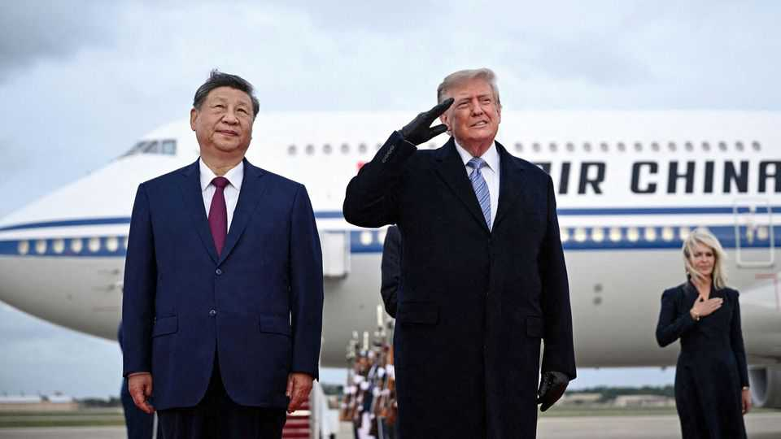
特朗普向联合国大会表示，他面临一个重大决定：是彻底摧毁伊朗，将伊朗人驱逐至地狱，还是达成一项结束战争、让伊朗重建的协议。他暗示双方将在美国11月中期选举后达成协议。美国与伊朗官员，包括特朗普的特使史蒂夫·威特科夫（Steve Witkoff）和伊朗外长阿巴斯·阿拉奇（Abbas Araghchi），自6月停火协议失效后首次举行会谈。特朗普称此次会晤“非常富有成效”。也门的伊朗支持武装胡塞武装表示，他们已对沙特阿拉伯发动无人机和导弹袭击，目标包括首都利雅得和能源设施。沙特方面称击落了袭击利雅得的导弹，但未确认是否还有进一步袭击发生。■
以色列总理本雅明·内塔尼亚胡指责纽约市长佐赫兰·马姆达尼支持哈马斯并煽动反犹太情绪。马姆达尼则称内塔尼亚胡是战争罪犯。内塔尼亚胡还批评法国总统埃马纽埃尔·马克龙称哈马斯“在约旦河西岸从未非常活跃”的言论为“荒谬”。法国官员表示马克龙的言论存在误译。巴基斯坦对阿富汗疑似恐怖分子据点发动空袭，击毙28名武装分子。这是巴基斯坦近三个月来首次报告的空袭行动，尽管期间仍发生无人机袭击、恐怖袭击及阿富汗与巴基斯坦军队之间的交火。在斯里兰卡，15人因策划2019年复活节星期日教堂与酒店爆炸案被监禁，该事件造成269人死亡。自杀式炸弹袭击者与激进伊斯兰武装分子有联系。■
爆炸事件提升了戈塔巴亚·拉贾帕克萨（Gotabaya Rajapaksa）的总统竞选，他最终赢得选举。多名官员因失职被罚款甚至判处死刑。委内瑞拉临时总统德尔西·罗德里格斯（Delcy Rodríguez）在联合国与特朗普会面。特朗普吹嘘一项协议，给予美国对委内瑞拉石油的优惠准入权：“胜者通吃”。罗德里格斯承诺举行自由选举，但未公布时间表。委内瑞拉流亡反对派领袖玛利亚·科里纳·马查多（María Corina Machado）一周内三次被阻止返回家园。美国、丹麦和格陵兰签署协议，欧洲希望借此终结特朗普威胁吞并北极领土的言论。美国长期获准在格陵兰建立军事基地，现获得更强保障，确保其继续拥有该权利，且俄罗斯和中国无法干涉。■
批评人士称该协议本可在不疏远欧洲盟友的情况下达成。英国新任首相安迪·伯纳姆与特朗普进行了首次面对面会谈。令唐宁街官员松了一口气的是，会谈进展顺利，尽管总统重申反对英国将查戈斯群岛主权移交毛里求斯的计划。这些岛屿设有美军空军基地，用于中东地区的军事行动。该移交计划因特朗普的反对在4月暂停。英国国防大臣韦斯·斯蒂灵确认，还需采取更多措施以获得美国对移交的批准。特朗普拒绝了对人工智能实施管控的呼吁，称其为“全球主义阴谋”。人工智能高管，包括OpenAI的山姆·奥特曼，向联合国安理会介绍了该技术对人类的潜在威胁。
最新的人工智能安全事件中，有报道称，一名OpenAI代理在6月独立入侵了澳大利亚政府卫生机构的文件系统。OpenAI直到8月才发现这一情况。特朗普呼吁全球将人工智能更名为“超级智能”。美国政界人士抱怨柴油价格上涨，自特朗普攻击伊朗以来，柴油成本持续攀升。爱荷华州参议员乔·格雷沙姆呼吁暂停柴油出口并启动救济计划“以帮助美国农民和卡车司机”。欧洲柴油价格因担忧美国供应中断而飙升。据报道，特朗普曾要求弗拉基米尔·泽连斯基停止攻击俄罗斯炼油厂，以缓解全球柴油供应紧张。乌克兰对莫斯科发动无人机袭击，据莫斯科市长称，至少有450架无人机被击落，称此次袭击“史无前例”。■
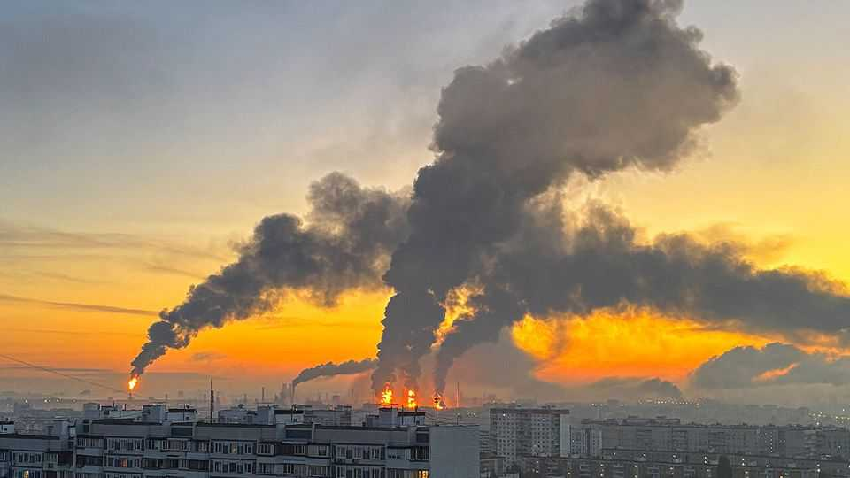
数架无人机袭击了俄罗斯最大的炼油厂之一，该炼油厂位于该市南部。乌克兰无人机打乱了原本可预见的俄罗斯议会选举进程。在严格管控的投票中，执政党统一俄罗斯党（United Russia）轻松胜出，该党自2001年起统治俄罗斯并支持弗拉基米尔·普京。投票率约为60%。反战政党“自由民主党”（Yabloko）被禁止参与选举。德国基督教民主联盟（CDU）主席弗里德里希·默茨（Friedrich Merz）誓言将继续担任总理，尽管该党在州选举中再次遭遇惨败。该党在梅克伦堡-前波莫瑞州（Mecklenburg-Vorpommern）仅获得4.9%的选票，这是自二战以来最差战绩。德国另类选择党（AfD）赢得约40%的选票；主流政界人士表示不会与民粹右翼政党合作。■
在柏林市选中，基民盟（CDU）跌至第二，落后于承诺没收20万处企业房产的左翼党（Die Linke）。埃塞俄比亚北部提格雷省冲突重燃，打破2022年结束联邦政府与当地执政党提格雷人民解放阵线（TPLF）内战的脆弱协议。战斗重燃威胁引发更广泛冲突，因包括TPLF在内的多个反政府组织宣布结盟推翻总理阿比·艾哈迈德。南苏丹总统萨尔瓦·基尔解散过渡政府。基尔将继续领导临时政府，称此举旨在筹备原定12月举行的长期推迟选举。■
更可能的是，这一举措是新一轮权力争夺中的最新动作，可能再次引发内战。一名法官下令白宫暂时恢复三家媒体机构CNN、MS NOW和Politico的记者证件，此前这些媒体的记者被禁止进入白宫大楼。特朗普曾指责这些媒体发布假新闻。这些媒体则指控政府侵犯了他们的第一修正案权利。■
§002 Business：本周商业原题：Business：本周商业 · 板块：The world this week · 栏目：本周
经过数月的不确定性，派拉蒙天空舞蹈公司（Paramount Skydance）与12个州达成和解，这些州由加州牵头，曾起诉阻止其收购华纳兄弟探索公司（Warner Bros Discovery），认为此举将损害电影产业。根据协议，派拉蒙承诺在未来五年内额外投入15亿美元用于国内电影制作，并须在接下来的两年内每年在影院上映至少30部电影，之后三年则需每年上映32部，否则将面临高额罚款。加州政界人士曾因派拉蒙威胁离开该州而感到不安。该州检察长表示，这项和解“并非对合并的支持投票”，但为完成合并扫清了障碍。
■
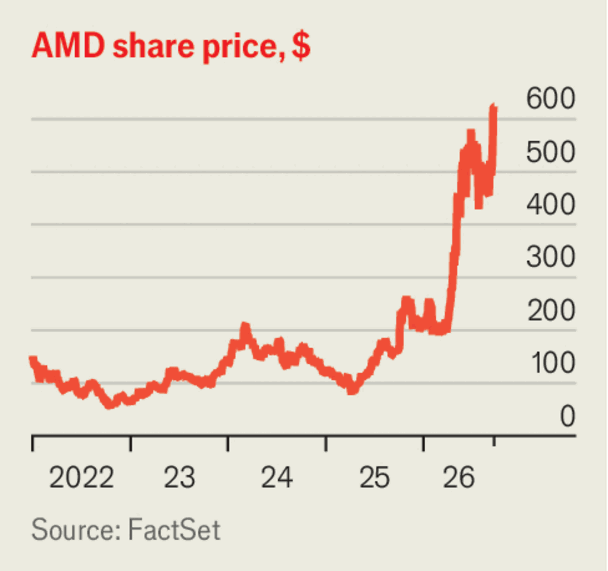
投资者对人工智能可能威胁人类的言论置若罔闻，推动科技股再度上涨，纳斯达克综合指数再创新高。AMD成为第四家市值突破1万亿美元的美国芯片制造商。尽管今年投资者对人工智能的前景偶有疑虑，但科技股整体趋势仍保持乐观。Meta股价也大幅上涨，因其个人AI助手Muse成为苹果应用商店下载量最高的免费应用。Meta称该应用可帮助用户通过Muse节省开支、改善健康、更聪明地购物，甚至改善人际关系。不列颠哥伦比亚省对OpenAI提起诉讼，指控其未向警方披露一名致命枪手的风险，该枪手2月在学校杀害了五名儿童和一名成人，并在之后又枪杀了两名亲属。
OpenAI的安全团队因嫌犯的ChatGPT账户聚焦枪支暴力而标记该账户，但向警方通报的建议被否决，据起诉书称。据报道，沙特阿拉伯已恢复通过东-西输油管道向红海港口延布输油。此前因多起无人机袭击导致输油作业暂停，沙特方面将责任归咎于伊拉克的民兵组织。原油重新流动的消息暂时缓解了油价压力。在美国压力下，日本央行将主要利率上调0.25个百分点至约1.25%。日本央行行长植田和男表示，央行在对抗通胀的斗争中可能进一步加息。■
债券市场再度遭遇抛售，交易员押注美联储将在10月再次加息。美国国债的每日收益率自2025年4月特朗普的解放日关税政策实施以来涨幅最大，十年期国债收益率重回5%以上。日本基准国债收益率创三十年来新高。英国政府再度收到银行家的警告，针对可能征收意外收益税的举措。工会呼吁工党在10月预算公布时对银行征税。但英国金融协会表示，此类具体征税措施将削弱英国作为银行投资目的地的吸引力。■
7月，摩根大通CEO杰米·戴蒙警告称，若英国对金融行业征收惩罚性税款，可能迫使该银行重新评估在伦敦设立大型办公区的决定，带来不利后果。大众汽车股价再度下跌，此前该公司宣布将削减对保时捷股权估值60亿欧元（约合69亿美元）。考虑到重组成本及中国业务放缓等因素，大众预计年度运营利润可能减少高达100亿欧元。雪上加霜的是，大众被剔除出蓝筹股欧元斯托克50指数，原因是指数提供商的审查。该公司股价年内已下跌30%。澳洲航空宣布将于2028年启动悉尼至纽约直飞航班，飞行时间约18小时。
澳大利亚航空公司计划明年开通悉尼至伦敦的直飞航班，航程长达22小时。该公司将对新增的长途航线时刻表收取额外费用，并坚称这些航线将带来盈利。沃伦·巴菲特正式将伯克希尔·哈撒韦公司的董事长职务交由其子霍华德·巴菲特接任。年届96岁的巴菲特本人已于年初卸任首席执行官一职，由格雷格·艾贝尔接任。尽管辞去董事长职务，他仍将留在伯克希尔董事会，继续为公司提供智慧。在致股东的信中，他称霍华德·巴菲特（71岁）“将守护公司的文化和价值观，这些比账面上的任何资产都更为珍贵”。
§003 当美国撤离中东 领导人 中东原题：When America walks away · 板块：Leaders · 栏目：领导人
美国似乎陷入中东泥潭，无法轻易摆脱与伊朗的战争。然而无论冲突如何收场，这实际上标志着美国从该地区撤退的时刻——即美国终于放弃其主导地位。自列强一个世纪前肢解奥斯曼帝国以来，中东的总体秩序首次不再由外部强加。这将带来清算旧账与暴力的狂欢，还是新的开端？自第一次世界大战以来，世界三大一神教的发源地中东，经历了苦难接踵而至的悲惨岁月。■
阿拉伯人曾与战争胜利者并肩作战，却在英国接管伊拉克、约旦和巴勒斯坦，法国占据黎巴嫩和叙利亚后感到被背叛。包括埃及的贾迈勒·阿卜杜勒·纳赛尔（Gamal Abdel Nasser）在内的民族主义领袖后来陷入毁灭性的苏联模式经济政策的泥潭。伊拉克萨达姆·侯赛因和叙利亚哈菲兹·阿萨德等独裁者对人权的肆意践踏，仅逊于其统治下极端分子所滋长的暴力狂热。历经三场战争、无数秘密行动和看似无尽的外交斡旋，美国试图强加自身意志的努力已告终结。如同英法俄，美国仍将卷入其中。它偶尔会动用军事力量维护自身利益，包括反恐行动。但将不再扮演设计者的角色。■
美国即将收缩的迹象已不容忽视——即便总统唐纳德·特朗普（Donald Trump）在联合国年度会议上第无数次威胁伊朗将遭“彻底毁灭”。其中两个迹象尤为明显。本月早些时候，美国拒绝与盟友沙特阿拉伯一道打击也门胡塞武装，后者正威胁红海航运安全。取而代之的是，美国在沙特不知情的情况下私下与胡塞武装谈判，以保护本国船只免受攻击。这看似细节，但当超级大国与叛乱民兵达成协议，世人皆知其意在削减承诺。另一迹象是外界普遍预期美国将缩减在中东的存在。和平时期，美国在中东有30,000-40,000名士兵驻扎于19个基地，其中8个为永久基地。然而战争暴露了其对无人机和廉价导弹的脆弱性。■
美国因此不得不依赖航母和印度洋的迪戈加西亚基地。一些专家主张将军事力量集中于少数地区，如以色列和约旦。这符合更广泛的军事部署调整，据NBC本月报道，可能有25,000至40,000名美军从欧洲撤离。特朗普政府将重点放在美洲。安全官僚希望为日益加剧的与中国竞争做好准备，正如本周特朗普与习近平的峰会所显示的，美中关系在谨慎共存与公开敌意之间摇摆。在中东的战争既无法推进这一目标，又会消耗美国的军备和亚洲驻军。而最终目的是什么？直到2020年，美国仍是石油进口国；如今却成为巨大的出口国。相比之下，中国已成为海湾产油国的最大客户，苏伊士运河则将中国商品运往欧洲市场。■
这使中国成为美国政策的最大外部受益者。但中国不太可能试图扮演中东霸主的角色——毕竟它已目睹美国为获得这种特权所付出的数万亿美元和数千条生命。相反，该地区有三个国家具备足够的实力开始填补权力真空，而这三个国家都不是阿拉伯国家。其中最危险的是伊朗。如果德黑兰政权崩溃，它将无力重建在伊拉克、叙利亚和黎巴嫩的破坏性影响力。如果该政权如预料般存续，它将试图通过控制霍尔木兹海峡、胁迫曾遭其攻击的海湾国家来获取利益。同时，它还将努力重建海外民兵组织。伊朗很可能重启核武器研发工作，这无疑仍是美国的底线。在这一切中，它或许会得到俄罗斯的支持。■
第二区域强国是土耳其，它一直在悄然加强与阿拉伯国家的关系。它已成为叙利亚新政府的主要支持者。与伊拉克，它正在推进贸易路线、供水和对抗库尔德分离主义势力的合作。上个月，它与巴基斯坦和沙特阿拉伯签署了安全协议。尽管它曾支持穆斯林兄弟会，但更务实而非意识形态化，致力于为国防工业和建筑公司开拓商业机会。第三位是以色列，该国是主导的军事和情报强国。在2023年10月7日的大屠杀后，它将自己视为现代斯巴达，致力于摧毁任何可能威胁自身的能力。在亚伯拉罕协议框架下，它与阿联酋建立了密切关系，尽管与巴勒斯坦达成协议的前景已逐渐黯淡。■
这三个国家很难和平共处。以色列与土耳其已在叙利亚剑拔弩张，以色列与伊朗之间仍有未了结的恩怨，伊朗与土耳其更是千年宿敌。失利者将是阿拉伯国家。伊拉克和叙利亚等国仍在从内战废墟中艰难复苏。曾是阿拉伯世界天然领袖的埃及，如今却将精力耗费在腐败与镇压国内反对派上。海湾君主国们则拥抱以经济繁荣为名的议程，试图用经济增长麻醉意识形态分歧。这虽值得欢迎，但其商业模式仍依赖美国的安全保障。卡塔尔、沙特阿拉伯和阿联酋这些超级富国之间的竞争正释放出不稳定因素——或许美国留给他们的最后礼物，就是帮助他们实现合作。■
阿拉伯人长久以来渴望重拾昔日作为科学与学习灯塔的辉煌。美国的收缩态势即将为他们提供机会。但每个退出的霸权都会留下未竟的蓝图和意外后果。深仇大恨与未结的恩怨依然存在。中东地区将难以说服质疑者。 ■
§004 领导人原题：Why house prices may be in trouble · 板块：Leaders · 栏目：领导人
如同许多政客，唐纳德·特朗普（Donald Trump）梦想着既吃蛋糕又不浪费蛋糕。今年1月他告诉内阁，希望让住房更负担得起，同时“推高拥有房产者的房价”。一个能同时做到这两点的政府，才堪称真正的蛋糕主义政权。
在现实世界中，只有房主在大快朵颐：许多富裕国家的房价接近历史高点。购房者则饥肠辘辘，尤其是2022-23年疫情后通胀推高债券收益率，使房贷成本大幅上升后。
债券收益率再次攀升，房贷利率随之上涨，央行为遏制顽固通胀而加息，同时政府面临债务膨胀和财政压力。美国新发放的30年期房贷平均利率接近7%，较一年前略高于6%，几乎达到疫情前的两倍。其他富裕国家的借贷成本也在上升。然而这次的结果可能是房价下跌。这正是政治家们即便有蛋糕主义的倾向也应欢迎的局面。最新一轮加息尚未达到前一轮的强度，但当前房地产市场比以往更缺乏韧性。随着可变利率房贷在富裕国家普及，更高的月供可能抑制购房者，尤其是家庭已基本耗尽疫情时期的储蓄。■
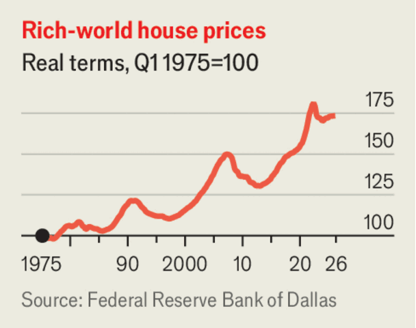
与此同时，房屋供应量相比2010年代略有上升。房价在名义上不太可能大幅下跌——除非处于深度衰退期，否则几乎从未出现这种情况。然而，即使考虑通胀因素后的价格下跌，也可能是一种健康的调整。首先，若大量民众无力负担住房，将拖累经济，尤其在推动21世纪商业的大城市中更为明显。尽管美国的薪资增长已明显跑赢通胀，但近年来住房总成本的涨幅更快。房价下跌对首次购房者将尤为有利，他们往往难以攒够首付。房价下跌也可能重振房地产市场。过去几年，固定利率房贷仍占主导的地区，房地产市场已趋于僵化，这在美国尤为明显。■
当地房主仍坚持低利率房贷政策，导致过去四年房屋交易量低于2007-09年全球金融危机以来的任何时期。这抑制了经济活力，使人们更不愿搬家以寻求更好的工作机会。在当前经济环境下，房主们或许终于愿意现在出售房产，而非等待房价进一步下跌。住房市场低迷的最后好处是提醒人们，房产并非长期投资工具。数十年来政府一直告诉家庭将住房视为储蓄工具，并在许多国家给予税收优惠。作为资产，房产具有优势：投资者可因流动性不足而获得溢价，普通民众则能借助财务杠杆（暂不考虑零售期权交易的狂野世界）。
将房屋视为金融资产违背了投资的基本原则，这一点在房价下跌时尤为明显。这种投资方式缺乏分散性（除非你是连续房东），相关风险难以对冲（保险只能起到有限作用），回报与未来收入高度相关（经济下行可能同时拖累工资和房产价值）。此外，家庭财务越依赖住房，就越容易产生邻避效应（NIMBY）的诱惑，阻碍开发从而稀释房产价值。最新一轮利率上升的根源——通胀、债务、地缘政治紧张——并无值得乐观之处。其对房价的影响或许只能带来些许安慰。■
§005 巴西背弃未来 领袖之争：卢拉与博索纳罗再对决原题：Brazil turns its back on the future · 板块：Leaders · 栏目：领导人
巴西得天独厚。其已探明的石油储量巨大且持续增长。境内流淌着世界最大的河流——亚马逊河，穿越其最大的雨林。巴西超过一半的电力来自水力发电。其农田是全球最富生产力的地区之一；它即将成为全球最大的粮食出口国，超越美国。其土壤之下蕴藏着丰富的稀土矿物。巴西2.2亿人口充满进取心、创造力和多样性。巴西的广阔潜力早已显而易见。当首都巴西利亚于1950年代建成时，其街道呈飞机形状，象征着一个准备起飞的国家。■
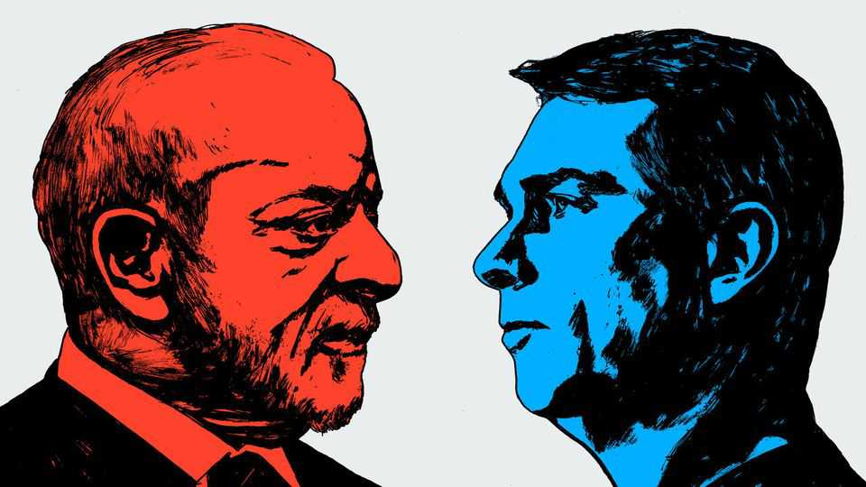
然而，巴西仍困在跑道上。过去半个世纪，巴西经济并未如预期般展翅高飞，而是相对于其主要竞争对手和全球平均水平的增长率持续停滞。10月4日的总统大选难以带来转机。巴西民众面临的抉择前景黯淡。现任左翼总统卢拉将与右翼民粹主义前任总统雅伊尔·博索纳罗之子博索纳罗对决。卢拉即将年满81岁，与乔·拜登2024年宣布退出连任时的年龄相当。他是一位民主派人士，对环境问题持积极态度。但他几乎未推动经济增长或削减开支。他未能推动经济改革（仅简化销售税算作例外），并称财政纪律是“无稽之谈”。其政府预计将在任期结束时面临过去25年来最高的公共债务利息支出。■
年轻博尔索纳罗（Flávio Bolsonaro，45岁）否认人类导致气候变化，质疑计票机器的可信度，并暗示若卢拉（Lula）胜选将不承认选举结果。他因涉嫌与暴力犯罪分子有牵连被调查，但本人予以否认。其核心政策是赦免其父，后者于2025年9月因策划政变（包括暗杀卢拉的计划）被判27年监禁，该判决源于2022年失去连任竞选。两人在民调中势均力敌，弗拉维奥支持率持续上升。两人在应对巴西两大核心问题——根深蒂固的腐败和公共支出的持续扩张——方面均缺乏可信度。若无切实计划缩减公共债务占GDP比例，债务利息螺旋风险将维持借贷成本居高，使经济缺乏提升生产率和增长所需的资金。■
政府支出的持续扩张推动了通胀，迫使央行维持高利率。缩减债务并降低利率将需要对政府支出进行大幅削减，其中92%的支出要么受法律约束，要么由巴西荒谬繁复的宪法规定。在缺乏更强增长的情况下，政治精英为争夺公共资源而展开的角力，使许多普通巴西人感到绝望，这对极权政客而言是优势。腐败也削弱了巴西的制衡机制。贾尔被定罪数周后，名为Banco Master的丑闻爆发并迅速波及最高法院。警方调查显示，该法院11名大法官中有5人与丹尼尔·沃卡罗（Daniel Vorcaro）存在关联，后者是这起丑闻的花花公子主谋。■
这种现象加剧了公众的愤世嫉俗情绪，使得巴西民众更容易忽视雅伊尔·博索纳罗因策划政变被定罪的事实，转而支持其子。最契合当下时代精神的候选人是雷纳·桑托斯（Renan Santos），这位雷厉风行的自由主义者主张推行深层次结构性改革和财政紧缩，以将巴西打造为世界强国。但无论是他还是其他任何非传统候选人，都未能撼动劳拉·卢拉（Lula）与博索纳罗（Mr Bolsonaro）两大政治机器的根基。这个国家正朝着一场可预见的危机滑落，但其政治精英阶层大多对现状习以为常，缺乏改变的动力。因此，巴西辉煌的未来至少将推迟四年。但这并非彻底终结。尽管存在腐败和封闭思维的政客，但该国许多关键机构仍能正常运转。■
联邦警察在调查沃卡罗（Vorcaro）欺诈案和此前的政变阴谋时表现出色；媒体依然犀利、独立且资金相对充足；外交部门在国际上享有盛誉。即便最高法院存在诸多缺陷，也成功将一名政变煽动者送入监狱。引发危机的最可能导火索是债务水平和借贷成本的急剧上升，进而导致经济状况恶化。这是一场熟悉的恶性循环，对年长的巴西人而言并不陌生，可能导致雷亚尔贬值、通胀加剧以及痛苦的经济衰退。或许只有在那时，巴西人才会转向那些愿意提出 unpopular case 的人，即为未来牺牲，以避免再次陷入两难选择。■
§006 背部和肩部手术往往弊大于利原题：Back and shoulder surgery is often worse than useless · 板块：Leaders · 栏目：领导人
| 手术成本高昂，数百万例或可取消
■
十分之六的英国人曾接受过手术，美国民众同样如此，每年花费或达5000亿美元，占全球最大医疗市场成人支出的三分之一。其中许多手术能挽救生命，如切除肿瘤、移植新器官或修复受损器官；另一些手术则能改善生活，例如通过白内障摘除术恢复视力，或通过鼓膜成形术恢复听力。然而，越来越多证据表明，每年有数百万例手术实属多余——考虑到开刀可能引发的并发症风险，这些手术往往弊大于利。
在十种常见的骨科手术中，这一专科占英国所有手术的四分之一，美国也占相似比例，仅有三种手术——腕管综合征治疗、膝关节和髋关节置换术——其疗效明显优于非手术治疗。其余六种手术，包括腰椎减压术等常见手术，疗效与药物、理疗或时间的考验相当。类似地，约三分之二的阑尾切除手术可通过抗生素治疗，而每年欧洲约有10万例前列腺手术，患者选择观察等待反而更优。■
英国国家医疗服务体系（NHS）最近减少了一项肩部手术的转介（仅是六种无效骨科手术之一），每年节省约1亿英镑（13400万美元），相当于其总手术预算的1%。这些无效手术长期存在主要原因是缺乏临床数据证明其有效性。外科医生们将询问这类手术是否有效比作从飞机跳伞时质疑降落伞是否有用。如果患者康复，就默认降落伞有效，监管机构也无需像审查新药那样要求证明其实际效果。外科医生个人既缺乏动力也缺乏资源自行验证。相比之下，药企则资助昂贵的随机对照试验，希望从被证实有效的药物中牟取巨额利润。■
政府可通过自行开展试验来纠正这一失误。英国国家医疗服务体系（NHS）已率先尝试，取得了一定成效。通过在英国各地多家医院测试手术流程，NHS避免了指责任何外科医生个人技术或遗漏真正高超医生的嫌疑。NHS及其他公共医疗体系应开展更多此类试验。一旦试验结果出炉，支付方——无论是公共医疗系统还是私人保险公司——将更易拒绝报销对患者无益的手术。这不仅将节省开支，还能让外科医生从不必要的肩部和背部手术中解放出来，投入更多时间处理膝关节、髋关节和腕管综合征等复杂病例。在医疗资源受限的体系（如NHS）中，此举将有效缩短候诊名单。■
7月，英国共有620万患者正在等待非紧急专科治疗，这一类别包括大量手术。要摒弃数十年来现代医疗实践的惯性思维，对医疗体系而言并不容易。对外科医生来说更是难上加难。如同所有医护人员，他们坚信自己是在为患者提供最佳治疗。但若手中只有手术刀，似乎所有问题都显得适合动刀。因此外科医生必须从医学院开始，随后在仍以学徒制传统为主的领域中，由导师们教导他们向患者提供多种治疗方案，并共同选择最优解，而非居高临下地决定。这种“共同决策”在临床医生中已成常态，但对许多外科医生而言仍属陌生领域。■
§007 领导人原题：Don’t let AI kill the author · 板块：Leaders · 栏目：领导人
如果《经济学人》只有两个忠诚对象，那很可能是对优质文字和创造性破坏的忠诚。这两个理念此前很少发生冲突——直到人工智能模型开始写作。如今，AI撰写的文字正赢得文学奖项，占据社论版面，正如我们本周报道的那样，还充斥着政客的嘴。英国议会辩论中十分之一的发言，以及美国众议院辩论中七分之一的发言，可能都是AI起草的。在书面文字领域，没有哪个作者是中立的。这家报纸对技术进步的赞赏已持续近两个世纪。
现在才对AI持抗拒态度未免太过分了。然而，作者与读者都应警惕将笔杆交给AI。诚然，在某些类型的写作中，AI接管或许是可取的：比如客户投诉或技术说明类文章，其中清晰度是首要目标。此类情形的关键在于披露AI的使用，并确保署名页面上的人仍对内容负责。各类作者若不借助AI模型进行研究、校对，以及在适当情况下提供反馈，将有违读者利益。然而在小说、演讲甚至新闻报道等其他领域，放弃人类作者身份则是个错误。目前，关于AI写作最普遍的抱怨仍是其文笔生硬。但这一抱怨建立在薄弱基础上。■
卢德派曾抱怨机器编织袜子的做工粗糙，但后来袜子质量提升了。AI的句子也终将如此。因此，任何对AI写作的严肃批评都必须基于文字与袜子的不同之处：文字承载的意义和重要性远超纸面内容。写作本身往往充满痛苦，即便对职业写作者而言亦是如此。但其中大部分痛苦实为思考的痛苦，是将思绪凝练成文字的过程。绕开这一过程无疑是获得更严谨、更原创人类思维的捷径。将论文外包给Claude的学生可能丧失推理习惯，依赖AI撰写政见的政客或许更难察觉其后果。另一个重大担忧则指向文字的消费者——或者说读者。■
AI写作颠覆了有文化素养群体的预期。人类文本的创作时间远长于阅读时间。这至少能保证某种努力——尽管世界仍充斥着令人沮丧的平庸文字——至少能证明某人曾认真思考过某个观点值得表达。经济学家称这种行为为高成本信号。无论法国理论家们如何谈论作者的消亡，读者仍渴望知道眼前文字出自某位具体的人。以诗歌为例。即便几年前AI技术尚不成熟，研究人员已发现许多人在盲测中更偏爱AI创作的诗歌。但理解诗歌的意义，依赖于对作者是人类的承诺，从而确保文字承载着某种意义。即使AI未被使用，它仍可能损害读者的阅读体验。
他们或许会在某些听起来可疑地机械化措辞上绊倒，进而放弃阅读余下内容。又或者，AI生成的虚假信息泛滥，会令人们不再信任真实新闻。这种污染信息环境的行为，正是经济学家所说的“外部性”。技术将重塑许多既定规范。AI也带来了巨大机遇，其中许多可能性目前尚无人完全掌握。然而，自由社会应对这些重大变革的方式，并非被动屈从于技术，而是主动适应。印刷术曾引发近代早期欧洲的宗教战争，1930年代的收音机则预示了法西斯主义的崛起。如今鲜有人将二者与如此戏剧性关联。社会正面对诸多其他可能带来风险的技术，如高脂肪食品和更强大的非法毒品。■
因此，试图精确描绘未来社会应如何运用人工智能进行写作，这种想法未免过于自大。但任何作家都清楚，写作的第一步是从初稿开始。这是我们的初稿。■
§008 巴西的下一位总统要么是复仇的"贵公子"，要么是年迈的左翼人士 专栏原题：Brazil’s next president will either be a vengeful nepo-baby or a doddering leftie · 板块：Briefing · 栏目：简报
几个国家比巴西更幸运。它面临入侵的威胁？它的经济比几乎任何地方都更能抵御唐纳德·特朗普的无理关税。它与两大超级大国的关系相对友好。最重要的是，它拥有备受追捧的资源。然而，随着巴西准备于10月4日举行大选，那句老话"这是未来之国，永远都是"再次应验。
巴西并未利用自身优势，反而几乎注定要迎来四年更具分裂性的僵局。民调显示，现年80岁的现任总统卢拉（Luiz Inácio Lula da Silva）与博索纳罗之子（Flávio Bolsonaro）势均力敌。后者是前民粹主义总统雅伊尔·博索纳罗（Jair Bolsonaro）的长子，后者因2022年败选后策划政变被判处27年监禁。这如同伯尼·桑德斯与特朗普小儿子的对决，若后者与犯罪集团有牵连。此次选举实为声望比拼。巴西民众担忧卢拉将拖累经济，而选择博索纳罗之子则可能引发文化战争、环境灾难，并与特朗普政府关系过于密切。两位候选人均无法获得足以应对巴西财政困境与制度性失灵的压倒性授权。■
悬而未决的选举之上笼罩着一起令人作呕的腐败丑闻，涉及花式派对（bunga-bunga parties）和一位花花公子银行家，这场丑闻已将整个政界乃至拥有最后防线作用的最高法院一并卷入。风险之高前所未有。政府正寅吃卯粮，债权人日益不满。特朗普将拉丁美洲视为私人游乐场，劫持委内瑞拉总统，扶植阿根廷总统，支持一系列选举中的右翼民粹主义者，并在加勒比海炸毁船只。若巴西——该地区最大国家及主要战略支点——与美国形成紧密联盟，他将更加肆无忌惮。更令人担忧的是，选举胜者将任命巴西最高法院11名大法官中的4名，这将深刻塑造该国未来数十年的发展方向。■
巴西堪称黄金国。当世界其他地区正为石油和可再生能源短缺而苦恼时，巴西却拥有丰富的资源。8月，巴西国家石油公司（Petrobras）在南美洲东北海岸的赤道边缘地区发现了首个原油储量，该地区是全球增长最快的石油产区。这将逐步提升其东部海岸“盐下层”油田已有的巨大产量。巴西89%的电力来自可再生能源，主要为水力发电。风能和太阳能发展迅猛，电网常无法完全吸收发电量。过剩的绿色能源可为数据中心供电，并使巴西成为低碳钢、清洁航空燃料和海运燃料生产中心。能源的丰富程度在食品领域同样显著。■
上世纪70年代，严重饥荒仍司空见惯，迫使数百万移民，包括年轻时的卢拉及其七个兄弟姐妹，从干旱的东北部迁往南部巨型城市。此后农业研究的突破使内陆地区得以发展养牛和农业。今年巴西将超过美国成为全球最大农产品出口国，目前其在牛肉、咖啡、棉花、橙汁、大豆和甘蔗等产品上均居世界首位。去年特朗普不得不撤销对巴西农产品的关税，因这些关税在博索纳罗总统受审期间推高了美国食品价格。地下同样蕴藏财富，巴西拥有全球第二大稀土储量，这类矿物广泛用于高科技产品，几乎全部由中国企业生产。■
巴西因此可能成为西方国家寻求替代供应商的关键所在。巴西利亚一位外交官表示，欧洲和美国的特使们正“以积极的方式对我们施压，希望达成稀土交易”。这种能源、粮食和矿产资源的丰富组合使巴西成为去年除中国外，接收外国直接投资最多的新兴国家。巴西吸引了770亿美元投资，远超印度的390亿美元。“在地缘政治冲突加剧的世界中，巴西拥有难以估量的实物资产，其价值将持续上升”，纽约一家咨询公司欧亚集团（Eurasia Group）的克里斯托弗·加曼（Christopher Garman）表示。然而，尽管外界热情高涨，巴西仍面临严重问题制约经济发展。实际利率高达9%，抑制了增长。这导致企业违约率上升和家庭债务增加（见图表1）。■
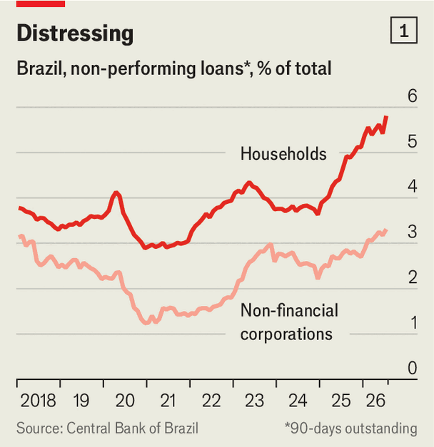
卢拉面临与拜登相似的困境，另一位高龄领导人因选民对经济前景悲观而遭遇连任竞选困难。超过一半的巴西人认为经济状况糟糕或非常糟糕，这一比例近期持续上升。目前约有900万家企业陷入债务违约，较十年前的400万增长近一倍，当时巴西正经历经济衰退。根据圣保罗咨询公司Tendências的数据，债务偿还占平均家庭收入的30%，为该公司自2004年开始统计以来的最高水平。问题根源在于政府自身的巨额借贷，推高了其他人的借贷成本。巴西政府债务占GDP的近100%。财政赤字超过GDP的9%。政府支付的利息占GDP比重，仅次于埃及和巴基斯坦，是所有主要国家中最高的。巴西历史上频发恶性通胀和经济衰退，使贷款人格外谨慎。■
大部分债务与国内利率挂钩，意味着每当利率上升，偿债成本也随之增加。在2003年至2011年以及自2023年以来的三届总统任期内，卢拉（Lula）大手笔地投入资金用于福利发放和补贴信贷。例如，9月17日，他将政府旗舰社会福利计划“家庭补助计划”的支付金额提高了15%。巴西民众高兴地挥霍了这笔意外之财，这使得经济持续增长，失业率保持低位。但生产率却停滞不前，消费者似乎也在放慢脚步。经济学家预计，2027年和2028年的年均经济增长率将维持在1%左右。本月早些时候，卢拉（Lula）提出了一项令人担忧的解决方案：“我们需要结束这种荒谬的保持盈余和财政纪律的做法。”■
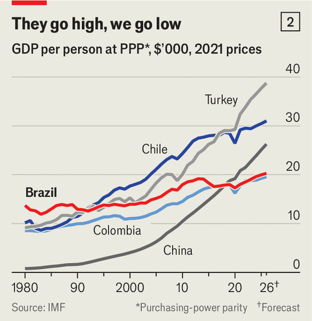
1980年，巴西人的人均GDP（按生活成本调整后）明显高于智利人和哥伦比亚人，更不用说土耳其人和中国人。如今哥伦比亚人已迎头赶上，而其他群体则普遍富裕得多（见图表2）。博索纳罗家族这些根深蒂固的民粹主义者也难逃此局。博索纳罗总统打破了2016年为恢复市场信心而设定的支出上限。为提高连任几率，他将家庭补助计划（Bolsa Família）发放的现金金额增至三倍，并将近收缴人数几乎翻倍。尽管弗拉维奥承诺财政节俭，但当他的支持率在7月开始在女性群体中下滑时，他却承诺向7000万女性提供免费手机和互联网服务。两位候选人都将难以应对推动支出上升的利益集团。其中之一就是退休人员，他们成功锁定了养老金的持续增长。■
巴西的最低工资每年根据前两年的通货膨胀率和GDP增长率进行调整。养老金、残疾津贴、失业保险及其他福利均与最低工资挂钩。这意味着每月最低工资每上涨1雷亚尔（0.19美元），政府年度公共支出便增加40亿雷亚尔。这种挂钩机制正吞噬联邦预算：目前90%的预算用于强制性支出，主要为养老金。按当前趋势，到2029年将无余款用于自由支出，导致政府停摆。这种对老年人的过度优待剥夺了年轻人获得更好教育、医疗和基础设施的权利。巴西养老支出占GDP的10%，与日本相当，尽管其人口远比日本年轻。与此同时，巴西仅将GDP的18%用于投资，不足印度的一半。受宠的官僚则是预算的另一负担。■
宪法规定，官员的薪酬不得超过最高法院法官，后者每月可领取8865美元。然而，超过67000名公务员因享有免税住房、交通及其他补贴，实际收入远超法官。本地媒体将这类“超薪”称为“超级薪资”，其使法官及公诉人的中位收入达到全国平均水平的48倍（美国最高薪法官仅是全国中位工资的6倍）。共和党研究机构Republica.org的古尔赫梅·科埃略表示：“巴西正被顶层公务员绑架。” 不合理的税收优惠是第三大负担。部分企业税漏洞甚至被写入宪法，每年造成高达国内生产总值7%的损失，较2003年的2%大幅上升。一位经济学家表示：“在这里，企业不是在市场上竞争，而是在争夺政府的份额。” ■
医生、律师等专业人士也享有特殊优惠。理论上，两位候选人决心打击既得利益集团。卢拉已取消部分税收优惠，并使新设税收优惠变得更加困难。弗拉维奥（Flávio）的顾问热情地抨击州内的“寄生虫”。他的竞选团队经济政策负责人达妮埃拉·马尔克斯（Daniella Marques）称赞阿根廷自由派总统哈维尔·米莱（Javier Milei）为“一个伟大的榜样”。但当被追问时，他的团队却鲜有具体方案。实际上，胜出者将难以遏制此类支出。养老金改革在巴西与其他国家一样政治上都极具难度。过去十年间，一系列软弱总统将国会成员掌控四分之一的自由支配支出，用于在各自选区发放，缺乏有效监管。大量资金最终流入了朋友口袋，而非当地学校或诊所。■
过去四年，卢拉（Lula）未能恢复秩序。下一届议会很可能由右翼政党主导，这将使他更难执政。弗拉维奥（Flávio）也未能赢得多数右翼政党的支持。若要推进议程，两人均需继续收买国会。国会并非唯一存在可疑动机的机构。2023年，巴西最高法院允许法官在涉及与自身亲属有关联的公司或个人的案件中裁决。巴西现任最高法院十位大法官中，有八位的亲属在代表法院审理案件的律所工作。不法分子雇佣他们，希望获得特殊待遇。影响力交易的普遍性通过巴西信贷银行（Banco Master）的崩溃暴露无遗。■
其上司丹尼尔·沃卡罗（Daniel Vorcaro）曾为政客和法官举办奢华派对，甚至从俄罗斯、委内瑞拉等地空运性工作者。他偏爱外国妓女，因为她们听不懂客户们的对话。在名为“女巫撒旦”（Madame Satan）的夜总会举办的万圣节派对上，120名女性与仅20名男性出席，其中多数为政客。银行家与幕僚之间的一条短信显示：“达维正疯狂追问瑞士女孩是否来得及到场”，这似乎指向国会主席达维·阿尔库姆布雷（Davi Alcolumbre）（他否认与此事有关）。去年11月沃卡罗试图乘私人飞机逃亡被捕后，联邦警察对其八部手机进行了彻底调查。结果发现，最高法院近半数成员都与他存在关联。■
消息显示，沃卡罗先生（Mr Vorcaro）为一位法官支付了保镖费用，向另一位法官所属的酒店购买了价值400万美元的股份，并为另外两位法官的妻儿签订了内容模糊却极为奢华的合同。巴西的制度已陷入相互确保毁灭的境地。唯有最高法院有权调查政客的犯罪行为（如腐败），而唯有政客才能弹劾最高法院法官，而他们正承诺这么做。国会议员有动机针对调查他们的法官展开行动，而法官则有动机针对希望弹劾他们的国会议员采取行动。Banco Master丑闻牵涉整个精英阶层意味着，一场幕后交易最终可能让所有人脱罪。两位领跑者都无法根除腐败。弗拉维奥（Flávio）正是其中一员。■
他声称从未见过沃卡罗先生，这使得今年5月两人对话录音的泄露格外尴尬，尤其是因为他称这位银行家为“我的兄弟”，并要求2500万美元用于拍摄一部关于其父亲的电影。最终有近1.1亿美元到账，其中大部分最终流入了弗拉维奥实际兄弟爱德华多（Eduardo）的银行账户，爱德华多现居德克萨斯州。弗拉维奥还因涉嫌在担任里约热内卢市议会成员期间侵吞虚构员工的薪资（他否认指控）以及与当地犯罪分子的关联而遭到调查。其中一段尤为臭名昭著的联系是阿德里亚诺·达·诺布雷加（Adriano da Nóbrega），这位前警察队长后来领导了一支死亡小队。弗拉维奥在被监禁后仍提名诺布雷加获得勋章，并为其妻子和母亲提供工作。他表示自己当时并不知情他们已被列入其雇员名单。（■）
与此同时，尽管卢拉未被牵连进巴西国家银行（Banco Master）案件，但他的部分盟友却涉及其中。其所属政党仍因过往腐败丑闻而声誉受损，其子弗拉维奥正因权钱交易被调查。此次竞选活动充斥着琐碎且缺乏实质内容的攻击。弗拉维奥的主要提案是赦免父亲并弹劾判他入狱的法官。本月，前空军司令卡洛斯·巴普蒂斯塔·儒尼乌发表了一本著作，详细披露博尔索纳罗曾试图说服他和其他军方高层发动政变，并提出如何废除他刚刚输掉的选举的设想。博尔索纳罗在军队司令警告他“如果你这么做，我不得不逮捕你”后才放弃该计划。与父亲一样，弗拉维奥也质疑巴西的投票机，错误声称委内瑞拉曾使用同类型机器进行选举舞弊——这完全是彻彻底底的谎言。■
他是否接受卢拉获胜仍不清楚。弗拉维奥的其他提议不过是空谈。他表示将颁布法令称“巴西属于主耶稣基督”，并化学阉割强奸犯。若获胜，将意味着与特朗普的紧密结盟。弗拉维奥及其家人曾游说特朗普政府对博索纳罗的政敌征收关税和制裁。竞选集会上，支持者举着美国国旗，抬着充气制作的特朗普雕像，该雕像手持卢拉的衣领。弗拉维奥似乎愿意顺从美国对稀土资源的广泛要求。白宫希望巴西在出售任何涉及关键矿产的企业或资产前通知美方，并限制“外国实体”的投资，实际上赋予美国对巴西矿产使用拥有否决权。
尽管法里亚·利马（Faria Lima，巴西的华尔街）谨慎地支持弗拉维奥（Flávio），希望他能兑现削减开支的承诺。卢拉（Lula）则强调投资国防和人工智能。他有减少森林砍伐的坚实记录，曾推动数据中心和稀土投资的法律，尽管涉及大量政府参与。“我们想建立一个高附加值供应链，而非简单地以殖民方式出口原材料，只留下地下的空洞。”卢拉竞选团队的部长古伊尔默·布卢斯（Guilherme Boulos）说道。然而，卢拉的构想缺乏资金支持，他也没有可信的财政整顿计划。在集会上，他常常滔滔不绝地讲述过去的辉煌和人生经历。■
他的年轻妻子开始发布他健身的视频，以证明他身体状况良好。公开场合他戴着巴拿马帽，以遮掩因去除痣和浴室跌倒后手术留下的伤疤。巴西并非无药可救。即便政治陷入堕落的丑闻漩涡，健全的公民社会、蓬勃发展的自由媒体和独立的国家警察仍能对权势者形成监督。学术界人士塞尔索·罗查·德·博罗斯指出：“至少在巴西，腐败调查实际上在进行。”印度和土耳其的记者或许会对此感到羡慕。巴西仅用数十年时间便战胜了饥饿、恶性通胀、军事统治和政变企图。尽管存在诸多问题，巴西仍能勉力维持运转。然而下届总统任期恐怕将陷入混乱。两位主要候选人似乎都不愿解决政府财政问题。■
两者在国会都缺乏推行实质性改革所需的支持。国会本身和法院都无法解决巴西的制度性腐败，因为它们本身都深陷其中。情况将在好转前进一步恶化。■
§009 伊斯兰主义是否是讨论极端主义的有用术语原题：Is the term “Islamism” a useful way to discuss extremism? · 板块：Letters · 栏目：读者来信
请通过电子邮件发送书信至 letters@economist.com 了解我们如何处理您的来信 《经济学人》提出“伊斯兰主义”是讨论极端主义的有用术语，而不将穆斯林集体视为威胁（“Much ado about…something”，9月12日）。然而文章中将宗教虔诚、保守态度、政治组织、加沙活动、对沙里亚法的看法以及支持暴力等现象归为更广泛的意识形态威胁的证据。■
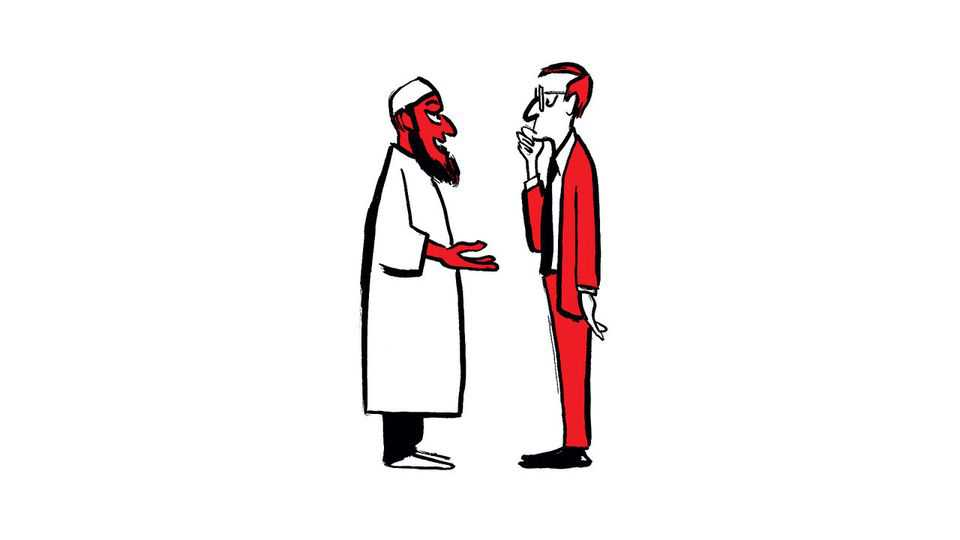
“伊斯兰主义”一词如今被使用得过于宽泛，以至于既可以用来描述暴力极权运动，也可以用来指代普通穆斯林游说政府、抗议或参选的活动。穆斯林的政治参与并不等同于“渗透主义”，后者要求有试图进入并积极颠覆制度的证据，而非仅仅参与公共生活。穆斯林并非单一的政治项目。我们的信仰或许能影响我们对贫困、种族主义、战争或不平等的理解，但宗教承诺并不能说明某人偏好的政府形式。对许多穆斯林而言，沙里亚法主要涉及个人的宗教与道德实践。穆斯林已花费数十年被要求融入社会并参与公共事务。然而当他们有效组织、选举穆斯林政客或挑战政府政策时，这种参与本身反而变得可疑。■
穆斯林人口显著的社区反映的是迁移、家庭和社区网络、住房、就业、贫困和歧视的模式，而非共同的政治意识形态。英国长期存在针对穆斯林的仇恨，从歧视和威胁到清真寺袭击、纵火和严重人身暴力，伴随极右翼和新纳粹组织策划的杀害穆斯林阴谋被挫败。北爱尔兰近期的种族主义和伊斯兰恐惧症暴行、格拉斯哥的刺杀事件，是英国穆斯林社区面临敌意和暴力的更广泛现象的一部分。极端主义和暴力应被应对。但保守主义、偏见、胁迫和暴力并非同一现象的不同程度。拒绝“伊斯兰主义”这一模糊标签，意味着不将普通穆斯林的宗教和政治生活视为极端主义证据。■
娜奥米·格林博士 英国穆斯林理事会助理秘书长 贝尔法斯特 我并不难指出伊斯兰主义者。正如你所指出的，在伦敦怀特查佩尔区的Kismet咖啡馆，我们不会支持那些一生都在告诉其他穆斯林他们不够伊斯兰的人。但要应对伊斯兰主义，首先需要定义它。一个认为信仰应影响政治的穆斯林，并不因此就是伊斯兰主义者。同样，戴头巾、反对英国政府的反恐早期干预策略Prevent、抗议加沙或支持独立穆斯林候选人的人，也不属于伊斯兰主义者。我自己也不同意其中一些观点；这些立场并非极端主义，政治参与也不代表伊斯兰主义。■
您的文章承认了这一区别却随即模糊了它，将人口增长、隔离、社会保守主义和选民组织等要素混入单一的令人不安的叙事中。伊斯兰主义者与极右翼彼此需要：两者都告诉穆斯林他们永远无法真正融入，且都推崇最不宽容的伊斯兰教版本作为最真实的信仰。严肃的分析应避免重复他们的前提，同时声称反驳它。我所知的英国包含数百万既是穆斯林又是英国人的群体。由我参与创立的康科迪亚论坛（Concordia Forum）委托进行的民调显示，去年十月调查显示，85%的英国穆斯林认为民主是最优政体，而更广泛公众中这一比例为71%；94%的穆斯林支持所有信仰及无信仰者在法律面前平等对待。■
一个被视作政治伊斯兰先锋的社群，其多数成员却强烈渴望着政治伊斯兰所排斥的东西。这个故事没有那么轰动，但同样真实。穆达萨尔·阿赫默德（Muddassar Ahmed）创始人Kismet Café伦敦。您对穆斯林社群内部伊斯兰主义压力的讨论中，一个重要元素被忽略了。欧洲已拥有强大的自由主义原则。《欧洲人权公约》第9条明确保障思想、良心和宗教自由，包括改变宗教或信仰的自由。该条款也承认，宗教表现可能在必要时受到限制，包括“为保护他人权利和自由”。这一原则应获得更突出的地位。那些抵制保守社群压力的穆斯林应知，其个人权利受到保护。■
同样，那些担忧伊斯兰主义“入籍主义”的欧洲人应明白，宗教自由并不赋予某个群体对其成员的无限权威。政府无需探查个人的隐秘动机，也无需决定哪些伊斯兰教义诠释可被接受。他们应阐明并执行一个更简单、宗教中立的原则：个人是权利的主体，加入宗教团体不得削弱这些权利。让这一原则被广泛理解，或许既能保护易受伤害的穆斯林群体，也能回应反穆斯林民粹主义所依赖的部分不信任。Sethu Rathinam 锡达拉皮兹（Cedar Rapids） ■
您的关于美国与巴拿马安全合作的报道设定了一个虚假的选择：要么巴拿马接受无限制的外国访问，要么以某种方式放弃巴拿马运河（“欢迎来到丛林”，8月29日）。这显然不符合现实。没有哪个国家比美国更关注帮助巴拿马加强安全、保护运河并防止外国敌对势力的影响。在唐纳德·特朗普（Donald Trump）总统任内，这种承诺再次清晰可见。多年来，美国历届政府都忽视了巴拿马及整个美洲地区，导致毒品、武器、非法移民甚至恐怖分子通过我们的地区流向美国街头和社区。特朗普总统上任时决心改变这一局面。美巴关系远不止是一次军事演习或丛林训练基地，或任何单一项目与计划。■
这关乎区域主权、安全、繁荣，尤其是常识。特朗普总统专注于维护美国的安全与经济实力。两国共同肩负着确保运河不落入任何对手之手、并保持国际通商的义务。这就是为何准备工作至关重要，这就是为何合作至关重要，这就是为何安全不能仅依赖外交辞令。捍卫运河并应对其脆弱性，不是美国对巴拿马的单方面施压，而是两个主权国家基于共同义务的合作——确保运河安全、稳固且畅通。美国与巴拿马并肩抵御任何威胁运河的挑战。凯文·马里诺·卡贝拉（Kevin Marino Cabrera） 美国驻巴拿马大使 巴拿马城航空业是人类最难实现脱碳的行业，其转型将需要数十年的技术革新。■
■ 人为操控凝结尾迹是一种相对廉价且简便的方法，可削弱飞机尾迹对全球变暖的影响（“更蓝更凉的天空”，8月22日）。目前研究主要聚焦于避免形成凝结尾迹，但主动制造凝结尾迹也有其价值。由于凝结尾迹通常寿命较短，因此在白天主动制造它们（使地球更有效地反射阳光，产生降温效果）并避免夜间形成，因为夜间它们会将红外辐射反射回地球，导致升温。要使这种策略有效，需要精准的大气模型，而这类模型仍在持续改进。布鲁斯·萨希尔博士，加利福尼亚州圣克鲁兹市Runway Energetics公司
飞机尾迹可能对地球的升温影响超过飞机引擎排放的二氧化碳，您在报道中提及。
若航空运输量在航迹云增温减少三分之二后仍持续增长，其对气候的影响将不再超过直接碳排放增温。换句话说，当航空业持续扩张时，重新规划航线的必要性最强。地理因素也限制了航线调整在航空业增长最快的地区的效果。按面积计算，航迹云对欧洲的增温强度是东亚和中国地区的十倍以上，因这些地区飞机巡航高度较低，副热带空气更干燥。在这些区域，几乎所有长期存在的航迹云均形成于原有冰云内部，其中新增增温效应微弱，甚至可能转为降温。重新规划航线成本低廉且值得一试，但其效果具有短期性。相比之下，航空碳排放导致的增温将持续增长，只要喷气燃料仍在燃烧。■
本·桑德森 研究教授 哥本哈根国际气候研究所 挪威 你们关于罗马太空望远镜发射的报道（9月5日“宇宙视角”）中忽略了一个重要成就。美国宇航局（NASA）提前完成并控制在预算内交付了这台望远镜。罗马望远镜的“原前身”哈勃望远镜于1977年正式启动，却比原定计划晚了七年，按通胀调整后的成本已超过190亿美元。相比之下，罗马望远镜提前九个月交付，其全生命周期成本约为43亿美元。当罗马望远镜于2027年初首次将图像传回地球时，美国纳税人将有充足理由感到惊叹。T. 迈克尔·斯宾塞 华盛顿特区 “法律而非口水战”（8月29日）报道了中国国家机器试图将法律影响力扩展至全球的努力。
你提到19世纪殖民列强拒绝承认中国在条约口岸的法律，而中国共产党至今仍视其为一种屈辱。你发现中国如今想要参与现代域外管辖权的制裁与反制裁博弈令人惊讶。外国人在华的域外管辖权适用于整个中国，不仅限于条约口岸，且延续至20世纪，直至第二次世界大战。戴假发、穿长袍的英国法官曾在中国各地主持审判，由英国陪审团裁定被告有罪或无罪。1907年，一名在美国医生在西藏射杀佛教僧侣后，被押解至上海，在美国驻华法庭受审。最后一场美国法庭审判发生在1943年，地点是昆明的自由中国，被告是飞虎队成员。■
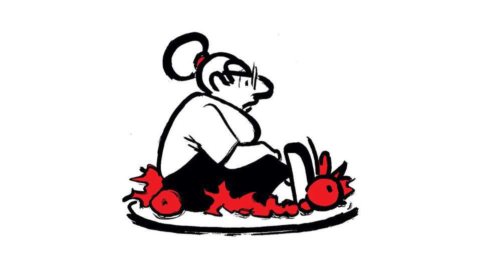
中国并非从原则上反对属地管辖权。在能够做到的情况下，中国曾为本国国民争取属地权利。1870年代，中国与日本达成相互属地管辖权协议；1880年代，中国则将属地管辖权施加于朝鲜。对中国而言，属地管辖权也是大国博弈的一部分。如今中国视自己为大国，为何不愿参与现代版的大国博弈？道格拉斯·克拉克 香港“要点”（8月22日）一文强调了标点符号的重要性。试想玛丽亚·费多罗夫娜（俄罗斯女皇）的误用逗号如何拯救了一名政治犯免于流放。原句“赦免不可能，将被流放至西伯利亚”因逗号位置改变而变成“赦免，不可能被流放至西伯利亚”，原本严厉的谴责句式被彻底改写为绝对释放。■
我小时候学到的维持家庭晚餐和谐的教训是：永远记得在“Let’s eat, Grandma.”中加逗号。否则，“Let’s eat Grandma”会让祖母登上晚餐菜单。MICHAEL BURIKSan Rafael, California 您对Florence Hazrat的《On the Mark》的评论让我回想起维克多·博格（Victor Borge）的一段喜剧表演，这位丹麦裔美国喜剧演员的段子可在YouTube上搜索“Phonetic Punctuation”找到。博格朗读书籍段落时，为每个标点符号赋予声音，效果滑稽至极——嗖地一声。DOUGLAS KRAJNOVICHMerced, California 英国虽比法国拥有更多奶酪，但在切奶酪的礼仪上却远不及法国的不成文规则与礼节（“Say cheese!”，8月15日）。若你连想切le nez（法语：鼻尖）的念头都有，就可能被社交圈排除。■
用刀切布里欧奶酪（而非像披萨那样切点心）会引发极度的不屑。切忌将Tomme de Savoie蘸蛋黄酱，否则将被紧急送往Xaintrie。Mike Cook伦敦 ■
§010 印度教育体系以新方式陷入困境 亚洲原题：India’s education system is failing in new ways · 板块：Asia · 栏目：亚洲
印度正在谈论教育。在经历了以青年抗议为标志的炎热夏季后，教育部长被推翻，如今关注点仍聚焦于几乎3亿印度人就读的学校、学院和大学。9月6日德里学生宿舍的致命坍塌迅速成为忽视的又一象征。与此同时，领导抗议的蟑螂人民党（Cockroach Janta Party, CJP）鼓励支持者在全国范围内举报学校状况，使数百万社交媒体用户将目光转向印度儿童本应学习的恶劣环境。街头行动的导火索是一场考试泄密。 ■
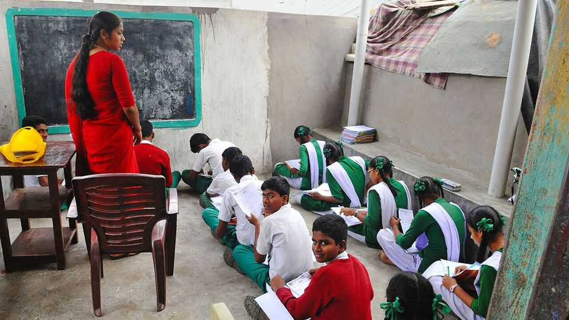
但真正点燃愤怒的，是这个已沦为布朗大学亚米尼·艾亚尔所称的“痛苦机器”的系统。在可能是全球最严苛的选拔性考试中，数以千万计的教育质量欠佳的学生为争夺少数进入顶尖大学和政府岗位的“黄金通行证”而激烈竞争。他们的家庭为此投入大量资金用于私人辅导、学校和学院。但对大多数人而言，最终仍以失望告终。据班加罗尔阿齐姆·普雷姆吉大学统计，仅7%的毕业生能在一年内找到正式工作。多数人长期失业，原因在于毕业生数量与岗位数量之间存在巨大缺口（见图表）。教育质量不佳并非印度无法创造足够就业机会的主要原因——更明显的症结在于治理不善和阻碍私营部门发展的不良规则。但教育质量差无疑加剧了问题。即便国家持续输出毕业生，许多企业仍面临招聘困难。
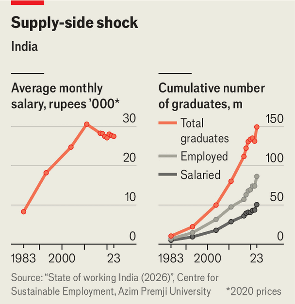
印度“正在培养文凭持有者，而非具备技能的人才”，加州大学圣地亚哥分校的卡里克·穆拉利达兰（Karthik Muralidharan）指出。过去三十年，印度教育体系以惊人的速度扩张，却也催生了新的问题。要了解现状，可跟随一名儿童的成长轨迹。她在入学第一天或许会感到庆幸——1990年，印度近四分之一儿童未能接受小学教育，如今这一比例已降至2%。但随着入学率攀升，教育质量却持续下滑。2022年的一项农村学校调查显示，五分之三的五年级学生仍无法读懂二年级的阅读材料。此后虽有小幅改善，部分州推动教师聚焦基础读写和数学能力培养，但多数学校仍未落实，导致学生缺乏学习所需的基础能力。结果，许多学生在课堂上沉默寡言，几乎未学到任何知识。这种状况延续至中学阶段。■
CJP关注破旧教室的焦点作为竞选议题（谁还能为有窟窿的天花板辩护？）合情合理。但印度真正的症结在于教师。各州政府在监督教师履职方面屡屡失职，部分原因在于教师工会往往构成庞大的选票集团。2024年，农村地区中学教师每八天缺勤一天。印度仅在2009年参与过国际PISA评估，其学校表现糟糕，阅读、数学和科学三项成绩位列74个国家和地区末位前三。难怪家长开始另寻出路。近1亿印度儿童就读于收费私立学校，占儿童总数的39%，较2015年的32%显著上升。少数学校质量优异，但多数为预算私立学校，服务于勉力维持生计的家庭。■
家长对教育质量的要求提高是件好事，理论上私立教育的发展也能为政府提供更多资源。但这种大规模的教育私有化趋势使政界人士更缺乏提升教育质量的压力。私立教育机构的监管也存在不足，新问题因此叠加在旧问题之上。当学生进入蓬勃发展的高等教育领域时，同样的趋势也在上演。印度有约30%的儿童接受高等教育，这一比例较十年前的20%有所上升。其中大部分增长来自低种姓群体的学生。这一增长主要得益于“附属学院”（小型私立机构，隶属于大学）的扩张。在德里南部的COMM-IT职业学院（附属学院），一群年轻学生表示，他们每年需支付40,000卢比（约合420美元）的学费。多数学生来自贫困家庭，对他们而言，这是一笔数额大且风险高的投资。■
他们无法达到公立大学的入学标准，因为公立大学学费更低。“压力很大，”有人表示。“太多了！”另一人则喊道。他们说老师不错，但设施十分简陋。这所学院自称是“德里（India）最好的学院之一（注：原文拼写错误）”，其网站上展示着“杰出校友”的轮播图，这些校友大多从事企业工作。过去十年间，这类学院已激增超过10,000所。专家对此表示担忧。其中一个问题是，财政紧张的大学如今依赖附属学院创收，因此缺乏推动高标准的动力。而基础教育薄弱意味着许多学生入学时已落后多年。难怪一些企业认为文凭毫无价值。纵观整个体系，有三点尤为突出。第一，印度仅部分摆脱了其历史遗留问题。■
该国早期领导人忽视大众教育，认为工业现代化可通过少数精英学校和大学实现。如今印度已建立大众教育体系，但体系仍高度精英化：少数高质量院校——主要由特权阶层占据——之后是大量低质量院校。阿齐姆·普雷姆吉大学（Azim Premji University）的阿米特·巴索尔（Amit Basole）表示：“我们从未设计过以中等水平儿童为中心的教育体系。”第二个问题是教育往往沦为牟利工具。私立学校年收入或达300亿美元，教练行业则超过80亿美元。两者都利用人们的进取心。贫困家庭投入资源获取低质量文凭，却难以获得体面工作。在印度这样的国家，日益扩大的私立教育市场亟需强有力的监管。
相反，许多政客却视其为牟利的手段，贾瓦哈拉尔·尼赫鲁大学的桑托什·梅赫罗特拉指出。“这些附属学院是谁设立的？是政客们。”第三是资源配置失衡。印度教育体系的投资回报率低下。其持续扩张部分源于承担着多重职能。对家庭而言，学位是社会地位的象征；对女性而言，它是提升婚姻前景的途径。甚至一些体力劳动岗位如今也无端要求学历。CJP的成功在于提升了教育的重要性。政客们感到恐惧，因为该组织的诉求具有广泛吸引力——既吸引着陷入困境的学生，也打动着为教育体系运转提供润滑的家长。然而，印度教育体系的弊端具有系统性，其修复难度远非漏雨的教室屋顶可比。■
订阅我们的Essential India（印度简报）免费周报，即可及时掌握我们的印度报道。■
§011 澳大利亚数据中心巨浪原题：Australia’s giant data-centre boom · 板块：Asia · 栏目：亚洲
澳大利亚靠运气走到了今天。如今它也渴望获得智能。该国正着手建设数据中心，这些设施是全球人工智能竞赛的核心引擎。投资者计划将1560亿美元投入该国的计算集群——仅次于美国的1.8万亿美元和中国的2950亿美元。这一现象的原因，如同澳大利亚的矿产资源一样，大多源于好运。但其政府希望确保这种好运能持续。本月，澳大利亚高级官员前往旧金山，试图吸引美国的人工智能实验室。
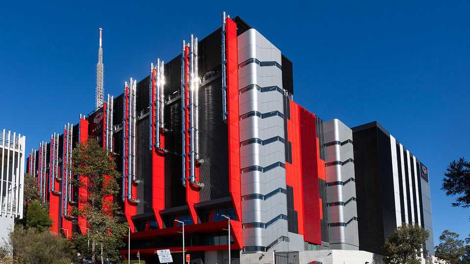
在公众对美国数据中心投资的不满情绪日益高涨以及面临竞争压力以扩大计算能力的背景下，AI领域的高管们开始将目光投向其他地方。9月16日有报道称，Anthropic已签署协议，租用澳大利亚东北部一座2.16吉瓦的设施，与全球最大的设施相当。澳大利亚成为数据中心建设热潮的热门地点，部分原因显而易见。澳大利亚阳光充足、空间广阔，据该国科学机构称，是全球可再生能源生产成本最低的国家之一。如果设施能够自发电，利用太阳能和风能，那么芯片训练和运行AI模型所消耗的大量电力就不再是大问题。此外，发出奇怪噪音的大型机房也可以远离居民区。其他动机则相对不那么直观。■
印度是Anthropic公司按使用量计算的第二大市场，新加坡和韩国（连同澳大利亚）在人工智能采用率方面表现突出。但美国企业倾向于避免在南海铺设昂贵的海底互联网电缆，因为这些电缆在涉及中国的潜在冲突中可能面临被破坏的风险。因此，大多数从美国通往亚洲的新电缆首先会经过澳大利亚，这使其成为服务于亚洲的计算中心的理想之地。澳大利亚作为“幸运的国家”，与美国关系友好且享有法治，这为其增添了显著优势。AI实验室担心其模型参数可能被对手窃取。澳大利亚是五眼联盟（Five Eyes alliance）的成员，该联盟由英语国家的情报机构组成（见国际版）。其网络安全部门习惯于保护敏感的美国数据。■
澳大利亚执行美国出口管制措施，限制受追捧的英伟达芯片被转移至竞争对手国家，尤其是中国。澳大利亚在提出这一主张时设定了若干“基本规则”，负责人工智能事务的部长安德鲁·查尔顿（Andrew Charlton）表示。政府希望避免可能引发的民粹主义反弹，因此计划为新建数据中心设定一系列基础标准：数据中心必须产生比从电网获取的电力更多的电力、承担电网接入费用、远离居民区和学校，并尽量减少用水量。查尔顿称，这些标准“严格但符合企业自身的长期利益”。政府还希望确保数据中心运营收入不仅流向硅谷。■
与铁矿开采不同，数据中心在建设完成后几乎不创造就业机会，因此不太可能成为税收的重要来源。查尔顿先生希望人工智能实验室为澳大利亚企业及研究人员预留部分计算资源，但目前这种产业跃升的尝试仍被定位为“期望”而非强制要求。为确保计划中的投资确实到位，澳大利亚需迅速厘清其版权法如何限制人工智能在专有信息上的训练。堪培拉官员希望澳大利亚企业和创意人士因数据获得报酬。若人工智能实验室同意支付，这可能在美国给他们带来法律麻烦，因为他们在当地曾自由抓取书籍和大量互联网内容。其他有吸引力的目的地也在争夺美国的计算资源，包括加拿大和阿联酋。■
若澳大利亚过于强调指导性，可能触霉头。■ 如需独家关注亚洲政治、经济与安全动态，请订阅我们的周度专属简报《Asia Bulletin》。■
§012 斯里兰卡仍需面对复活节爆炸案的余波原题：Sri Lanka still has to reckon with its Easter bombings · 板块：Asia · 栏目：亚洲
亚洲
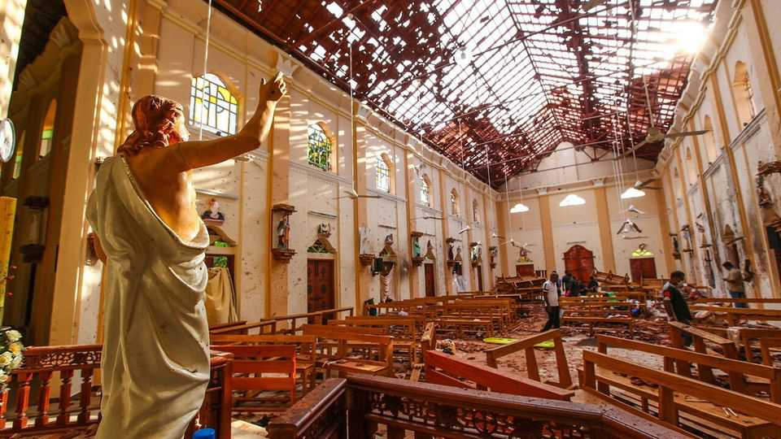
正义的齿轮转动缓慢。但9月22日，距离2019年复活节星期日自杀式爆炸袭击——袭击教堂和豪华酒店造成269人死亡——已过去七年多，斯里兰卡法院最终判处15人监禁200至260年不等，另有9人被宣判无罪。三位法官将长达2000页的判决书浓缩为庭审现场的简要陈述，军警则在场外巡逻。然而，这一判决并未让天主教会、受害者家属及幸存者满意，他们表示，直至“大脑”（斯里兰卡语“maha molakaru”）被绳之以法，斗争才告结束。
遇难者中有171名天主教徒。天主教神父兼发言人朱迪·克里尚塔·费尔南多（Jude Krishantha Fernando）坚称教会“势必”会持续施压。受伊斯兰国（ISIS）煽动的三座教堂和三家酒店袭击案，系由本土组织“民族团结阵线”（National Thowheed Jamath）成员实施。自杀式炸弹袭击的指挥者是来自斯里兰卡东部的传教士扎哈兰·哈希姆（Zahran Hashim），他在科伦坡的香格里拉酒店引爆了爆炸物。在该国最大规模的刑事起诉案中，检方于2021年10月对涉案人员，包括炸弹袭击的所谓同谋者，提起23,270项指控。科伦坡总主教马尔科姆·兰吉特（Malcolm Ranjith）多次呼吁加快行动。
2025年4月，即爆炸事件六周年之际，他表示，“政治阻碍”和“系统性破坏”正在阻止调查“得出逻辑结论”——尤其在2019年11月总统选举后更是如此。那次选举让僧伽罗民族主义者戈塔巴雅·拉贾帕克萨（Gotabaya Rajapaksa）以压倒性优势上台。2009年，他作为国防部长曾领导军队击败斯里兰卡的泰米尔猛虎组织。拉贾帕克萨在爆炸后数周便宣布参选，承诺提供“安全”并“根除恐怖主义”。他同时煽动了对政府未能应对印度情报警告的愤怒。由马特里普拉·西里塞纳（Maithripala Sirisena）领导的失能联合政府的这些失败已由独立机构另行裁定。■
2023年，最高法院裁定高级官员确实未能对警告采取行动，并下令五人合计向受害者基金支付3.1亿斯里兰卡卢比（约合94.3万美元）。其中，席里森纳个人被追缴1亿卢比。2026年7月，科伦坡法院判处时任国防秘书赫马西里·费尔南多及时任警察局长普吉特·贾亚辛德拉，因未能对警告采取行动而涉及854项谋杀和未遂谋杀指控，判处死刑。费尔南多神父称判决“尚可接受”，但“还不够”。教会希望对斯里兰卡举报人汉泽尔·阿扎德·穆拉纳向英国第四频道（Channel 4）的指控采取行动，称其在2018年安排哈希姆与前军情局长苏雷什·萨利亚会面，萨利亚 allegedly 表示制造不安局势有助于拉贾帕克萨赢得总统选举。■
萨利耶否认参加此次会议或任何参与袭击的行动。拉贾帕克萨于2022年在经济危机期间辞职。6月，一名法官在调查人员表示对其直接或间接参与袭击，或事先知情的情况下，对其实施了旅行禁令。他否认有任何不当行为，目前尚未提起指控。费尔南多表示，只有当那些“掌握实权、真正的罪魁祸首、幕后主使”被带入法庭接受审判，教会才会满意——但他并未点名。■ 要获取亚洲政治、经济与安全领域的独家报道，请订阅我们的周度会员专属简报Asia Bulletin。
§013 纳吉布·拉扎克部分赦免案折射出马来西亚的困境原题：What a partial pardon for Najib Razak says about Malaysia · 板块：Asia · 栏目：亚洲
2015年纳吉布·拉扎克担任马来西亚总理时处境艰难，他深知能依靠几位老友。"如果他需要建议，我作为朋友在此待命"，柔佛州苏丹易卜拉欣对记者如是说。即便在纳吉布·拉扎克从1MDB主权财富基金贪腐案中涉案金额逐渐明朗之际，苏丹与总理仍保持密切关系。9月18日，苏丹易卜拉欣再次挺身而出，以重大方式支持纳吉布·拉扎克。他同意让纳吉布·拉扎克在本国服满剩余两年的六年监禁刑期。■
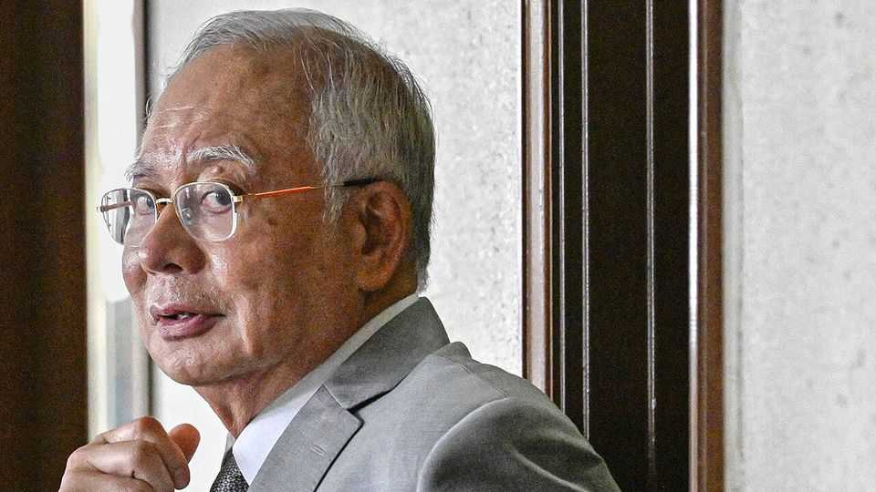
这给现任总理安瓦尔·依布拉欣政府带来了困扰。安瓦尔表示，他并未建议现任马来西亚国王苏丹依布拉欣（此前为国家奇特的轮替君主制下的苏丹）赦免纳吉布。但他也未明确表示反对这一做法。安瓦尔模糊的回应很可能经过精心措辞，以维系他庞大的联盟。联盟成员中，曾由纳吉布主导的国民阵线（Barisan Nasional）已将为纳吉布争取赦免列为优先事项：其高层多次公开推动此事，并私下向国王提出请求。另一方面，民主行动党（DAP）则高声要求纳吉布为其腐败行为付出代价，该党的领导人因不满这一决定已辞去内阁职务。■
但民主行动党（DAP）尚未撤回对政府的支持，这将使该党在议会中仅保有微弱多数。安瓦尔（Anwar）所属的人民公正党（People’s Justice Party）同样迫切希望避免在预定的2028年2月大选前举行提前选举，尽管多数观察家预计该联盟难以撑到那时。今年州选中，该党的选情惨败，而由国民阵线（Barisan）与伊斯兰党（PAS）联合组成的联盟却大获全胜。分析人士预计，若今日举行大选，国民阵线与伊斯兰党仍可能获胜。这已促使国民阵线的一些重要成员呼吁提前举行选举。安瓦尔似乎已陷入困境，若不通过宽大处理纳吉布（Najib）来安抚国民阵线，提前选举可能导致国民阵线获胜。■
它可能进一步推动对纳吉布更广泛的赦免，后者正就另一桩案件中被判15年监禁的判决提出上诉。但被视作与前总理达成私下交易，恐怕不会改善那些承诺打击腐败的政党的前景。马来西亚政治专家布里奇特·韦尔什（Bridget Welsh）则持乐观态度。她说，很少有人预料到当纳吉布被罢免时，他还能入狱。他已服刑四年，这表明马来西亚已发生改变。但其他人担心国民阵线（Barisan）与伊斯兰党（PAS）的联盟意味着贪腐将很快伴随教派主义而来。纳吉布尚未出狱；国王主持的赦免委员会坚持他须归还1200万美元，即他贪污的近5.4亿美元中的一小部分，才能获得释放。■
纳吉布表示，他无法支付，因为他的银行账户已被冻结。国民阵线（Barisan）竟毫无羞耻地向其长期受害的马来西亚人民求助，呼吁大家捐款。■ 如需独家关注亚洲政治、经济与安全动态，请订阅我们的每周订阅制简报Asia Bulletin。
§014 为何日本儿童相对贫困率居高不下原题：Why relative poverty is stubbornly high for Japanese children · 板块：Asia · 栏目：亚洲
正午前，黏腻的夏日高温中，孩子们缓缓走进日本中部宫岛市的一座图书馆。他们交出餐券，领取便当盒。一些孩子在凉爽的环境中与朋友一起用餐，另一些则将便当盒带回家。由于日本学校暑假停课，该市每天在11处公共设施提供数百份餐食。但这份宁静的场景掩盖了更严峻的现实。在漫长的暑假期间，没有学校午餐或空调教室，许多孩子将难以正常饮食或躲避酷热。日本常被视为一个富裕社会。
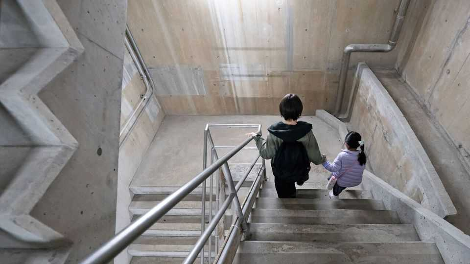
日本部分地区却出人意料地贫富差距悬殊。政府数据显示，2024年有11%的儿童生活在相对贫困中，意味着其家庭可支配收入（按家庭规模调整后）不足全国中位数2.77百万日元（约合17,500美元）的一半。这一“相对贫困”率自2012年峰值16%以来有所下降，但随着日本摆脱数十年通缩，物价上涨正对贫困家庭造成沉重打击。自2020年以来，食品价格已上涨约30%。乌斯诺瓦（Usnova）非营利组织的奥川孝治表示，贫困问题“从未像现在这样严峻”。问题的根源很大程度上在于单亲母亲所面临的特殊困境。日本单亲家庭的相对贫困率在经合组织（OECD）主要富裕国家中居高不下（见图表），达44.7%。尽管近90%的单亲母亲都在工作。■
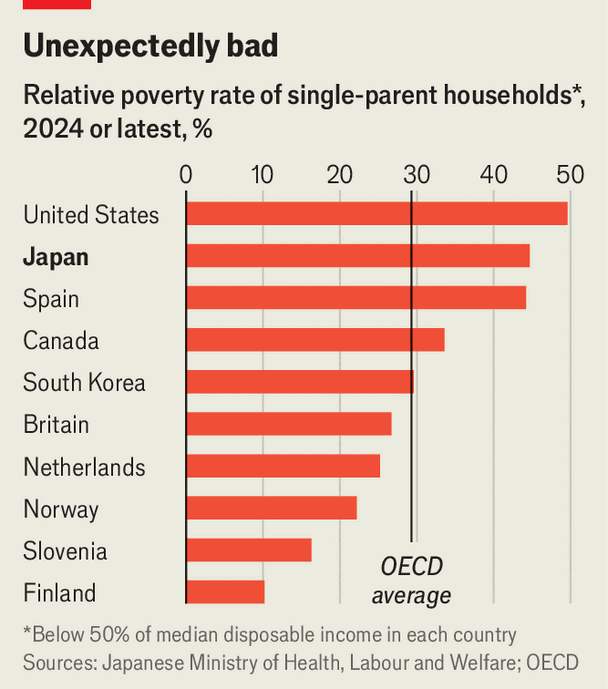
日本也是发达国家中性别薪酬差距最显著的国家之一。女性多集中在该国双轨制劳动力市场的低端岗位，从事收入低且缺乏保障的“非正规工作”。更令人担忧的是，前夫的经济支持微乎其微。官方调查显示，约九成离婚案中母亲获得子女抚养权，但约70%的母亲未获得子女抚养费。2023年4月，日本政府修订家庭法引入共同抚养制度，使日本成为七国集团（G7）中最后一个推行此制度的国家。官员希望此举能促使仍参与子女生活的父亲更愿意支付抚养费。近期经济趋势正加剧这一问题。据日本“救儿童”组织（Save the Children Japan）的一项调查，近90%申请其食品援助的受访者将近期通胀归咎于经济形势恶化。■
与此同时，日本民众每人每日食品支出平均降至500元以下——与绝对贫困群体的水平相当，东京原子大学的甘泽子（Gan Sakiko）指出。日本的贫困问题往往不显山露水。据英国慈善机构Greater Change统计，日本是全球无家可归率最低的国家。然而，对不平等现象的担忧却在上升。“父辈机缘”（oya-gacha）一词已进入日常用语，该词由日语“父母”与“胶囊玩具机”组合而成，意指子女无法选择父母，其未来很大程度取决于运气。非营利组织Florence的负责人小沼香津（Honma Kanazu）表示，尽管存在对困难家庭的支持，但援助措施严重不足。单亲家庭若收入超过不合理低限，将无法获得补助。■
这可能使他们不愿加班。将更多援助定向投向贫困家庭，是更有效的公共资金使用方式，但政治上却颇为棘手。尽管生活成本已成为突出的政治议题，但辩论往往聚焦于被挤压的中产阶级。据一项估算，仅有约20%符合福利资格的家庭实际使用了福利；污名化使许多人不愿申请，即便申请成功，也常因缺乏同情心的官员而被拒。在三岛（Miyoshi），食物分发充分考虑了这种敏感性。便当（bento）对所有儿童开放，多数需付费，但低收入家庭儿童可免费领取。市长大场笃（Oyama Tasuku）解释称，付款通过线上预先结算，因此无法辨识哪些家庭属于低收入群体。这种灵活性有助于家庭在接受支持时避免污名化。■
这也揭示了日本贫困的一个更广泛特征：许多贫困现象在公众视野之外悄然持续。■ 如需独家报道亚洲政治、经济与安全动态，请订阅我们的周度专属简报Asia Bulletin。
§015 中国共产党面临代际更替 中国 红星升起原题：China’s Communist Party faces a generational shift · 板块：China · 栏目：中国
明年，中国政治日历上最重要的定期活动——五年一次的中国共产党全国代表大会将确认谁将领导国家至2032年。习近平总书记的最高领导地位几乎没有疑问。但在他之下数百个高级职位将面临重新分配。未来数月内将举行一系列秘密会议，决定谁将获得这些职位。其中一项活动的日期刚刚公布：10月26日至29日，约370名中央委员会成员将齐聚一堂。官方称他们将讨论“全面从严治党的自我管理”，实质上意味着服从习近平总书记。 ■
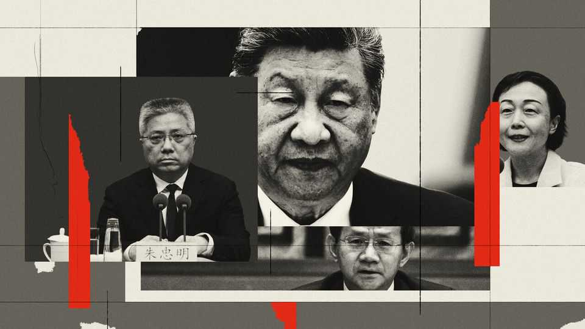
私下里，他们正在思考中国政治中的代际更替。中国地方省份的新生代政界精英正跃跃欲试，一些人正逐步进入北京的高层职位。他们被称为中共第七代领导人，与习近平相比，是截然不同的类型。他们出生于20世纪60年代末至70年代，是少数甚至没有毛泽东时代记忆的第一代人。他们的成长岁月在80年代，那时中国正向世界敞开大门，探索自由思想并尝试资本主义。习近平对那段激情燃烧的岁月毫无眷恋。但习近平已73岁，其亲信也大多年长不了多少。他们可能不得不更多地依靠第七代领导人来填补重要职位。其中一人最终可能成为习近平的接班人。在中国政治中，代际划分体系颇为复杂。作为新中国缔造者，毛泽东领导了第一代领导人。■
务实改革者邓小平被描述为第二代领导人，尽管他并未立即接替毛泽东，且同属一批革命元老。2012年习近平掌权时，各代人开始更多地以高级官员的年龄层来划分。习近平属于所谓第五代，主要出生于1950年代。按邓小平时期的惯例，他应在2012年后十年退休，让位给1960年代出生的第六代官员。但他却打破了任期限制，保留了总统职位（习近平同时担任更重要的中共中央总书记和军队领导人职务，这些职位无任期限制，但因他同时担任三职，修改总统任期规定成为必要）。
与此同时，他的反腐运动对第六代领导层造成重创，瓦解了其权势网络。那些曾被视为接班人的人或被逮捕，或被边缘化。过去五年间，中央委员会投票成员中约有五分之一被清除。在第六代领导层的废墟中，第七代正悄然崛起。即便习近平在2032年党的二十大上仍居于领导地位，身边环绕着一批资深老将，但年轻政治家们仍将发挥重要作用。8月，一位可能的第七代明星人物、54岁的朱忠明（Zhu Zhongming）被任命为上海代市长引发关注。若他日后成为上海市委负责人，将极有可能进入中共中央政治局。■
值得关注的还有刘捷（Liu Jie），56岁，现任浙江省省长（习近平曾担任此职），以及吕东（A Dong），55岁，共青团中央书记（该职位的两位前任后来成为中共中央总书记）。通常情况下，高级官员在党代会时若年满65岁将退休，政治局委员则在68岁退休（2022年习近平成为罕见例外，中国最高军衔官员张又侠（Zhang Youxia），76岁，因“严重违反政治纪律”于9月21日被开除党籍和军籍）。这意味着明年现任中央委员会成员中三分之二将卸任，第七代官员比例将从8%升至40%以上。关于高级党成员的公开信息极少。■
第七代成员在多个方面尤为突出。与第五、第六代成员不同，他们并未在1966-1976年的文化大革命期间遭受大规模教育中断。许多第七代成员毕业于顶尖学府。李成（现为香港大学教授）的一项研究发现，最资深的百余名第七代官员中，超过半数拥有博士学位。三分之一曾学习工程专业；金融与经济学也是热门学科。部分第七代成员曾在大陆以外地区长期生活。■
尹勇，57岁，现任北京市市长，拥有哈佛大学硕士学位；郭宁宁，56岁，是福建省东部省份的冉冉升起的新星（对于高级官员而言，她作为女性极为罕见），曾在香港和新加坡的国有银行工作多年。（习近平首次且持续时间最长的出国访问是在1985年作为农业代表团成员赴美国爱荷华州的两周行程。）与他们的前辈不同，后者通常将职业生涯大部投入党、政和军职，这些年轻干部更可能担任过国有企业的商业领袖。崛起的官员与中国的革命历史联系明显减弱。习近平与毛泽东时代有着深厚的联系：他的父亲曾作为游击领导人与毛泽东并肩作战，后来遭到清洗。
他本人在毛泽东时代曾被下放到一个贫困村庄度过七年青春岁月。但他对这段经历持肯定态度，认为它有助于与普通民众建立联系；他集中权力、强调意识形态的做法带有毛泽东主义色彩。上世纪80年代，当第七代人正值成年时，中国民众普遍庆幸毛泽东时代已结束。得益于审查制度的放宽，这十年成为自1950年代以来思想最为自由的时期，甚至国营电视台也播放了带有颠覆性的节目。这一开放窗口在1989年军队血腥镇压天安门广场示威活动后戛然而止。第七代人中许多人年龄与当年参与民主运动的示威者相仿。这是否意味着隐藏的自由派正在党内晋升？■
参与动乱的党员很快被清除（尽管有些人撒谎保留了党籍）。习近平领导下的思想审查将揪出其他潜在分子。斯坦福大学的吴国光指出，干部在掌握实权前已“深受意识形态熏陶并接受系统训练”。不过，第七代官员早期接触开放思维的背景不可忽视——毕竟后续世代接触的更少。中国和英国研究人员去年的一项调查显示，1990年代出生的中国人（或许即将成为第九代）比父辈更不支持民主价值观。第七代官员最终掌权的可能性相当大。北京权力顶端的中央政治局常委目前有六名成员，加上习近平共计七人。■
除一人外，其余人均已达到退休年龄，可参加明年晚些时候召开的第21届党代会。理论上，第七代官员可跳过某些层级直接参与。但习近平不太可能立即提拔这样一位年轻官员：此人会被视为接班人，而习近平似乎并不急于选定继任者（更不用说女性：从未有女性担任过中央政治局常委）。不过，到第22届党代会时情况可能发生变化，届时习近平将年满79岁。届时第七代官员将年近50至60岁，仍属年轻一代，前美国中央情报局分析师乔纳森·辛兹认为，这样的年龄仍足以成为可信的接班人。“如果习近平届时已年过八旬，将继承棒子交给70岁的人是否合理？”但习近平将面临难题：他可能不得不选择一位与自己交集较少、难以建立信任的人。
这可能引发动荡。“习近平选定的第一人不会是最后一位，”茨真（毛泽东和邓小平都曾经历多位接班人）认为。“我预计中国政坛将迎来一段相当动荡的时期。” ■ 订阅者可注册我们的新刊《鼓楼》，了解世界如何看待中国，以及中国如何看待世界。
§016 中国学生在全球学业测试中名列前茅原题：China’s kids rank near the top in global school tests · 板块：China · 栏目：中国
许多家长都听说过PISA（国际学生评估项目），该项目测试15岁学生在数学、阅读和科学方面的表现。本月公布的2025年结果让许多国家感到失望。但参加测试的12,385名中国大陆学生让家长感到自豪。他们在数学和科学科目中得分高于所有其他参测队伍，在阅读科目中仅排在新加坡学生之后。真正了解该计划的人还熟悉另一个四字母缩写：BSJZ。这些难以发音的缩写代表北京、上海、江苏和浙江，这四个地区是唯一参与测试的中国大陆省份。 ■
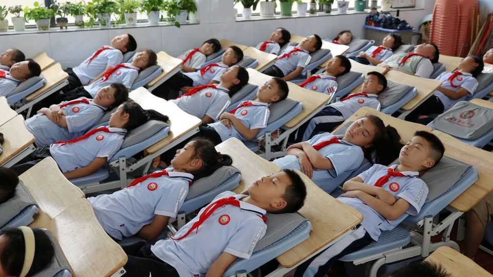
这四个地区（两个超大城市和两个东部省份）总人口接近2亿。但它们不幸无法代表中国整体情况。学术高中和大学的入学率超过全国平均水平，人均可支配收入年均约70,000元（9,700美元），比中国大陆平均水平高出60%。2018年世界银行的研究人员试图把握整体图景。中国各地在不同时期参与了PISA测试，因此覆盖了不同发展阶段。这使专家得以计算出可支配收入与测试成绩之间的关联。由于中国全国收入数据已知，研究人员可据此推断全国PISA成绩。《经济学人》更新了这一方法，加入了后续评估的数据。■
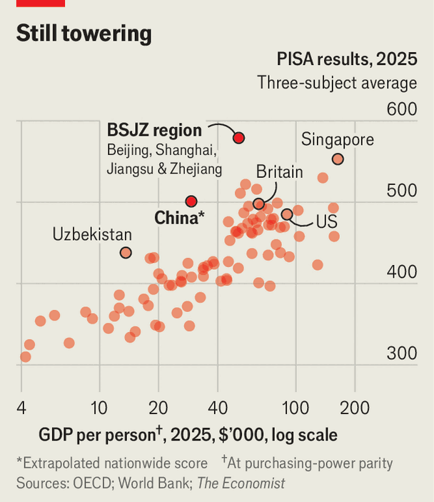
根据收入与成绩的直接趋势线显示，即使所有省份都参与，中国仍可能取得高分。其外推得出的数学成绩为579分，仍属世界领先。但需谨慎看待。2025年大多数国家的实际表现低于预期，可能由于新冠疫情的持续影响或技术对学习习惯的颠覆性冲击。就连北京、上海、江苏和浙江的学生，其阅读成绩也低于2018年水平。其他学科的成绩提升幅度也远低于预期。这表明趋势出现了某种断裂。最简单的调整方式是将2025年前的趋势线向下调整，使其与参与的四个富裕地区实际2025年结果一致。按此标准，中国整体数学成绩为536分。
尽管低于北京某中学的实际得分612分，该国仍会位列全球第四。中国在三项科目中的平均分（501分）将排在第七位，远高于其经济水平所预期的排名（见图表）。中国并非唯一仅部分学生参与PISA测试的国家。伊拉克仅由库尔德地区代表，塔吉克斯坦仅由首都杜尚别代表。但若我们的计算大致准确，中国应欢迎全国范围的参与。让中国以中国整体形象呈现，让北京某中学淡出PISA历史，正如它难以记住也难以念出的名字一样。■ 订阅者可注册我们的新周刊《鼓楼》，了解世界如何看待中国，以及中国如何看待世界。
§017 中国是否在放松部分网络审查原题：Is China easing some online censorship? · 板块：China · 栏目：中国
“将不同声音视为洪水和恐怖野兽是对治理本质的根本误解”，这在民主国家的自由派报纸中会是再寻常不过的说教。而这句话出自中国共产党主要理论刊物《求是》杂志，于9月发表，显得尤为惊人的突破。其他党媒也发出类似开明的声音。“无论将精力用于针对评论者和封锁言论渠道，几乎无一例外地导致信任危机的加剧”，7月《中国青年报》如此表述，该报由共青团中央主办。
《中国评论》——由国家通讯社新华社运营的杂志——当月也发表评论称，一些官员“只求公众讨论归于沉寂，而非解决问题，习惯性地删除帖子而非解决实际问题”。中国是否正在经历改革开放后某段时期内，体制内自由派与保守派之间的一次较量？并非如此。自2012年习近平掌权以来，自由派人士几乎已被噤声。而审查制度近期则更加频繁地致力于彻底清理网络上对官僚体系的抱怨。今年7月，一则普通市民与官员因停车位纠纷引发的事件在网络上引发热议，审查机构随即删除了有关官员可能操纵调查结果的讨论。警方也始终保持高度警惕。
敢在网络上发帖称上月尼泊尔与中国边境山洪灾害的死亡人数中国比官方报道的更高吗？结果会被监禁七天。一个不容异见的体制正展现出一贯的作风。但中国领导人有时也会担心审查制度可能过度。他们指出，过于严格的日常抱怨限制，会使政府更难获取改进行为所需的反馈，从而在街头抗议爆发前平息公众不满。在中国，如何把握审查的尺度是一门艺术，官员们常常难以找到让上级满意的平衡点。最近几个月，多家官方媒体的文章暗示，许多人尚未掌握正确的尺度。
官员们认为习近平希望他们在决定是否审查时持谨慎态度是正确的。“有害的言论可能成为公众的麻醉剂、社会分裂者、无形的杀手，甚至引发动荡的催化剂”，他十年前曾对媒体高管如此表示。但习近平如今或许希望进行适度调整。媒体所举的过度审查案例暗示，他的担忧主要涉及删除那些损害地方官员形象的评论。没有任何迹象表明他希望鼓励对党的批评，更不用说对他本人的批评了。《中国评论》引用了多个官员过度敏感的例子，例如5月某人因在地方旅游局账号上投诉音乐会座椅清洁问题而被封锁社交媒体账号。■
另一起事件涉及一名去年在网上发布视频的人，视频中一名女子试图通过出示丈夫的执法证件来主张在狭窄道路上的通行权。警方施压要求该市民删除视频，他最终删除了视频，但随后重新发布了一版经过编辑的视频，获得了1000万次观看。习近平先生对这类故事恐怕不会感到意外。地方政府常常不遗余力地防止上级了解他们的失误。■
在习近平执政期间，许多部门都将实现“零舆情事件”作为考核官员是否胜任晋升的重要标准。“对‘零舆情’的执念催生了荒谬且倒置的公众投诉应对方式，导致多起深层次治理问题，造成严重危害”，7月《人民日报》网站的一篇文章怒斥道。然而地方官员仍会保持谨慎。■ 订阅我们的新周刊《鼓楼》，了解世界如何看待中国——以及中国如何看待世界。
§018 中国原题：What Mao can teach China about managing America · 板块：China · 栏目：中国
贸易战、科技战、新冷战——这些简短描述中美关系紧张的术语都透着不安。但两国今年早些时候在中国推动下达成的共识却显得不同：它们现在正式处于“建设性战略稳定关系”中。若这一表述未能令你心跳加速，其冗长的措辞已成功：它旨在表明以冷静态度管理超级大国紧张关系的意图。更坦率、更令人担忧的是，如今许多中国学者如何描述中美关系。
他们不再称其为“战略稳定”，而是称之为“战略僵局”——这个词在中国带有强烈暗示性，暗示的不是外交博弈，而是一场争夺主导权的较量。近期使用这一表述的包括中国内阁顾问、国家安全部研究人员以及顶尖高校学者。对许多中国人而言，这个词并不陌生，它源自毛泽东1938年在偏远的共产党根据地延安所作的《论持久战》演讲。毛泽东九十年前的思考不应被过度强调，但持久战框架仍能提供有价值的视角，揭示中国如何看待与美国的较量，并为局势发展提供线索。当《经济学人》付印时，习近平即将赴华盛顿与特朗普举行会谈，这位昔日的独裁者在游击战时期的言论再度引发关注。■
毛泽东认为，在一场长期对抗技术优势对手的战争中，第一阶段革命者必须转入防御。第二阶段是战略僵局：对手因过度扩张无法继续推进，而革命力量则逐步组织完善。第三阶段则是反攻阶段，曾经弱势的革命者最终击溃曾经强大的敌人。因此，将中美两国置于战略僵局的判断具有重大意义。无人质疑两国中哪一方是疲惫的既得利益者，哪一方是充满活力的革命力量。2018年特朗普政府对中国发起贸易战，标志着这一阶段的开始。在特朗普任期内的其余时间，中国处于被动地位。尽管并非完全沉默，中国仍通过自身关税手段对美国进行反击。■
但最终达成的协议却是一个失衡的安排，若完全落实，将导致中国购买更多美国商品并更广泛地向美国投资者开放。从毛泽东主义的角度来看，这项协议展现了“撤退的勇气”，这在持久战的第一阶段往往必不可少。撤退的目的并非认输，而是保存资源以备反击。这正是中国在整个拜登总统任期内采取的策略。中国官员深知美国在先进半导体领域拥有巨大筹码，因此加倍努力培育本土替代方案，无论成本多高。同时，他们也强化了反击手段，建立更严格的出口管制体系，并加强对开采和加工关键矿产的中国企业的控制。■
当特朗普重返白宫并提高关税时，他的官员们对中国的强烈反制感到惊讶。中国通过限制稀土等矿物出口，威胁要让美国工业的大部分陷入停滞。如今人们普遍认为，超级大国在互相伤害的能力上已大致势均力敌。美国拥有芯片，中国拥有稀土。分析人士称之为“相互确保破坏”或“脆弱平衡”，仿佛两国在经济层面基本势均力敌。所谓“战略僵局”的说法触及了这种平衡更深层的含义：中国能走到这一步本身已是进步。一个显而易见的问题是，习近平是否计划进入“持久战”的第三阶段——全面反攻。■
去年中美贸易摩擦最为激烈时，官方媒体呼吁公众重新审视毛泽东的讲话，以增强对中国经济韧性的信心。然而，这种做法与这位伟大舵手的分析相似之处仅限于表面。大多数中国学者认为，无法在经济领域取得决定性且持久的胜利。维持战略僵局似乎更现实。复旦大学黄仁伟表示，这种僵局或许能持续30年。但问题在于，僵局可能并不持久。两国都希望打破僵局，正在寻求新的优势获取方式，并警惕可能限制自身发展的风险。对人工智能领域被永久边缘化的担忧，是导致中国不愿接受美国提出的AI安全制度的重要原因。■
直到中国的AI模型达到美国同等水平——即双方在AI领域形成僵局——中国似乎不愿放缓其AI实验室的节奏。这种僵局的脆弱性也解释了为何中国持续限制向美国及其盟友（尤其是日本）出口稀土。如果中美两国真正拥有建设性关系，如他们所声称的那样，中国本可以为全球企业寻求稀土建立透明高效的许可制度。然而两国关系却因互不信任而蒙上阴影，中国深知若特朗普再度采取更激进的立场，限制稀土供应是最快能对其施加惩戒的方式。更令中国沮丧的是，毛泽东时期僵局阶段的另一特征也适用于当下。他曾警告称，这将是中国“极其痛苦的时期”，期间“悲观情绪将加剧”。■
今日经济形势的回响清晰可见。对技术自主的执着追求帮助中国抵御了美国压力，但中国民众为此付出了代价，收入增长放缓，因为国家将资金投入工业产能而非社会福利。这宛如一个处于长期战争国家的经济。■
§019 唐纳德·特朗普称中国正在开放，美国企业界人士则持不同意见原题：Donald Trump says China is opening up. American bosses disagree · 板块：China · 栏目：中国
| 仍受阻
唐纳德·特朗普称中国正在开放，美国企业界人士则持不同意见。芯片制造商的创纪录销售掩盖了黯淡的前景。美国企业本应庆祝，特朗普声称中国即将向他们敞开市场大门。总统5月在北京与习近平主席的会晤释放出这一承诺：中国市场正等待“纸面化”（papered）。特朗普在《经济学人》出版后于9月24日再次与习近平在华盛顿会面时，显然希望实现这一目标。或许还有更多。在峰会前的会谈中，官员们正式成立了由领导人5月提议的“贸易委员会”（board of trade），旨在识别可能的关税削减方案。
■
习近平主席抵达后不久，美国财政部长斯科特·贝森特表示，中美两国将延长其“贸易休战”协议，该协议原定于11月到期，现将延长至1月。这并非空谈。作为美国最大银行之一的花旗集团（Citigroup）可能很快在中国开设全资证券公司（这得益于简·弗雷泽女男爵，花旗集团首席执行官，随特朗普总统一同前往北京的高管团队）。9月10日，上海美国商会发布的调查显示，美国企业对中国市场的前景自2021年以来最为乐观，盈利能力也有所回升。去年，包括英伟达（Nvidia）和高通（Qualcomm）在内的几家大型芯片制造商推动美国企业在华营收创历史新高。今年，高端时尚品牌拉夫·劳伦（Ralph Lauren）和沃尔玛旗下会员制零售商山姆会员商店（Sam’s Club）也跻身获利企业之列。■
对美国企业主而言，特朗普与习近平之间的友好表态缓解了对再次爆发全面贸易战的担忧。自5月以来，中国已按计划推进从美国采购大豆的承诺。若能获得更高收入，当然是好事。然而，多数在沪京两地的美国企业高管仍难言乐观。上海工商联报告的改善信心，是在连续四年创纪录低点后的反弹。商业信心低迷的一个原因是，尽管领导层笑容满面，但政治氛围依然阴霾密布。双方仍持续发出威胁。特朗普最近提议对中国商品加征7.5%关税，叠加已有的20%以上关税（中国8月对全球出口同比增长25%）。美国官员被指正在制定新的限制措施，限制采购中国科技产品。
同时，一些中国稀土供应商在获得官方许可的情况下，却神秘地停止向美国客户供货。中国官员也拒绝了美国在海湾战争期间孤立伊朗的尝试。一位在北京的美国企业人士表示，在解决这些问题时，“消极性占上风”，“但也许这就是‘建设性战略稳定’所呈现的样子”。双方官员自五月份会议以来一直用这一表述来形容两国关系。第二个问题是，即使能进入中国市场，其收益可能也有限。谷歌、脸书、Netflix等公司多年来一直在尝试进入中国互联网经济。■
在中方看来，网络搜索、社交媒体和视频流媒体等行业已对遵守中国法律的企业开放——这些法律要求雇佣审查员并可无理由删除或冻结账户。随着中国加强言论自由的管控，短期内出现重大变革的可能性似乎微乎其微。在其他潜在市场，美国企业则显得后知后觉。兰德尔·施里弗（Randall Schriver）指出，美国-中国经济安全审查委员会（US-China Economic and Security Review Commission）主席认为，中国于2001年加入世界贸易组织（WTO）前，中央政府本可为美国企业清除大量障碍，该委员会是国会设立的两党制机构。此后，美国的影响力逐渐减弱。例如，在金融服务领域，中国本应根据加入WTO的承诺允许外资企业拓展业务。■
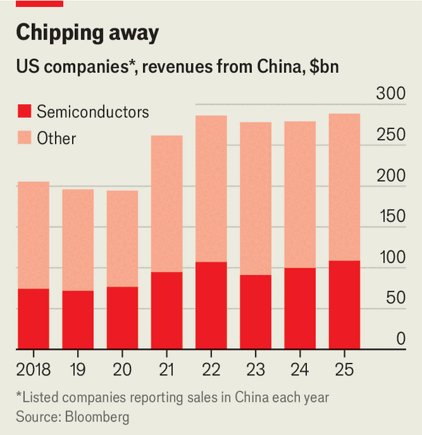
但地方政府对发放牌照持观望态度，迟迟未向Visa和MasterCard等西方主要支付处理公司发放许可。中国支付市场则由本土科技巨头如蚂蚁集团和腾讯主导。施里弗先生指出，如今任何美国总统都难以应对这种本土竞争。特朗普先生另一个难以解决的问题是持续低迷的新投资回报率。少数企业的营收记录并不能反映全貌：大多数美国企业在华销售额自2023年以来已停滞（见图表）。对部分企业而言，下滑甚至更早开始。苹果公司去年在中国的销售额是所有美国企业中最高的，但比2022年少了约100亿美元。过去四年，饮料零食制造商百事公司（PepsiCo）的销售额先是持平后又下滑。一些企业正选择撤退。■
由于回报率低迷，企业决定停止在中国投资并缩减业务规模。这不仅反映出激烈的本地竞争，也体现了中国经济的疲软。在资金趋紧的背景下，消费者日益节俭。曾被视为中国消费经济未来市场的领域，如高端医疗服务，如今前景黯淡，尽管这些市场正向外资企业开放。麦肯锡咨询公司本地负责人乔·奈吉表示，美国医疗集团现在质疑为何要将稀缺资源如医生部署在中国，而其他地区的回报率更高。半导体行业则是最亮眼的领域。在公布全年销售额的美国企业中，芯片制造商贡献了超过三分之一的总营收。其营收在2025年增长9%，成为美国企业在华业务的基石。■
但这也意味着该市场面临最大风险。高性能芯片销售的快速上升反映了中国人工智能产业的崛起——以及中国企业对供应链可能被切断的合理担忧：特朗普和拜登都曾禁止向中国出口高性能芯片及其他设备。允许获取此类芯片似乎难以与特朗普坚持与中国争夺人工智能领先地位的立场相协调。如果美国对出售相关技术的阻力是唯一障碍，或许可通过特朗普与习近平的会谈解决，因为特朗普急于通过宣布大额交易来减少中美贸易逆差。但鉴于习近平希望将最先进的美国零部件排除在中国人工智能系统之外，其产业政策如今正围绕“芯片自给自足”概念展开。■
这一目标仍遥不可及，但实现它的一条路径是阻止中国公司购买英伟达芯片及其他美国零部件，同时推动对国产设备的投入。这一计划进展迅速。2020年，晶圆制造设备中仅6%可由国内供应；到今年年底，这一比例可能接近30%。华盛顿的谈判或许能为美国企业争取一些时间，但对习近平而言，自主可控最终是不可谈判的。旧金山大学前中国高管凯尔·吉布斯（Ker Gibbs）指出，特朗普所设想的开放中国或许只是更大量进口美国玉米和大豆。总统可能乐于宣布更多大额交易，如波音飞机订单——只要能帮助他宣称缩小双边贸易逆差即可。■
如果此举也能缓解关税和制裁，美国商界领袖会抓住任何可以得到的缓解措施。但人们对经济好转和销售增长的预期依然低迷。■
§020 美国原题：A contentious battle in Alaska may determine control of the Senate · 板块：United States · 栏目：美国
阿拉斯加是一个政治环境独特的州。它既小又大，人口不足74万人，却拥有超过德克萨斯州两倍的领土面积。该州政治立场保守却保持开放性。上一位赢得阿拉斯加选民支持的民主党总统候选人是林登·约翰逊（Lyndon Johnson），时间是1964年。如今，美国第49州成为少数几个可能决定民主党是否赢得参议院席位的州之一。
参议院选举在共和党现任议员丹·苏利文和前民主党众议员玛丽·佩尔托拉之间展开，结果难料，且可能变得更加激烈。9月23日，《纽约时报》发表调查报道，指控佩尔托拉存在管理混乱及对工作人员的不当对待。其竞选团队否认存在系统性虐待行为。这些指控对一位以个人魅力和亲和力吸引选民的候选人而言尤为刺耳。民主党希望阿拉斯加独特的政治文化以及唐纳德·特朗普政策对该州的深远影响能助力佩尔托拉的竞选。但佩尔托拉本人的表现仍是关键。《经济学人》的预测模型（尚未纳入《纽约时报》的报道）将其获胜概率评估为56%。■
她仍有机会参选，这提醒人们，在党派斗争激烈的年代，阿拉斯加的政治却保持着惊人的流动性。2010年，另一位共和党参议员莉莎·默克尔（Lisa Murkowski）——一位中间派人士——在初选中败给了茶党候选人，随后却赢得了近50年来首次写入选票的参议员竞选。该州议会的执政联盟是一个由民主党、共和党及无党派人士组成的“三党联合体”。阿拉斯加是唯一一个将无党派初选与排名选择投票相结合的州。“归根结底，政党其实并不扮演重要角色，”曾与佩尔托拉（Ms Peltola）在2000年代初共事的州参议院议长加里·斯蒂文斯（Gary Stevens）说道。佩尔托拉正是这种政治环境的产物。■
一位14岁便驾驶渔船的阿拉斯加原住民，她在2022年当选州级公职，击败前州长莎拉·佩林（Sarah Palin），代表阿拉斯加参选国会。彼时，佩尔托拉（Peltola）与默克沃斯基（Murmurkowski）相互支持。苏利文的竞选广告试图将佩尔托拉描绘成“下48州自由派”的傀儡，但她常与本党唱反调——2024年全国步枪协会（NRA）仍支持她。她偶尔也会与总统站队。苏利文认为，佩尔托拉与民主党参议院多数派联手，将限制阿拉斯加的租赁和钻探活动。“我的对手将与国会中的反阿拉斯加能源集团结盟，他们一贯的做法就是关闭阿拉斯加能源产业，”他在9月12日于基迪亚克岛举行的辩论中表示。■
佩尔托拉（Peltola）发布了一则亲油广告，承诺将“与唐纳德·特朗普合作，释放更多土地和开发潜力”。在其他议题上，佩尔托拉批评特朗普政策对阿拉斯加的影响，甚至直指特朗普本人。总统在2024年以13个百分点的优势赢得该州选票，因此佩尔托拉若想艰难取胜，必须争取大量特朗普支持者。尽管阿拉斯加拥有丰富的石油资源，但当地居民却深受高价燃油之苦，这推高了偏远村庄取暖、长途运输货物与人员以及当然还有捕鱼的成本。由于科迪亚克岛是重要的渔业中心，整个辩论焦点都围绕渔业议题展开。
佩尔托拉女士在演讲中表示，「燃料是所有渔民的第一大支出」。由于伊朗战争，我们不仅被排挤出石油市场，还被迫离开阿拉斯加的生活。今年夏季，阿拉斯加州对农村社区的调查显示，汽油平均价格为7.56美元，几乎是全国平均水平的两倍。阿拉斯加人还受到政府效率部拆分联邦官僚体系的影响。阿拉斯加劳工与劳动力发展部估计，该州在2025年失去了近5%的联邦雇员，这一比例高于除马里兰州和新墨西哥州以外的所有州。目前阿拉斯加的联邦雇员数量已降至过去35年来的最低水平。以捕鱼业为例，情况同样如此。■
官员和渔民依赖美国国家海洋和大气管理局（NOAA）提供的数据设定季节性捕捞配额、跟踪鱼群数量并监测天气。根据前主管迈克·利茨奥（Mike Litzow）的说法，位于科迪亚克群岛的NOAA实验室去年因裁员、买断或提前退休失去了三分之一的科学家。美国政府对联邦官僚体系的敌意，讽刺的是反而加重了该实验室的行政负担。利茨奥指出，要登上渔船进行螃蟹调查“需要经过类似12层的审批流程”。每张政府信用卡消费都需接受审查。他回忆称，曾有下属的信用卡账单包含当月15次消费记录，而相关文件多达385页。■
佩尔托拉竞选团队希望，选民对高油价或不可靠的天气数据的不满，将掩盖任何关于管理不善或冲突的报道，尽管竞选形势胶着，负面新闻仍可能产生影响。在这样一个幅员辽阔、拥有众多偏远社区的州，科迪亚克的渔民们对候选人亲自前来争取选票表示满意。辩论中几位自认为共和党人的渔民表示，他们将佩尔托拉视为其中一员。她上台时穿的橡胶靴子可能并没有影响。■ 保持对美国政治的敏锐洞察，订阅《美国简报》（The US in brief），获取每日精选的深度政治分析；或阅读《制衡》（Checks and Balance），了解美国民主现状及影响选民的关键议题。
§021 贫困生的学校并非劣质学校 美国原题：Schools for the poor are not poor schools · 板块：United States · 栏目：美国
那种以种族和性别为核心、在2020年达到顶峰的“觉醒”意识形态并无明确领袖，但妮可·汉娜-琼斯（Nikole Hannah-Jones）无疑可被视为其最具定义性的思想家。作为《纽约时报杂志》的记者，她撰写了聚焦奴隶制的《1619项目》（The 1619 Project）的修正史，并因2016年一篇关于将女儿送入以贫困非裔学生为主的学校的报道获得赞誉。她最新发表于9月20日的文章则是部分道歉性质的，引发了一波反觉醒的幸灾乐祸情绪。 ■
文章讲述了她女儿随后遭遇的教师缺席或疏忽、同学喧闹的磨难，以及对教育被牺牲在徒劳希望中的愤怒——希望借此修复一个以个案为单位的破碎教育体系。然而，即便汉娜·琼斯为这场“背叛”承担了个人责任，她却很少提及那些或许加剧了女儿所就读学校失灵的、由进步派支持的教育政策。更进一步，她所提出的学校失灵主因，其解释方式已过时数十年。汉娜·琼斯引用了教育倡导组织EdBuild于2019年发布的一项研究，指出“全国范围内，非白人占多数的学区每年获得的经费比白人占多数的学区少230亿美元”。由此她得出结论，这类学校糟糕的考试成绩仅仅是“反映”了这种财政“劣势”。
她几乎不可能选一个更糟糕的例子来支持这一论点，那就是她女儿所在的纽约公立学校（PS 307），该校在2024-25学年每名学生支出高达52,349美元，使其成为美国最高支出学区之一资金最充足的学校之一。PS 307并非特例，而是全国普遍现象的极端体现：州立学校中少数族裔学生比例越高的学校，实际获得的资金越多。认为贫困地区学校资金不足的观念源于历史。1940年，68%的学校预算来自地方来源，如房产税。但自1960年代起，一系列再分配改革开始补充这些资金，加入州政府拨款，并在一定程度上联邦资金（主要分配给贫困学区，且未计入EdBuild的研究）■
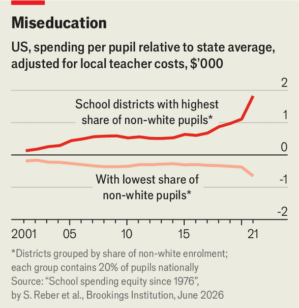
根据布鲁金斯学会（Brookings Institution）最新研究，早在1976-77年，贫困且非白人比例最低的学区的人均教育经费就已最高。这一模式在2020-21年依然存在，即使考虑了非白人比例高的学区通常位于大城市的高工资水平，且因民主党新冠时期财政刺激计划而进一步强化。《经济学人》分析发现，2024年，经工资差异调整后，黑人学生的学区人均教育经费比白人学生高3.5%，拉美裔学生则高0.9%。然而，这种投入并未带来同等的学习成果。■
2024年美国对13至14岁学生阅读与数学能力的国家测试显示，白人学生的平均得分位于第58百分位，而黑人学生的平均得分则处于第32百分位。部分差距源于黑人学生更可能来自贫困家庭，因此更可能面临更高的教育需求，这或许可以为更渐进式资金分配提供依据。像PS 307这样的学校往往有更多学习障碍儿童，需要更多专业人员帮助处境困难的学生以及英语学习者。然而教育学者也指出，除资金问题外还存在诸多挑战，多数问题在汉娜·琼斯（Hannah-Jones）的报道中均有体现。工会教师的薪酬主要基于资历而非绩效或学校环境的复杂程度。■
因此，贫困地区的教师往往流向富裕地区纪律问题较少的学校，导致原校教师队伍频繁更替，充斥着缺乏经验的教师。经常缺勤或教学效果不佳的教师则难以被替换，仍留在教室里。即便学生标准化考试成绩低也强行升入高年级——正如汉娜·琼斯（Hannah-Jones）所指出的，这类考试衡量的是特权而非智力或学校质量——使学生误以为自己掌握了知识。对扰乱课堂的学生不加管教或不予惩戒，则阻碍了所有同学的学习。许多汉娜·琼斯的批评者仍认可她公开揭露问题的勇气。但她的寓言主要传达的并非每个有能力逃离这类学校的家庭都应选择离开。■
要谨记她女儿第二所学校的校长所传达的信息：降低非白人学生的期望是“以反种族主义为名的种族主义”。 ■ 关注美国政治，请订阅我们的每日简报《美国简报》（The US in brief），获取最新政治新闻的快速分析，以及每周专栏《Checks and Balance》，深入探讨美国民主现状与选民关切的核心议题。
§022 特朗普将输掉最新媒体之战原题：Donald Trump will lose his latest media battle · 板块：United States · 栏目：美国
在9月21日于白宫剪彩新直升机坪时，特朗普出人意料地保持沉默。他的嘴在动，但观众却听不到任何声音。通常负责转播总统公开讲话的“媒体简报会”也未现身。特朗普因与媒体的最新冲突而陷入沉默。这场争端始于数天前，当时特朗普宣布将禁止CNN和MS NOW两家有线新闻网络，以及政闻社（Politico）这家新闻机构进入白宫。他后来表示：“没有理由”，“这其实只是过去两年来累积的报道。”
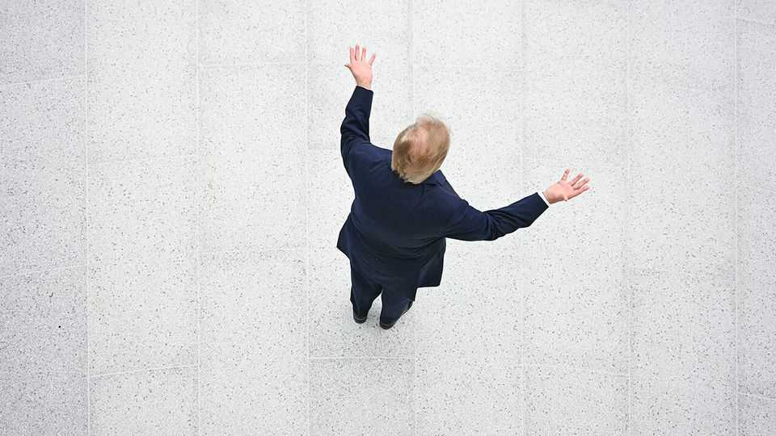
“你对这种事已经厌倦了。”美国五大电视网络——ABC、CBS、NBC、CNN和福克斯新闻——回应称将抵制部分对特朗普的报道。这五大网络构成了白宫电视记者团，轮流拍摄总统并与其他新闻机构共享画面。媒体与总统之间的关系本就充满矛盾。即便如此，因报道内容而排除某些媒体属于“观点歧视”，这违反了第一修正案。9月24日，一名联邦法官裁定政府未遵循正当程序，并下令暂时解除对这些媒体的禁令。在这场斗争中，如同其他场合一样，特朗普渴望胜利，但仅仅发起争端本身已产生影响。■
去年，五角大楼（Pentagon）对记者施加新限制后，其传统新闻团队大多撤离，取而代之的是网红和曾属边缘的媒体。今年3月，一名联邦法官裁定这些限制违宪。法院同时审理特朗普与美联社（Associated Press）之间的纠纷，后者因拒绝称墨西哥湾为“美洲湾”而被禁止进入部分活动及空军一号。总统本人自上任以来已起诉近 dozen 名记者和媒体。多数案件被驳回，但两起和解案对他有利。ABC同意向特朗普总统图书馆支付1500万美元，另加100万美元法律费用，并对主持人乔治·斯蒂芬诺普洛斯（George Stephanopoulos）的言论表示“遗憾”。CBS母公司Paramount Skydance则同意支付1600万美元，以解决另一起案件。■
美国联邦通信委员会主席布雷登·卡（Brendan Carr）威胁对播放特朗普不喜欢节目的广播公司进行许可证审查。对新闻政治化的担忧促使十二位民主党州检察长反对派拉蒙（Paramount）收购华纳兄弟探索公司（Warner Bros Discovery），后者拥有CNN。派拉蒙由大卫·埃利森（David Ellison）领导，他据称向政府官员承诺将对CNN进行“重大改革”。他此前已任命左派批评者巴里·维斯（Bari Weiss）担任CBS新闻主编。9月21日，州检察长们同意推进该交易，条件之一是派拉蒙为CNN和CBS设立“编辑独立”委员会。特朗普竞选的核心并非必胜每场战役，而是逐步削弱对手。■
美国民众对新闻的信任正在减弱，许多人转向社交媒体获取信息。特朗普的盟友埃隆·马斯克（Elon Musk）拥有全球最大社交媒体平台之一X，而总统本人则在自己的Truth Social平台上发表冗长的独白。皮尤研究中心（Pew Research Centre）最新民调显示，美国民众普遍支持新闻自由，但多数人认为政府在特定情况下应有权加以限制，例如新闻内容存在不准确之处。对特朗普而言，这或许听起来像是扩大审查权力的邀请。■ 关注美国政治动态，请订阅我们的每日简报《美国政治简报》（The US in brief），获取最新政治新闻的快速分析；以及每周专栏《制衡报告》（Checks and Balance），深入探讨美国民主现状及选民关切的核心议题。
§023 车牌识别器为何让美国人愤怒原题：Why licence-plate readers are angering Americans · 板块：United States · 栏目：美国
美国人不喜欢被监视。看来，制造监控技术的公司高管们也不喜欢。密苏里州共和党参议员乔什·霍利（Josh Hawley）于9月23日邀请多家公司高管就其产品作证，当时隐私担忧正日益加剧。所有公司都拒绝了。此举紧随Flock Safety公司数月来遭遇的抵制之后，Flock Safety是美国最大的自动车牌识别器（ALPR）运营商。Flock的摄像头利用人工智能追踪车辆，协助警方调查。但执法部门也滥用这些设备。
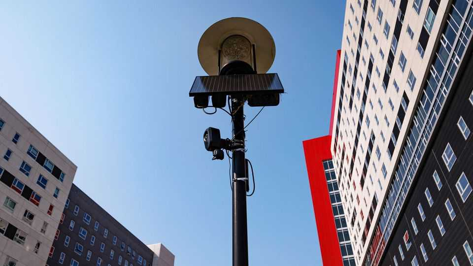
据民调机构YouGov统计，美国民众反对在社区使用自动车牌识别系统（ALPRs）的比例在不到一年内从33%上升至46%。两党立法者正考虑限制该技术的法案。自动车牌识别系统并非新事物，地方政府长期以来已将其用于收取通行费和执行交通法规。近期，左翼活动人士抗议联邦移民机构使用该技术。另一方面，特朗普表示他喜欢Flock，因为该技术有助于执法。然而，抗议声迅速升级，与对数据中心的抗议声相呼应。自动车牌识别系统和数据中心均迅速扩张，成为人们对人工智能焦虑的象征。Flock公司以远低于竞争对手的价格出售摄像头，其在全国已部署超过120,000台，每台每年生成数百万张图像。■
车主可将该数据与附近警方部门及Flock的全国数据库共享，使警员能跨城市或州搜索。人工智能还能提取车辆的其他信息，如颜色，从而将搜索范围从车牌扩展至更多细节。警方称这有助于侦破盗窃或绑架等案件。Flock声称去年协助解决了10,000起失踪人员案件。但全国刑事辩护律师协会的Melissa Owen认为，其自动车牌识别（ALPR）网络“远超人们此前对这类工具的认知”。警方无需搜查令即可查询车牌信息，而各州法律对警员记录搜索方式、数据存储时长及是否可将视频发送至其他州的规定存在差异。有警员被曝出跟踪前任伴侣或监视配偶的行为，软件错误也曾导致无辜司机被拦截。■
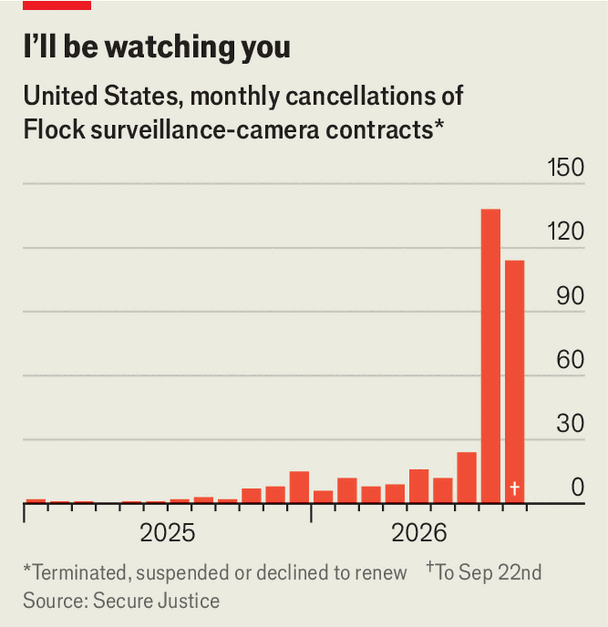
缺乏透明度加剧了这场争议。数字权利组织电子前沿基金会（Electronic Frontier Foundation，简称EFF）分析了搜索日志，发现警方输入了大量荒谬的车牌查询理由，包括“LOL”和“性感”（Flock随后新增了分类下拉菜单）。EFF是多家起诉城市政府涉嫌进行数千次不必要的搜索的组织之一。该公司表示已收紧数据库搜索要求。然而，这场争议已蔓延至中期选举。蒙大拿州参议员候选人独立候选人塞思·博德纳（Seth Bodnar）近日用霰弹枪对准镜头拍摄视频。反噬效应也带来了更实质性的结果，得克萨斯州州长候选人格雷格·阿博特（Greg Abbott）已暂停州政府对Flock的资助。■
据反监控组织Secure Justice的追踪数据显示，今年8月和9月，超过250个城市、城镇和学校终止了与Flock的合同，而去年同期仅有5个。 ■ 保持对美国政治的敏锐洞察，订阅我们的每日简报《The US in brief》，获取最新政治新闻的快速分析；以及每周专栏《Checks and Balance》，深入探讨美国民主现状与选民关切的核心议题。
§024 白宫可能即将宣布一项荒谬的柴油出口禁令 美国 燃料荒诞想法原题：The White House may soon announce a nonsensical diesel-export ban · 板块：United States · 栏目：美国
当选民对某个问题感到愤怒——尤其是在选举前夕——政客们通常会试图解决它。理想情况下，他们提出的解决方案应当明智。但有时看似在政治上有效的解决方式，实际上却荒谬至极。柴油问题便属此类。9月20日，美国柴油均价突破历史高点，达到每加仑6.5美元。这对依赖柴油的美国人而言是沉重打击，也令共和党议员陷入政治噩梦，因为他们本就面临公众对伊朗战争和高昂汽油价格的愤怒。 ■
越来越多的人呼吁禁止柴油出口，其中包括共和党参选人迈克·罗杰斯（Mike Rogers，密歇根州参议员候选人）和丹·沙纳汉（Dan Sullivan，阿拉斯加州参议员，面临艰难的连任竞选）。9月22日，唐纳德·特朗普表示正在考虑这一想法。次日，《政客》（Politico）新闻机构报道，白宫正准备实施为期90天的限制措施，但白宫随后否认了这一报道。若此类限制措施出台，恐怕难以解决根本问题，甚至可能引发新的问题。■
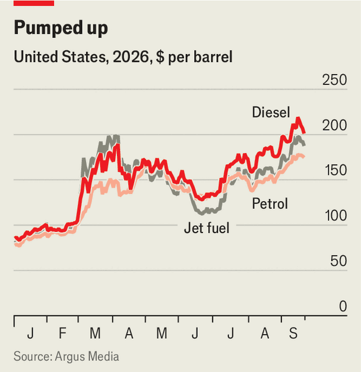
要理解为何实施出口禁令是不明智的，不妨参考特朗普政府能源部长克里斯·莱特（Chris Wright）在《经济学人》9月23日组织的活动上的发言。他解释道：“简单粗暴地禁止柴油出口显然行不通。因为同一座炼油厂同时生产柴油、汽油和航空燃油，若无法出口国内炼油厂产出的柴油，最终将无处存放，不得不削减美国炼油产能，这将推高汽油和航空燃油价格。”这对共和党人而言提出了几项挑战。首先，关于炼油厂运作的详细解释并不适合作为有说服力的竞选广告。但柴油价格高昂的问题可能进一步恶化。柴油的需求尤其缺乏弹性。■
与汽油不同，后者常用于非必要驾车出行，柴油主要服务于关键经济活动，如拖拉机、卡车、挖掘机等设备的动力来源。巧合的是，柴油使用量较高的州包括阿拉斯加（Alaska）和爱荷华（Iowa）等参议院选举关键州。柴油供应可能持续受限，正如一位交易员所言：“如今最稀缺的并非原油，而是炼油产能。” 与伊朗的战争已严重扰乱海湾地区的炼油和柴油运输，乌克兰战争也对柴油造成不成比例的影响——柴油长期以来是俄罗斯的重要出口商品，而乌克兰已加大对俄罗斯炼油厂的轰炸。综合来看，俄罗斯和海湾地区的柴油运输量自去年以来已下降75%，短期内难以迅速恢复。■
难怪政界人士正在考虑禁令，而政府仍在权衡禁令的边界，石油行业则积极游说反对。怀特先生建议，政府或许会通过与企业合作，以“更简单、自愿、合作的方式”减少柴油出口，而非直接禁止。实际禁令将引发怀特先生提到的那些问题，推高汽油价格。同时还会带来其他困扰，比如引发对美国作为能源出口国可靠性及投资目的地的质疑。但这些长期问题与中期选举仅剩六周时间相比，显然次要。■
保持对美国政治的敏锐洞察，订阅我们的每日简报《美国简报》（The US in brief），获取对最重要政治新闻的快速分析；以及每周专栏《制衡》（Checks and Balance），深入探讨美国民主现状及选民关切的核心议题。■
§025 唐纳德·特朗普最讨厌的事 美国 热空气原题：Donald Trump’s least favourite thing · 板块：United States · 栏目：美国
纽约气候周每年9月与联合国大会同期举行，届时各国领导人齐聚纽约，讨论全球最棘手的挑战。对唐纳德·特朗普而言，气候变化不在议程之列。他在9月22日的联合国演讲中仅提及此事，却将其称为一场骗局；去年的演讲中，他称其为“有史以来对世界实施的最大骗局”。政策制定者长期以来一直在探讨各国如何释放可再生能源；而特朗普现在则提供了一项研究，探讨如何限制其发展。 ■
他今年年初表示：“我的目标是不让任何风力涡轮机建成。”一些手段是预料之中的，例如共和党通过的税收法案，该法案终止了拜登政府时期对风能和太阳能农场的税收抵免政策。其他手段则更具创意，例如向风力发电开发商支付费用，以换取他们放弃海上风电项目。加州和纽约的总检察长于9月22日对该做法提起诉讼。特朗普并未成功阻止所有可再生能源的发展，但他在减缓其进程。总统对风能和太阳能的主要担忧在去年发布的一份行政命令中有所体现，该命令题为《终止对不可靠、受外国控制能源来源的市场扭曲补贴》。风能和太阳能确实存在间歇性发电、依赖外国供应链并受益于公共支持的特点。■
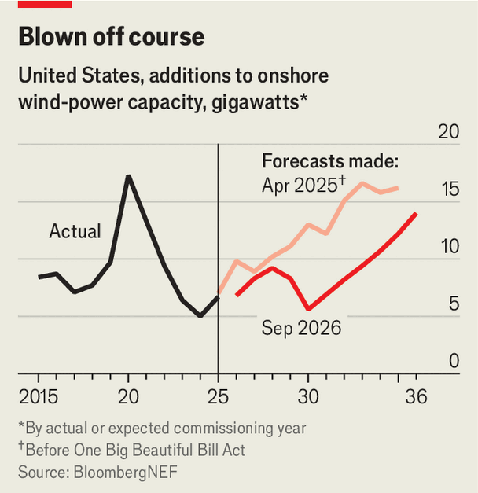
然而，根据政府自身数据，海上风电和太阳能的“平准化成本”——即在资产全生命周期内的平均成本——目前已低于天然气。同时，可通过能源存储和互补性能源解决间歇性问题，通过与盟友的贸易协议应对对外依赖。特朗普对此并不认同。他的能源部长克里斯·赖特强调需要稳定的电力供应，这种电力通常由天然气和煤炭发电。“如果你只能部分时间发电，而且我们不知道具体时间，”赖特在9月23日表示，“这就不算稳定的电力供应。”大型公用事业太阳能装机量有所下降，部分原因是许可审批瓶颈和进口设备相关规则的变化——去年的税法包含条款，用于判断项目是否由“被禁止的外国实体”支持。
但总统对风力涡轮机怀有特定的厌恶。他指责风力涡轮机杀害鸟类、降低房产价值、引发癌症，并且总体上认为它们“不恰当”和“可悲”。海上风电尤其脆弱，因其每兆瓦时成本高达119美元（相比天然气的77美元），同时面临漫长的建设周期和对联邦许可的依赖。在特朗普第二个任期的第一天，他发布备忘录，暂时暂停联邦土地和水域风力发电项目的许可，涵盖所有适合海上风电的区域。随后在12月，内政部暂停了五个海上风电项目的租约，这些项目曾在拜登总统任内获得许可。■
法官已批准复工，但彭博新能源财经（BloombergNEF）的哈里森·肖勒指出，除那五个项目外，到2035年前不会再有新项目上线。今年截至目前，政府已向企业支付约39亿美元，以换取其放弃海上项目的计划，这笔钱本应用于解决政府面临的诉讼。通胀和高利率已使这些项目吸引力下降，而对政府支持的不确定性进一步恶化了局面。道达尔能源（TotalEnergies）的帕特里克·普亚内率先达成协议，他解释了政策变动对长期海上项目的影响：“行不通。” 陆上风电成本更低，每兆瓦时仅57美元，表现更佳。今年开发商争先恐后申请税收优惠，以免错过最后期限。■
彭博新能源财经（BloombergNEF）将2029年的预测下调了25%，相比2025年4月的预期。除了到期的税收抵免和联邦许可暂停，开发商如今正面临来自国防部（DoW）的延迟问题。风力发电项目历来需要国防部（现为DoW）审批，以确保其不会干扰雷达或飞行路径。但从2025年8月起，DoW逐步停止了提案审查。美国清洁电力协会（American Clean Power Association）的杰森·格鲁梅特（Jason Grumet）表示：“他们直接关灯拉窗帘，取消了会议。”超过150个项目陷入这一瓶颈，国防部以国家安全为由辩称此举合理。随着特朗普持续打压可再生能源，两大因素或将推动其发展。■
一位法官已下令政府恢复对因能源部（DoW）延迟而搁置的项目的审查，另一位法官则表示，对联邦土地上的许可限制可能违法。更为关键的是，对电力的需求正在激增。“当价格开始上涨，我们担心的能源安全挑战将迫使任何政府都必须支持多元能源政策”，格鲁梅特认为。■ 关注美国政治动态，请订阅我们的每日简报《美国简报》（The US in brief），获取最新政治新闻的快速分析，以及每周专栏《Checks and Balance》，深入探讨美国民主现状及选民关切议题。
§026 缅因州如何，参议院便如何原题：As goes Maine, so goes the Senate · 板块：United States · 栏目：美国
在美国参议院任职，若来自本党占优的州且喜欢高谈阔论，便能享受优渥待遇。按 caucus 领导人的指示投票，不要给党内挑战者留下任何空间（若你是共和党人则在右翼，若你是民主党人则在左翼）；定期出现在福克斯新闻（Fox News）或 MS Now 上，对另一党派大肆抨击。然后坐回座位，看着捐款如流水般涌入，期待在曾被誉为世界最高议事机构、如今却成为最顶级养老院的参议院度过黄金岁月。■
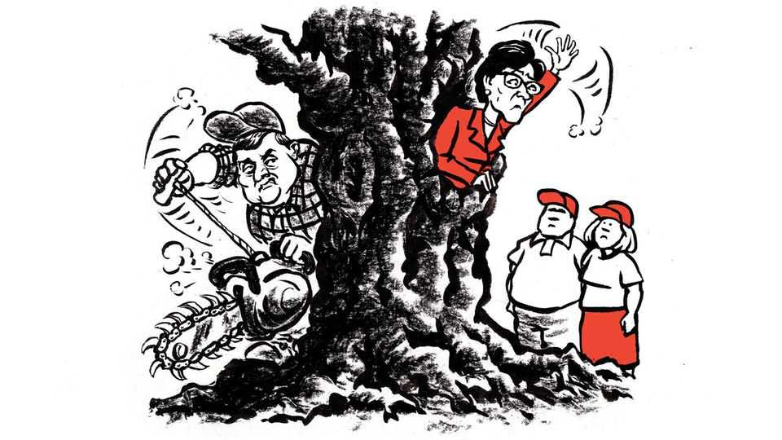
当然，一些参议员的工作态度更为积极。至少有一位参议员别无选择，她就是共和党人苏珊·柯林斯（Susan Collins）。自1997年起，她代表的缅因州（Maine）已连续25年未选出支持共和党总统候选人的选民。她属于日渐稀少的一类参议员，与来自不同政党的同州议员共事，她的搭档是独立党人安格斯·金（Angus King），后者通常与民主党人结盟。所谓“分裂代表团”曾是常态。1969年至1994年间，至少20个州、多达27个州曾出现分裂代表团，直到2013年仍有18对这样的“奇特搭档”，他们通常学会为本州利益合作，有时甚至为国家利益协作。
如今参议员选举中仅剩四位，这是自1913年参议员直接选举制度确立以来人数最少的一次——这包括佛蒙特州（Vermont），该州的席位竞争在民主党人彼得·韦尔奇（Peter Welch）与独立候选人伯尼·桑德斯（Bernie Sanders）之间展开。后者虽为独立候选人，但实际政治立场更接近民主党。这种选举结果比众议院选区的选区划分（gerrymandering）更难解决，也更凸显政治极化现象。如今美国选民不再由政客根据亲和度划分选区，而是根据政党自行聚集到各州，随着所有政治活动日益全国化，选民跨州投票的情况也变得越来越少。科林斯（Ms Collins）通过积极服务选民、为本州争取联邦项目、创下单次选举获得超过10,000票的纪录（且从未缺席投票记录）逆流而上。■
参议员如她这般处境最艰难的部分，是在众多投票中走出自己的道路，展现出足够的独立性以吸引中间派甚至部分民主党人，同时又不疏远自己的共和党基础。8月《邦纳日报》的一项分析显示，柯尔曼在其职业生涯中极少投票反对本党，但比任何其他参议员都更频繁地投下关键一票，包括2021年国会山骚乱后投票定罪特朗普。在Lugar中心（非营利机构）与乔治城大学公共政策学院共同维护的年度“跨党派指数”中，她连续13年位列共和党参议员首位。如今，正如每六年一次的选举周期所显示的，柯尔曼正面临职业生涯中最艰难的竞选。■
尽管她支持堕胎权，她仍投票确认布雷特·卡瓦诺（Brett Kavanaugh）担任最高法院大法官，称她相信他会将罗伊诉韦德案（Roe v Wade）视为“既定法律”。他随后投票推翻该判例，使得民主党在缅因州常听到的指控愈发成立——即科尔曼（Collins）仅表达“关切”却在关键时刻不挺身而出对抗特朗普。再叠加她任职期间，缅因州作为美国最偏远州之一的柴油价格上涨，以及与该州最大贸易伙伴加拿大爆发的贸易战。9月22日，调查性新闻机构普罗公共（ProPublica）在缅因州引发热议，发布了一则数年前国防承包商通过向科尔曼竞选捐款换取联邦资金的交易方案报道。科尔曼办公室否认任何不当行为，并称已将捐款退还。其办公室表示：“这些问题已于2021年解决。”■
这份报告强化了她民主党对手特洛伊·杰克逊的竞选主张。"你不应能靠钱包大小来购买政府"，他在《普罗公共》（ProPublica）报道发表前一晚于斯卡伯勒举行的活动上如此宣称。杰克逊的竞选主打民粹主义经济议题，这正是民主党全国范围内本选举周期所拥抱的核心主张，即谴责系统被操控、物价高企以及埃隆·马斯克。但他的独特之处在于拥有该党急切想要披上的工人阶级背景。在竞选宣传中，他的团队总在提及他全名前加上"第五代伐木工"，如同人们会称某人为"博士"或"首相"。然而杰克逊也存在弱点，包括在竞选演讲中语无伦次且思路混乱的倾向。■
民主党人因前候选人格雷厄姆·普拉特纳因丑闻而崩溃而士气受挫，这位充满活力的候选人曾令他们期待。一位民主党人士在 Scarborough 事件现场观察人群后表示：“他有才华，显然会带来影响。”他说，“如果当时是格雷厄姆·普拉特纳，你根本挤不进去。”（他要求不透露姓名，因为他与科林斯女士熟识。）一些民主党人担心杰克逊先生可能因过于强调真实性而失去以受过高等教育的专业人士为主的党内基础。“人们会想，‘天啊，第五代？’”一位民主党内部人士说，“‘难道第四代或第五代就不能从伐木业脱身吗？’”与普拉特纳不同，杰克逊先生在州议会任职20年，显然不像反体制候选人。■
尽管在2020年民调中落后于特朗普，科林斯女士当时仍以超过八个百分点的优势赢得选举，而特朗普则在缅因州以超过九个百分点的差距落败。要终结缅因州分裂的选举人团，需要一场强劲的民主党浪潮，这也将终结参议院中最后一位温和派共和党影响。另一方面，如此规模的浪潮也可能在俄亥俄州、爱荷华州、堪萨斯州、德克萨斯州和阿拉斯加等共和党占优的州再次造成选举人团分裂，从而在民主党内部催生新的温和派力量——随之而来的，是参议院两党合作更强烈的动力。希望如此。■
§027 独裁者的实验室：纳伊布·布克勒全力推动AI发展原题：The dictator’s laboratory: Nayib Bukele is pushing AI hard · 板块：Americas · 栏目：美洲
萨尔瓦多年轻总统纳伊布·布克勒注重形象。他不希望被看作一个平庸的独裁者，而是将自己塑造为600万人口国家的救世主，同时以科技驱动的实验室形象示人，供他人学习借鉴。总统选举将在2个月后的2月举行，但布克勒对选情并无太多担忧。
■
自七年前萨尔瓦多人首次将他推上总统宝座以来，他已将宪法法院成员替换为盟友，废除了总统任期限制，将市镇数量从262个缩减至44个，议会席位从84个减至60个，并重新划分选区——所有举措皆为自身利益。此外，他仍保有真实的人气。但更倾向于在新成果的基础上面对选民。一位不愿透露姓名的萨尔瓦多分析人士表示，总统希望被视作“社会转型的导师”。此次转型的目标是教育和医疗领域。人工智能的部署是关键所在。去年，布克勒总统在171所学校启动试点项目，使用由埃隆·马斯克旗下xAI开发的聊天机器人Grok来辅助教学。Grok在数学、科学和阅读领域担任辅导角色，按学生自身节奏进行教学，由教师监督。
类似实验正在其他地区展开——哥伦比亚已在农村地区试点Meta的聊天机器人——但官员表示萨尔瓦多的计划是首个全国性推广尝试。布克勒正在扩大该计划。医疗领域也采取了类似措施。11月，他与谷歌合作推出了DoctorSV应用程序，用户可通过触屏随时联系医生。AI作为初步筛选工具协助医生诊断病情、开具药物并安排和分析检测，全部服务免费。政府称已有150万萨尔瓦多人注册，200万电子处方已发出。布克勒声称该系统将“成为世界上最好的医疗体系”。布克勒需要另一个成功案例。他已超额兑现让国家更安全的承诺——尽管付出了民主的代价。■
他暂停了人权并关押了近2%的人口，往往仅基于对参与帮派的怀疑。在他2019年上台时，凶杀案数量已开始下降，但到2025年，每10万人的凶杀率从38骤降至1.3。这一成绩使他获得高达90%的支持率和国际赞誉。没有人能否认这改变了人们的生活。38岁的母亲乔哈纳·菲格罗亚说，我们的孩子“享有特权”无需担心在公交车上该在哪一站上下车。其他政策则效果不佳。他最后一项重大科技举措——2021年使萨尔瓦多成为首个将比特币作为法定货币的国家——最终失败。普通民众并未发现其用途。布克勒将比特币视为个人项目，令人难忘地说他从浴室里买来。■
无人知晓该国储备金在他卸任后会去向何方。与此同时，经济在纸面上表现优于街头现实。多数分析人士预测今年经济增长率约为5%，但受益群体并不均衡。对拥有政府合同的群体有利，对普通萨尔瓦多人则不然。外国直接投资尚未出现爆发式增长。萨尔瓦多人对此有所察觉。中美洲大学（UCA）在圣萨尔瓦多进行的一项五月民调显示，超过70%的受访者将经济问题列为最大担忧（仅2%提及犯罪）。布克勒先生已将自身标准提高。分析人士表示：“他因治安问题获得的公信力使人们认为他能解决任何其他问题。” 新政策尚早下定论。教育实验已获得初步好评。■
在PISA（全球15岁学生阅读、数学和科学能力测试）中，试点学校志愿学生的表现与2022年德国和瑞典学生的平均水平相当，世界银行作为该项目资助方之一指出。但目前尚无证据表明这种表现与人工智能的使用有关——试点学校志愿学生本身更可能是高分群体。世界银行称这些结果“令人惊讶且非常鼓舞”。萨尔瓦多首都梅赛德斯·昆特罗学校（Mercedes Quintero School）接孩子的家长纷纷称赞。费尔格罗亚女士表示，她九岁的女儿展现出“显著”进步。“以前总是书本、书本、书本，现在她更有热情了。”■
DoctorSV尚未经过独立评估，但已获得拉丁美洲和加勒比开发银行的全力支持，该银行正为其提供资金。该银行称萨尔瓦多已建成“一个普遍且可持续的卫生系统，基于尖端技术”。用户也表示印象深刻。“它更快捷，”24岁的安德里亚·瓦尔加斯说，“我某天感觉非常糟糕，它立刻安排了检查和药品——全部免费。”布克勒总统同时推进这两个项目，从总统府直接管理。教育部门官员表示，官僚体系被边缘化，试点学校几乎无人能接触。许多教师已被解雇。萨尔瓦多教育专家奥斯卡·皮卡多指出，提升学校教育的可靠方式是培训教师，而非发放设备。他以瑞典为例，瑞典已开始从教室移除屏幕，转向书籍，作为警示案例。■
医疗工会称这款应用只是“贴膏药”，无法解决药品和专科医生短缺的问题。数千名公立医院员工被解雇，部分原因是缩减政府雇员规模以满足国际货币基金组织（IMF）贷款的条件。相关成本尚不明确。xAI未披露其与政府合作的具体数据。萨尔瓦多国民议会批准了5.76亿美元贷款用于教育计划和DoctorSV第二阶段项目，几乎没有实质性的辩论。最大的担忧是布克勒总统有通过政策集中权力的先例。一些人担心这项实验实质上是将儿童和患者的个人数据交给本人和科技公司。国内外许多人都希望这些政策能取得真正成效。但若布克勒总统抱怨自己被剥夺了获得信任的机会，那并非毫无道理。■
§028 特朗普与德尔西·罗德里格斯的亲密互动原题：The love-in between Donald Trump and Delcy Rodríguez · 板块：Americas · 栏目：美洲
特朗普在纽约联合国大会期间与委内瑞拉未当选的临时总统德尔西·罗德里格斯会面。特朗普此行旨在凸显其外交政策的成功，而罗德里格斯则希望通过此次会面讨好特朗普，希望他忽视反对派要求举行选举的呼声，继续支持其顺从的威权主义。她的策略显然奏效了。
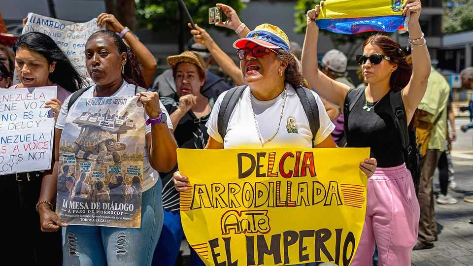
■
1月，美国特种部队将前独裁者尼古拉斯·马杜罗（Nicolás Maduro）从加拉加斯的住所带走，押送至纽约监狱。次日，特朗普威胁罗德里格斯——当时马杜罗的副总统——若不服从，将遭遇“比马杜罗更糟的命运”。如今，罗德里格斯在距离马杜罗被关押的监狱七英里处亲昵地与特朗普握手，凸显了她的生存本能、意识形态灵活性以及她几乎满足了特朗普所有要求的事实。她之所以如此顺从，部分原因在于特朗普政府掌控着委内瑞拉全部的石油收入。更重要的是，她协助美国获取了这些石油。其政府迅速修订委内瑞拉的石油法，以吸引更多美国投资。■
随后，上个月，她与一家私营公司达成了一项重大且存疑的协议，将17个油田的开采权授予美国政府，以低成本获取这些油田可产出的大量石油。鉴于特朗普对石油和阿谀奉承的偏爱，这对支持选举的人而言是个坏消息。特朗普与罗德里格斯的关系是影响委内瑞拉民主未来的关键因素，但并非唯一决定性因素。加拉加斯的委内瑞拉反对派与政权代表的第二轮谈判预计本周内结束。这些谈判由美国国务卿马尔科·鲁比奥监督，他似乎比特朗普更倾向于推动选举。首轮谈判以承诺更换整个最高法院告终，而最高法院在确保选举公正方面至关重要。■
第二阶段始于政权解除了对部分独立媒体网站的封锁。关于逐步废除镇压性法律的讨论预计将继续展开。美国方面也受到影响，共和党参议员伯尼·莫罗（Bernie Moreno）呼吁明年7月举行委内瑞拉选举。在拥有大量委内瑞拉侨民的佛罗里达州，特朗普对一名遭憎恨的独裁者副手的支持可能损害部分共和党候选人在中期选举中的前景。民主党要求举行选举并承诺若赢得众议院将展开委内瑞拉政策调查。这些政客仍对流亡的反对派领袖玛利亚·科里娜·马查多（María Corina Machado）抱有信心。据报道，马查多在特朗普与德尔西（Delcy）会晤前曾三次尝试返回委内瑞拉但均告失败。她若能入境将加剧对选举的施压。■
特朗普政府至少两次阻止她实际返回，她目前仍滞留巴拿马。在这一状况改变之前，这位受特朗普青睐的罗德里格斯女士似乎稳坐权力宝座。■
§029 美国正在从一个从未成功重塑的地区撤退 中东与非洲 美国三十五年的战争原题：America is stepping back from a region it never managed to remake · 板块：Middle East & Africa · 栏目：中东与非洲
当世界领导人于1991年9月参加联合国大会时，美国在中东的霸权似乎即将确立。美国国防部刚刚在众多盟友的支持下发动了一场迅速的战争，将占据科威特的伊拉克军队驱逐出境。美国外交官正准备举办马德里会议，这是以色列与一群阿拉伯邻国之间的首次直接对话。随着苏联已濒临崩溃，美国似乎准备在动荡的地区塑造新的秩序。■
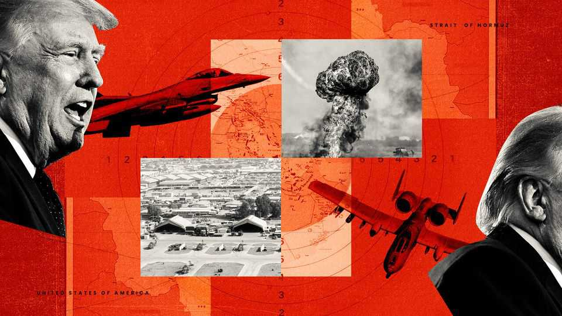
随后的35年却陷入混乱，美国在一次次军事误判中摇摆不定。最新的一次冲突——唐纳德·特朗普与伊朗的争端——本应数日内结束，却已持续第八个月。这场冲突给他的亲密阿拉伯盟友以及全球其他地区带来了巨大代价。本周在纽约联合国总部聚集的政要们看来，美国并非解决中东困境的良方，反而是问题的根源。无论战争何时结束、以何种方式结束，这都将成为其持久影响之一。尽管美国不会离开中东，但它将不得不退出其主导地位。其盟友已失去信心，选民感到疲惫，战略家们将不得不应对其他地区日益加剧的危机。无人准备接替其角色，更不用说阿拉伯国家了。■
这将使未来局势更加复杂——但长远来看，美国霸权的终结未必是坏事。不过目前的目标仅仅是结束战争。美国与伊朗于9月22日在联合国举行了三小时的间接会谈，卡塔尔（Qatar）特使在双方之间传递信息。这是自6月以来双方的首次此类会谈。特朗普称此次会谈“成效显著”。不过他也在向大会的讲话中重申了对伊朗“彻底摧毁”的威胁。私下里，外交官们对会谈的评价则较为谨慎。会谈为双方重申立场提供了机会，但会议形式显然不利于突破——双方立场仍相距甚远。伊朗希望美国重返“谅解备忘录”（MOU），即6月签署的短暂协议。■
特朗普更倾向于废除这份仅作为60天临时协议的备忘录（MOU），并就新的协议展开谈判。美国总统还与海湾国家、土耳其及另外四个阿拉伯国家的官员会面。再次，信息混杂：他称“就达成协议而言存在大量进展”，同时又警告称可能对伊朗的核设施发动空袭。与此同时，双方的经济战仍在持续。伊朗在过去一周内已至少袭击了五艘经过霍尔木兹海峡的油轮。9月23日，美国对为伊朗飞机提供加油或维护服务的外国公司实施制裁，此举实际上将禁止伊朗航空公司飞往大多数国际目的地。而在伊朗的冲突持续之际，也门的冲突则进一步升级。本月，得到伊朗支持的胡塞武装组织宣布放弃与沙特支持的对手于2022年达成的停火协议。■
他们占领了也门西南海岸的一片区域，这使他们对连接红海与亚丁湾的曼德海峡获得了更牢固的控制权，他们已经在该海峡试图对沙特船只实施封锁。胡塞武装也重新对沙特阿拉伯发动攻击。9月15日，沙特王国称其在麦加（伊斯兰教最神圣的城市）附近拦截了一架无人机。四天后，一枚胡塞武装导弹击中了利雅得机场的燃料罐，这是他们数年来首次对沙特首都发动攻击。与此同时，伊拉克民兵组织袭击了王国最重要的输油管道，导致该管道停运超过一周（9月22日恢复运行）。然而，这一切并未使油价跌至灾难性水平——这是伊朗希望向特朗普施压以达成协议的主要手段。
布伦特原油价格在胡塞武装进攻和输油管道袭击后一度上涨至每桶109美元，但随后回落。《经济学人》出版时价格约为每桶102美元。当然，这一数字并未完全反映市场全貌：整体能源市场状况堪忧。" dated"布伦特原油（几周后交货）本月已突破每桶130美元。精炼产品供应紧张，美国柴油均价目前已达每加仑6.52美元，创历史新高。但特朗普仍坚持强硬立场，即便燃料价格上涨正威胁其共和党在11月中期选举中的表现。美国方面仍寄望于经济压力迫使伊朗让步。其对伊朗航运实施的两个月封锁已造成混乱。港口停摆使伊朗难以通过陆路转运贸易：数百辆卡车在边境口岸排成长龙，等待数日才能通关。■
里亚尔屡创新低。通货膨胀率接近三位数。暂停伊朗航空公司运营将扰乱该国药品供应链。伊朗总统马苏德·佩泽希安承认了危机的严重性。议会发言人穆罕默德·巴格赫·加利巴夫抱怨强硬派拒绝外交。但与特朗普一样，政权愿意承受更多痛苦。双方都无法在战争中取得决定性优势。华盛顿、德黑兰和海湾国家普遍认为，这场冲突将持续到年底。沙特王储穆罕默德·本·萨勒曼告诉美国不要急于重返MOU。他更希望他们维持封锁并寻求新协议。多数海湾国家持相同观点（卡塔尔和阿曼是例外）。伊朗不愿急于达成可能压低油价并给特朗普带来中期选举前提振的协议。■
摩根大通银行的分析师已放弃预测未来走势。他们于9月17日写道：“我们根本无法建模最终结局。”这并非美国首次陷入中东泥潭。过去数十年间，美国在该地区尝试了几乎每种类型的军事干预。它曾动用庞大地面部队推翻伊拉克独裁者，利用空袭推翻利比亚政权，武装叙利亚反对派并支持沙特领导的联军在也门开战。部分行动虽成功推翻政权，却留下混乱局面；其他行动则彻底失败。所有行动均未给美国利益带来积极成果。然而，其后果仍相对有限。萨达姆·侯赛因被推翻对伊拉克人而言是一场灾难，伊拉克陷入数年的教派暴力冲突。■
美国通过消除伊朗的主要地区对手，使伊斯兰共和国得以在叙利亚和黎巴嫩扩大影响力。但这场战争对美国在中东最亲密的盟友影响有限。此次冲突与以往不同，除了伊朗之外，最严重的后果落在了美国海湾盟友身上。这些国家预计将在2026年经历经济收缩，损失数百亿美元的油气销售机会、消失的旅游收入以及基础设施损毁。他们曾希望通过谅解备忘录（MOU）在第四季度恢复商业活动，但如今正悄然讨论是否再次推迟大型活动，从科技会议到一级方程式赛车。在海湾之外，这场战争也引发了全球性的能源冲击。而它在美国民众中也格外不受欢迎。直到四年之后，才有一半美国人将伊拉克战争称为错误决策。■
特朗普对伊朗的战争在两个月内便达到了这一程度。所有这些因素都将限制美国在该地区的未来角色。首先看其盟友。他们此前曾多次产生严重分歧：2003年沙特曾敦促小布什不要入侵伊拉克，海湾国家在2011年奥巴马敦促长期执政的埃及独裁者穆巴拉克（Hosni Mubarak）下台时也感到不安（或许穆巴拉克本人也如此）。这些分歧可能让他们对美国的判断产生质疑，但美国的承诺和能力从未受到怀疑。随后是叙利亚。当奥巴马在2013年未能执行针对巴沙尔·阿萨德使用化学武器的“红线”时，美国显得犹豫不决；当最终未能推翻叙利亚独裁者时，又显得软弱无力。■
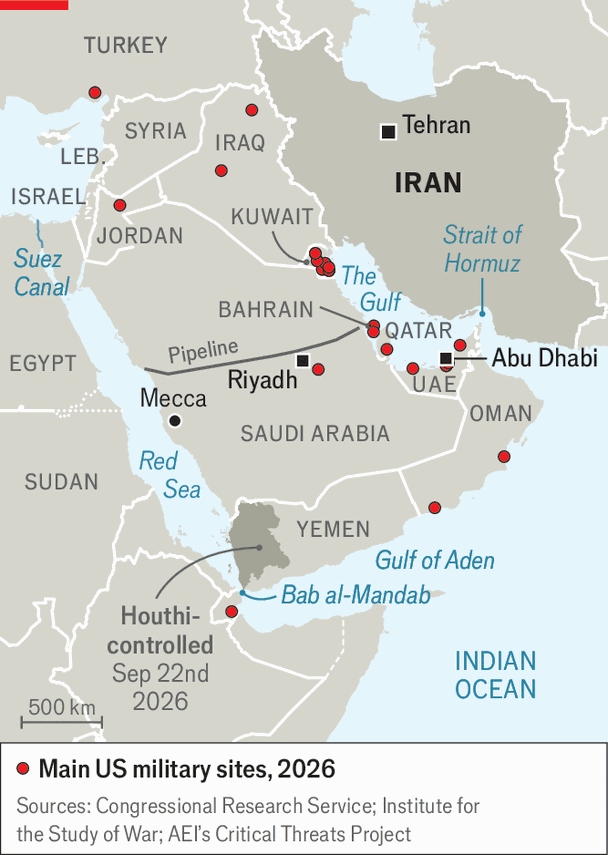
疑虑进一步加深，因伊朗支持的一系列针对海湾国家的袭击事件——2019年沙特油田遭袭击、2022年阿布扎比致命无人机袭击——引发的反应却寥寥无几。特朗普却亲手摧毁了残存的信任，他发动的这场海湾战争正是美国长期试图遏制的。海湾国家无人愿公开讨论美国在该地区基地的未来（见地图）。一名外交官表示：“现在绝对不是谈论此事的时机。”有关关闭部分基地——其中许多在战争期间遭伊朗袭击——甚至缩减规模的讨论，会让美国显得在盟友最危急时刻抛弃他们。但这场战争很可能会促使美国逐步减少维持大规模永久性设施。例如，美国在巴林的海军基地曾是中东罕见的“家属可随行”基地，驻军可携家眷驻扎。■
卡塔尔的军事基地不太可能恢复到战前规模，当时该基地曾容纳近1万名人员。战前卡塔尔曾准备投入100亿美元升级位于多哈郊外的al-Udeid基地，该基地是美军中央司令部在中东地区的总部。卡塔尔仍愿投入这笔资金，但美国是否愿意接受尚不清楚。多国官员表示希望就这些基地的使用规则进行商讨。他们已开始实施临时限制措施：沙特阿拉伯在5月阻止了重新开放霍尔木兹海峡的尝试，当时其禁止美军战机进入本国领空。在该地区其他地方，美国已开始逐步撤离。今年春季，美军完成了从叙利亚基地的全部撤离，而伊拉克的基地则计划于9月底前全部清空（两项计划均早于战争爆发）。其对手也将参与其中。■
设想最坏的情况：特朗普与伊朗的战争导致一个拥有核武器的政权能够对霍尔木兹海峡的航运行使否决权。在这种情况下，美国将难以维持在海湾沿岸国家的军事基地。反之，如果该政权倒台，美国对这些基地的需求也将减少：一个没有伊斯兰共和国的中东将远比现在对美国利益更友善。无论战争如何结束，伊朗不会是美国唯一的威胁。美国在中东的干预主义巅峰时期，恰逢其他地区相对平静的阶段。欧洲大体上和平；中国正崛起为强国，但尚未强大到能在太平洋挑战美国。奥巴马首次提出的“转向亚洲”政策，后来在华盛顿成为常被调侃的话题：每次转向都是一次360度的转身。然而，如今的世界显然更加危险。■
五角大楼难以承受将五分之一的航母部署在波斯湾，或消耗数百枚稀缺的拦截导弹与制导导弹与伊朗作战的代价。国内政治局势将构成另一重制约。自林登·约翰逊扩大美国在越南的角色以来，尚无总统因一场对外战争彻底毁掉自己的任期。特朗普的潜在继任者们会引以为戒。J.D. 弗兰斯（J.D. Vance）这位共和党初选领跑者，对中东战争持明确质疑态度。他的多位潜在民主党对手也持类似立场。与此同时，美国公众对以色列的观感持续恶化：5月皮尤民调显示，62%的美国人对以色列政府持负面看法，较2022年上升19个百分点。塑造美国中东政策的亲以共识正逐渐消退。收缩并非退却。美国仍将在中东保持利益。■
反恐是少数所有人都能达成共识的话题：当伊斯兰国威胁黎凡特地区时，就连美国和伊朗也曾在同一战线并肩作战。即便美国参与度降低，仍可能对基地组织等组织发动袭击。它将继续向盟友出售武器、谈判贸易协议并资助和平谈判。对以色列的军事援助大概率将持续多年，尽管多数美国人反对这一政策。真正改变的是美国作为地区安全担保人和问题解决者的形象——正如一位海湾官员所言：“我们遇到问题时总会致电华盛顿。”也门近期局势则揭示了这一转变的含义。特朗普不仅拒绝了穆罕默德王子多次请求美国在也门发动空袭的请求■
他的代表还曾前往阿曼与胡塞武装特使会面，后者承诺遵守2025年停火协议，并承诺不袭击红海的美国船只。后者或许体现了特朗普式的独特手法：很难想象其他总统会与被指定为恐怖组织的势力私下达成协议。但对介入的抗拒将超越特朗普本人。地区外的任何国家都无法填补这一真空。欧洲实力过于薄弱，沙特阿拉伯请求援助时，英国仅提供了一架空中加油机。俄罗斯既无能力（其陷入乌克兰冲突）也无意愿（其向胡塞武装提供援助，主要出于对美国的不满）。俄罗斯将自己视为地区动荡的受益者，而非终结者。中国缺乏近期在境外开展重大军事行动的经验。这使得地区国家成为唯一的选择，其中实力最强的三个非阿拉伯国家。■
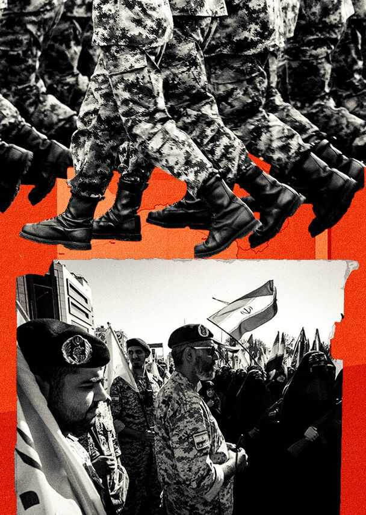
伊朗拥有导弹和代理人，而以色列则拥有中东地区最强大的军队。某种意义上，它们如同镜像：足够强大以扰乱地区秩序，而非构建秩序。第三股力量是土耳其，这是一支兼具军事与外交实力的国家，同时也是日益增长的军售国。土耳其曾在冲突中果断介入，例如最终推翻阿萨德政权的叛军多年受到土耳其保护；2019年，土耳其军队击退了试图夺取利比亚首都的军阀。但土耳其在伊朗、以色列和许多阿拉伯国家眼中都备受猜疑。短期内，该地区大概率会分裂为阵营，阿拉伯国家将与非阿拉伯国家结盟。实现长期稳定则需要这些国家发挥更大作用，为此他们需要更强大的军队、更牢固的联盟，以及最难以捉摸的东西：合作。■
海湾地区一些稳定富裕的国家已开始意识到变革的必要性——至少是那些政局稳定、经济富足的海湾国家。以他们的军队为例，海湾国家数十年来一直在购买昂贵的美国军事装备。但并非所有采购的装备都适合他们最终参与的战争。随着采购清单发生变化，他们将寻求新的供应商。伊朗通过其弹道导弹计划展示了其价值。沙特无法从美国购买导弹，但已从中国获得导弹（本月可能已用于打击胡塞武装）。阿拉伯世界所有国家都渴望从土耳其购买无人机，该国是无人机的主要生产国。今年早些时候，阿联酋（UAE）与乌克兰签署了一项十年协议，采购乌克兰无人机。协议包含联合生产条款：阿联酋将建立新工厂进行生产。
这与阿联酋及其他地区日益增长的自主生产武器的动向相契合。同时，他们也在寻求新的盟友。自7月起，沙特阿拉伯已宣布与巴基斯坦和土耳其签署互防协议，并与十余个国家组建海上联盟以保障红海安全。从军事同盟的性质来看，这些协议大多模糊且充满愿景。该海上联盟包括孟加拉国，尽管该国距离遥远（约5,000公里）且缺乏强大的蓝水海军。但这些举措展现了未来的发展方向。未来将出现更多此类临时性联盟，部分可能短暂存在，另一些则可能持续更久。最重要的是，阿拉伯国家需要就他们希望构建怎样的地区达成共识。在10月7日之前，海湾官员常提及“新中东”这一概念，即一个更注重经济繁荣而非战争冲突的地区。■
这虽是个美好的构想，但在充满顽固冲突和低效政府的地区却显得不切实际。如今沙特阿拉伯与阿联酋甚至难以在也门展开合作，尽管胡塞武装对两国都构成威胁。阿拉伯联盟和海湾合作委员会——由六个石油君主国组成的组织——也未能发展成有效的机构。这些缺陷是美国在中东时期不可避免的后果。美国及其区域盟友从未拥有共同的宏伟议程，也不存在像二战后欧洲那样的自由民主项目将它们凝聚在一起。美国也未像在亚洲那样推动经济增长模式，它只是希望维持石油供应、保护以色列并维持军事基地（后来又将打击激进组织纳入目标）。■
这些目标并不需要阿拉伯国家具备能力或繁荣；事实上，有些目标如果它们不繁荣反而更容易实现。对它的盟友来说，这已经足够了，因为它们更关注政权的存续。它曾一度实现了这些目标。但如今，其基地已遭重创，油轮正面临袭击，最亲密的盟友以色列已陷入三年战争。即便特朗普没有鲁莽地破坏这一切，美国过去35年构建的这一切也并不稳固：该地区太多国家弱小、分裂或已陷入失败状态。没有长期担保人可依赖，他们或许现在不得不自行打造更稳固的体系。■
§030 非洲天然气未来梦想有多现实原题：How realistic is Africa’s dream of a gas-powered future? · 板块：Middle East & Africa · 栏目：中东与非洲
要讲述非洲天然气的故事，阿兰·埃博比塞（Alain Ebobissé）总会随身携带他的“天然气地图”。作为非洲50（Africa50）基础设施投资平台的负责人，他拿出一张纸，上面布满输气管道。非洲在地图上几乎完全空白（见地图）。“看这个！”埃博比塞先生惊叹道，“我们几乎没有输气管道，基础设施匮乏——这太糟糕了。” 非洲拥有全球13%的天然气储量，24个成员国拥有已探明储量，还有更多待发现。然而其用于发电的天然气却不足全球总量的5%。■
其天然气管道网络密度仅为北美地区的十分之一。“谁在使用这些天然气？”埃布比塞（Ebobissé）问道。“不是我们。”非洲大陆的政界人士、商界领袖和投资者普遍希望增加天然气使用量以推动工业化和经济增长。“目标不仅仅是增加天然气产量，目标是确保非洲拥有更具生产力的经济体系，”尼日利亚总统博拉·蒂努布（Bola Tinubu）的能源顾问奥卢·韦尔海恩（Olu Verheijen）表示。由于乌克兰和海湾地区的战争导致全球能源市场波动，加上对净零目标的关注度下降，天然气再次受到关注。但在非洲，它可能难以达到预期效果。对非洲支持者而言，天然气或许能解决诸多能源问题。目前，该燃料已占撒哈拉以南地区电力供应的14%，随着煤炭（目前占40%）的使用量下降，其重要性可能进一步上升。
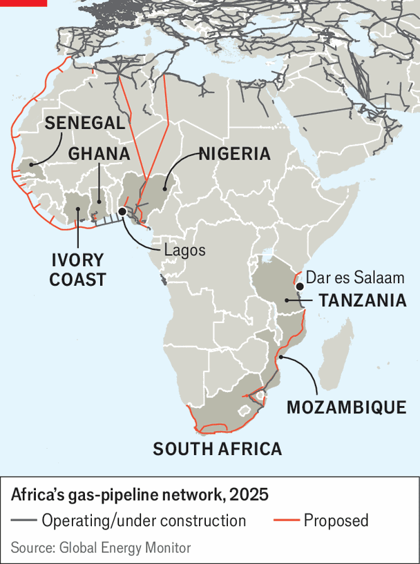
廉价太阳能可能成为非洲6亿无电人口更便捷的电力来源。但天然气的灵活性使其在现代经济的各个角落都大有可为：作为钢铁厂和水泥厂的热源，作为化肥和石化产品的原料。液化石油气（LPG）可替代更脏的柴油和木炭，用于家庭炉具。压缩天然气（CNG）为司机提供比汽油和柴油更便宜、更清洁的替代选择。对尼日利亚等主要生产国而言，向欧洲和亚洲出口液化天然气（LNG）也能带来稀缺的外汇收入。由于撒哈拉以南非洲缺乏管道、加工厂、储罐等基础设施，天然气的潜力仍 largely hypothetical（主要停留在假设层面）。2025年生产的天然气中，约43%被出口而非本地使用。■
非洲消耗的天然气中，近半数用于发电，这一比例高于其他地区。仅17%用于工业，相比之下南美洲近40%、亚洲超过30%用于工业。非洲能源咨询公司（African Energy）的马克·霍华德（Marc Howard）指出，仅有九个撒哈拉以南非洲城市拥有管道天然气。新铺设的天然气管道难以吸引投资，除非买家（如燃气发电厂）能提供确定的需求，而燃气发电厂又难以筹集资金，除非能获得稳定的天然气供应。当前对天然气的兴趣是否能改变这一局面？目前上游领域前景最为乐观，法国道达尔能源（TotalEnergies）和意大利埃尼（ENI）等国际能源公司正加快计划，从非洲大陆进口更多液化天然气（LNG）。■
莫桑比克是非洲第三大天然气储量国，目前有多项液化天然气（LNG）项目在推进，其中包括一项价值200亿美元的项目，因该国北部长期存在的武装叛乱而停滞多年。据咨询公司Rystad的普拉纳夫·乔希（Pranav Joshi）预测，凭借本土企业如Seplat和Oando，尼日利亚年天然气产量到2030年有望增至约1100亿立方英尺（约1140亿立方米）每天。非洲2025年天然气总产量预计达2620亿立方米，较前一年增长2.5%。随着非洲国家逐步减少对煤炭等污染性能源的依赖，天然气需求增长正推动投资向下游环节延伸。标准银行（Standard Bank）的保罗·埃德利-泰勒（Paul Eardley-Taylor）表示，南非正在加速建设天然气发电厂、LNG进口终端等基础设施，总投资或达95亿美元。■
瑞斯塔德能源的尼维德·塔伊库塔提（Nivedh Thaikoottathil）认为，如果南非和尼日利亚的新项目以及莫桑比克、坦桑尼亚和科特迪瓦等国规模较小但战略意义重大的项目顺利投产，到2035年撒哈拉以南非洲的燃气发电总装机容量可能从目前的26吉瓦（GW）增至52吉瓦（GW）。这一数字将超过煤炭发电的35吉瓦（GW），但远低于太阳能的140吉瓦（GW）。不过这种增长并不确定。资金紧张的非洲电力公司难以成为燃气发电这种相对昂贵能源的可靠买家。■
自然资源治理研究所（Natural Resource Governance Institute）位于纽约，其最新研究指出，尼日利亚的“天然气十年计划”已实施过半，大部分新产气将用于出口——部分原因在于该国电力网络的瘫痪限制了政府从燃气发电厂采购的能力。“真正的制约因素在于分销环节，”维赫詹女士承认道。上游天然气公司也不一定是可靠的供应方。在坦桑尼亚和塞内加尔，与国际能源企业的谈判因对国内市场应分配多少天然气以及商业条款存在分歧而受阻。“为何要在一个声称要限制价格、监管价格并将其排除在国际市场之外的国家投资？”牛津大学的简·罗森诺问道。■
少数企业成功克服了困扰国内天然气基础设施投资的“鸡与蛋”困境。加纳能源公司（Genser Energy）作为一家加纳运营商，已在加纳铺设超过400公里的管道，主要用于向金矿供应天然气。此后该公司又建设了液化天然气终端和天然气处理厂，并最近筹得5亿美元用于扩展西非电力项目组合。撒哈拉以南地区也开始出现类似北非常见的天然气驱动工业集群。尼日利亚商业中心拉各斯，“成为工业枢纽是因为有天然气管道”，Powergas公司（为全国企业提供压缩天然气配送服务）的苏梅特·辛格（Sumeet Singh）指出。可靠天然气供应确实能解释为何位于拉各斯附近的塑料制造商Sacvin近年来扩大了生产规模，该公司总经理乔格什·卡特瓦尼（Jogesh Khatwani）表示。■
坦桑尼亚最大城市达累斯萨拉姆（Dar es Salaam）外围繁忙的工业区由国内天然气供电。理论上，全球天然气短缺应放大这种效应，使非洲新天然气项目的融资变得更加容易。世界银行等多边贷款机构已放宽能源融资规则，允许为天然气及可再生能源项目提供资金。法国-英国能源公司Perenco总裁阿梅尔·西蒙丁（Armel Simondin）预计这将“解锁此前完全受阻的项目”。但同时启动众多项目本身也存在风险。未来全球天然气过剩可能使成本较高的非洲生产商面临亏损。更长时间的电池储能等技术进步，可能使天然气在可再生能源面前失去竞争力，导致部分投资陷入困境。■
长期能源预测往往不可靠，因此押注天然气的巨额投资实为高风险赌局。■ 注册订阅《Analysing Africa》，获取每周简报，了解世界最年轻且最不为人知的大陆的最新动态。
§031 非洲、中东及非洲地区面临新战争威胁 重返流血冲突原题：A disastrous new war threatens in Africa · 板块：Middle East & Africa · 栏目：中东与非洲
就在几年前，2020年至2022年间，埃塞俄比亚北部提格雷地区曾爆发内战。据估计，数十万人在冲突中丧生。这场战争将埃塞俄比亚和厄立特里亚军队与提格雷人民解放阵线（TPLF）——提格雷地区的执政党——相对立。2021年，美国因“严重人权侵害”对埃塞俄比亚实施武器禁运，并对厄立特里亚军队、高级官员及国营企业施加制裁。幸运的是，据美国官员称，这场危机终于结束。■
9月18日，美国取消了对埃塞俄比亚的军售禁令，并未重新对厄立特里亚实施制裁。美国财政部声明称，“埃塞俄比亚的国家紧急状态已结束”。此举时机颇为微妙。9月23日，忠于提格雷人民解放阵线（TPLF）的武装力量控制了提格雷地区的三座机场，促使埃塞俄比亚联邦政府暂停该地区航班。TPLF指责埃塞俄比亚军队对南提格雷发动攻击，并称其武装已“转入防御战”。一名埃塞俄比亚官员则表示，TPLF实际上已对邻近阿姆哈拉和阿法尔地区的埃塞俄比亚军队发动“全面进攻”。截至发稿时，双方在两地及南提格雷地区均陷入激烈交火。提格雷人民解放阵线与埃塞俄比亚总理阿比·艾哈迈德之间的紧张关系已持续一年多。■
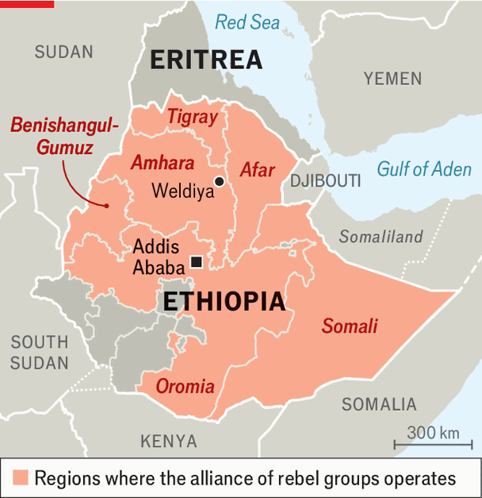
提格雷人民解放阵线（TPLF）指责阿比（Abiy）对提格雷实施惩罚性围困，这是针对其人民的“种族灭绝”行动的一部分。与此同时，阿比政府则称TPLF是敌对势力的“ Trojan horse”，意图瓦解埃塞俄比亚，其中最主要的对手是厄立特里亚（Eritrea），而阿比与厄立特里亚也处于敌对状态。最近几周，埃塞俄比亚军队对TPLF发动了一场未宣而战的无人机战争。而近几日，这场冲突似乎已升级为接近第二次内战的态势。若战斗持续，最新一轮冲突将与此前大不相同。此前，厄立特里亚军队曾与埃塞俄比亚军队并肩作战对抗TPLF，来自提格雷南部阿姆哈拉地区的民兵组织“法诺”（Fano）也参与其中。法诺组织与厄立特里亚80岁独裁者艾萨伊亚斯·阿夫韦尔基（Isaias Afwerki）均认为阿比2022年与TPLF达成和解的决定背叛了他们。■
法诺（Fano）于次年发动了针对联邦政府的叛乱。伊斯亚斯（Isaias）方面则显得愈发担忧阿比（Abiy）多次威胁要吞并厄立特里亚部分海岸线。9月20日，埃塞俄比亚人民革命民主阵线（TPLF）与法诺（Fano）联合其他五支埃塞俄比亚叛军组织发表联合声明，宣布他们已结成联盟，旨在推翻阿比政权。厄立特里亚官员否认参与该联盟。但伊斯亚斯与法诺有着长期关系，据信他已向TPLF及其他组织提供武器和后勤支援。局势缓和的可能性微乎其微。“战争已经打响，”一名前埃塞俄比亚情报官员认为。TPLF和法诺似乎正试图包围位于阿姆哈拉州北部、连接提格雷与首都亚的斯亚贝巴主干道上的城镇韦尔迪亚（Weldiya）。■
如果韦尔迪亚失守，这可能预示着叛军对埃塞俄比亚首都的进攻。叛军还入侵了阿法尔州，可能试图扰乱甚至阻断通往吉布提港口的运输线路——埃塞俄比亚几乎所有的国际贸易，包括燃料进口，都依赖这条路线。阿比总理有两个显著优势。首先，各叛军组织实力分散，内部因民族矛盾和历史积怨而分裂，这可能削弱其协调能力。其次，阿比拥有强大的空军力量。2021年，提格雷人民解放阵线（TPLF）曾一度占据上风，但埃塞俄比亚军队凭借无人机成功将其击退。如今，阿比的空中力量更加强大且装备更先进。■
五月，一位总理顾问呼吁通过精确打击无人机暗杀提格雷人民解放阵线（TPLF）领导人。"TPLF领导层可能撑不过一周"，一位消息灵通的观察人士表示。然而，阿比总理还有其他敌人需要应对。如果埃塞俄比亚的反叛军失利，伊斯亚斯可能担心自己成为下一个目标，于是命令部队加入战斗。埃里特里亚也是苏丹人民解放军（SAF）的重要盟友，而苏丹人民解放军是邻国苏丹的国家军队，正陷入自身灾难性的内战。苏丹人民解放军反过来对埃塞俄比亚支持其敌人——快速支援部队感到愤怒。这意味着埃塞俄比亚的战争可能演变为区域性大屠杀。"这场战争不会局限于提格雷"，一位TPLF官员预测道，"它将涉及埃里特里亚，也将涉及苏丹。" ■
订阅《非洲分析》（Analysing Africa），一份每周简报，让您掌握关于世界最年轻且最不为人知的大陆的最新动态。■
§032 为何尼日利亚多个州争相成立航空公司 中东及非洲 飞行狂潮原题：Why so many Nigerian states want their own airline · 板块：Middle East & Africa · 栏目：中东与非洲
如果埃邦伊州（Ebonyi）以什么著称，那就是发展努力的匮乏，从减贫到提高识字率。这或许是因为州政府追求了更高的目标：试图建设一座机场。该州声称仅在2020年至2023年间就为此项目投入了约500亿奈拉（3800万美元），超过同期教育支出的一半。该项目因腐败指控和破坏行为而备受争议。在几次试飞后，因跑道存在缺陷，航空交通被迫中断。
尽管如此，埃布埃州政府仍在考虑下一步行动：启动自己的航空公司。尼日利亚的国营航空公司至少可以说成绩平平。国营航空运营商尼日利亚航空（Nigeria Airways）在2000年代初因薪资拖欠和机舱鼠患横行而破产。由州政府运营的航空公司中，至少有三家仍在运营（尽管仅有一家盈利）。航空分析师克里斯·阿利格比（Chris Aligbe）称，埃布埃州的提议是个“笑话”。但州长们定期提出启动自有航空公司的计划。7月，北部卡诺州（Kano）州长表示，本地航空公司将在年内“借上帝之恩”开始运营。州政府并不具备运营航空公司的最佳条件，但其高调计划背后存在某种逻辑。尼日利亚国土辽阔，公路和铁路网络糟糕，且存在严重的劫匪问题。■
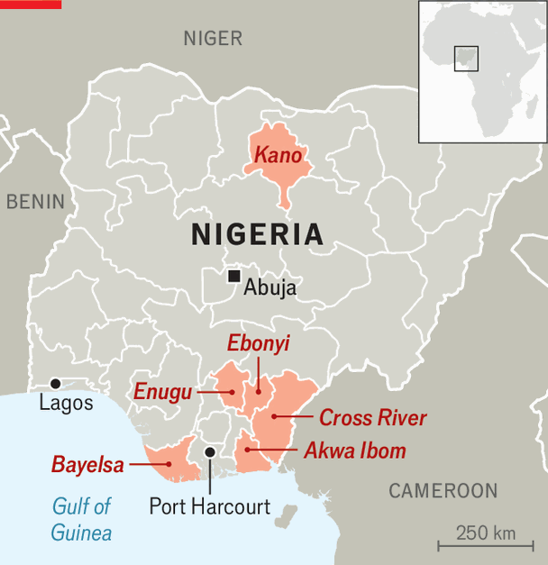
通过航空运输实现通达，可能为偏远地区带来福音，尤其当它能吸引更多富裕投资者和来自阿布贾（Abuja）与拉各斯（Lagos）的游客时。这样的期望并非天方夜谭。阿夸伊博姆州（Akwa Ibom）于2019年启动了本地航空公司Ibom Air，该航司已将区域机场转变为经济枢纽，并声称带动了旅游业发展。目前Ibom Air已开通连接州外六个目的地的航线，包括加纳首都阿克拉（Accra），并正在建设西非地区维修维护设施，旨在提供非洲航空公司目前需飞往海外才能获得的专项维修服务。该航司亦实现盈利，2025年净利润达70亿奈拉（约合530万美元）。邻近的克罗斯河州（Cross River）官员希望本地航司能吸引游客前来品尝该州海鲜并参与年度嘉年华活动。■
然而，从经济角度来看，由州政府运营的本地航空公司通常难以理解。埃博尼州的机场距离邻近的恩古尼州机场仅需一小时车程，而恩古尼州的机场容量充足（并拥有自己的初创航空公司）。贝亚尔萨州也计划启动一家航空公司，尽管其邻近的河流州帕尔梅鲁港机场仅需45分钟车程即可覆盖该州（见地图）。尽管航空运力在增长，但国内航空旅行去年仅增长了4%。市场依然较小，因为多数尼日利亚人无力承担飞行费用。然而官员们对航空旅行的执着有其原因。一方面涉及政治因素，埃博尼州的机场虽无法使用，但该州长在建设该机场时似乎给总统留下了深刻印象，因此被任命为基础设施部长。另一方面则是经济利益。■
联邦政府有时会接管倒闭的区域机场，并向各州支付高额补偿。机场和航空公司的支出鲜少受到审查。埃布尼政府称，已为拟议的航空公司支付500亿奈拉购买三架飞机。截至目前，尚无任何一架飞机交付的迹象。■ 订阅《Analysing Africa》每周简报，了解世界最年轻且最不为人知的大陆的最新动态。
§033 一个无标签啤酒揭示的非洲小国困境 中东及非洲原题：What a beer with no label says about a small African country · 板块：Middle East & Africa · 栏目：中东与非洲
数百年来，圣多美和普林西比以奴隶贸易和巧克力闻名。1470年葡萄牙人登陆这些岛屿后，他们带来了被奴役的非洲人，在糖种植园上劳作。葡萄牙表面上在19世纪70年代废除了奴隶制。但圣多美和普林西比的契约劳工制度持续存在，使其一度成为全球最大的可可生产国。如今，要了解非洲人口最少的国家之一（仅次于塞舌尔）——该国将于9月27日举行全民选举——只需喝一瓶啤酒。具体来说，就是由该群岛唯一酿酒厂罗塞玛（Rosema）生产的无标签棕色瓶装啤酒。■
1975年从葡萄牙独立后，该国成为苏联的卫星国。东德帮助建立了淡色啤酒生产国营企业。Rosema啤酒被称为cerveja nacional（国家啤酒），这恰如其分地反映了这款啤酒满足后殖民时期爱国主义渴望的特质，也提供了观察该国政治经济的窗口。圣多美和普林西比（São Tomé and Príncipe）几乎没有大型企业。对石油产业和深水港的憧憬始终未能实现。但Rosema啤酒始终供应不断。自1995年私有化以来，所有权如同醉汉般摇摆不定，在安哥拉商人与两位有影响力的本地兄弟之间反复切换。与刚果的矿山或尼日利亚的石油公司类似，控制权会随掌权者更迭而变化。最新转折出现在5月，宪法法院将啤酒厂重新归还给安哥拉商人Mello Xavier，这是自2018年以来的第五次易主。■
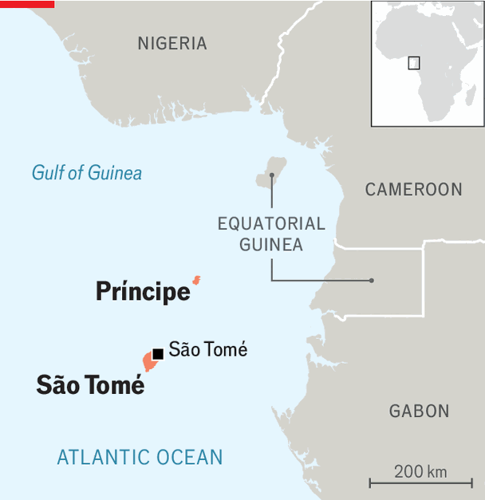
这被视为卡洛斯·维拉诺瓦总统（Carlos Vila Nova）在2025年通过宫廷政变罢免政敌后巩固权力的证据。这个袖珍国家的权谋伎俩，折射出其薄弱的法治、浅薄的经济和裙带政治。欧洲对外关系委员会（European Council on Foreign Relations）的亚历克斯·文斯（Alex Vines）表示：“啤酒是选举的润滑剂。”随着选举临近，候选人纷纷分发礼物，包括啤酒。当地人称之为“洗个澡”（指黏腻的）。在圣多美普林西比小岛上的坎蒂尼亚·达·蒂亚·切拉（Cantinho da tia Cheila）这家粉红色小卖部兼酒吧里，切拉（Cheila）——店主——先往地上洒一些啤酒，再倒入杯中，这一习俗在非洲各地及1990年代的嘻哈视频中都很常见。她说玫瑰玛（Rosema）偶尔会在瓶身贴标签，但标签在潮湿环境中很容易滑落。■
尽管如此，它仍比葡萄牙进口品便宜，而且“它让我们对自己的土地感到自豪。”她的支持者们也表示赞同。但像许多街头哲学家一样，他们对政客的承诺嗤之以鼻，当喧闹的竞选车辆驶过街头时，他们只是摇头。他们从经验中知道：正是啤酒花害人。■ 注册订阅《Analysing Africa》，每周获取关于世界最年轻、最不为人知的大陆的最新动态。
§034 俄罗斯对欧洲的灰色地带攻击正变得愈发无所顾忌原题：Russia’s grey-zone attacks on Europe are growing more brazen · 板块：Europe · 栏目：欧洲
俄罗斯对欧洲的破坏行动已升级到足以让法国总统埃马纽埃尔·马克龙于9月18日召集法国各政党领袖和总统候选人举行简报会，讨论平民伤亡威胁。据《世界报》报道，马克龙告诉他们：“没有人是安全的。”他表示，俄罗斯的目标是“削弱我们对乌克兰的支持”。前一天，波兰总理唐纳德·图斯克引用情报称，俄罗斯计划用无人机或导弹袭击支持乌克兰的国家，随后声称袭击是意外发生的。
俄罗斯（Russia）表示，其试图通过测试北约（NATO）条约第5条来“瘫痪”北约，该条款承诺对任何成员国的攻击都将被视为对所有成员国的攻击。若北约作出冷淡回应，将动摇这一承诺的可信度。俄罗斯多年来一直在对欧洲国家进行难以追溯的挑衅行动，自2022年全面入侵乌克兰以来，此类行动显著增加。包括侦察无人机侵入、网络攻击、纵火、针对货运航班的包裹炸弹以及暗杀欧洲军火公司高管的阴谋。最近几个月，此类行动的频率似乎再次上升。根据安全官员的说法，俄罗斯的行动有三大目标：试图迫使欧洲国家停止对乌克兰的支持；提高提供支持的成本；并试图让北约显得无能为力。■
“我们似乎正从一系列灰色地带事件转向持续的行动，”英国前外交官安德鲁·汤姆森（Andrew Thomson）表示，他目前任职于德国安全公司Monarch。就在图斯克和马克龙公开表态的前一周，意大利军机在北约任务中击落了一架进入立陶宛的装有爆炸物的无人机，另有战机拦截了两架侵入北约空域的俄罗斯战斗机。同周，俄罗斯无人机在乌克兰境内距波兰边境检查站2公里处击中一列火车，此前英国前首相鲍里斯·约翰逊刚通过该边境。荷兰的铁路网络近期也因协调放置管道于轨道上而中断。■
8月，一架装有爆炸物的无人机被飞入德国莱比锡-哈雷机场用于运输乌克兰武器的货运飞机，但未能成功引爆。德国将此次袭击归咎于俄罗斯，并作为报复关闭了俄罗斯文化中心。并非所有此类事件都容易追溯责任。许多行动设计为难以追查，因此被称为“混合战争”或“灰色地带战争”。汤姆森先生表示，这类事件远多于官方报告的数量。它们常针对关键基础设施或国防企业，包括“事故”损坏设备、敏感地点入侵以及招募间谍等行动。个别事件看似随机，但整体上呈现出破坏和情报收集的模式。在许多情况下，破坏行动由本地代理人或犯罪团伙实施。许多人可能并不知晓他们的幕后主使是俄罗斯。■
使用自由职业破坏者的优势在于，更难将矛头指向俄罗斯情报机构。劣势则是他们未经专业训练，更可能搞砸任务。“模糊性本身就是武器的一部分，”前北约情报官员大卫·卡特勒（David Cattler）如今任职于华盛顿的欧洲政策分析中心（Centre for European Policy Analysis）表示。对事件真相的不确定性使得各国难以就应对措施达成一致。这些事件被精心设计，规模足以产生影响，但又未达到触发北约军事行动的阈值。荷兰铁路系统的混乱便是典型案例。荷兰当局尚未明确此次破坏是否与俄罗斯有关，亦未确认是否由当天抗议活动中封锁道路的愤怒农民所为。■
然而，由于俄罗斯与其他灰色地带事件存在关联，即便未被明确指责，它仍能从欧洲的恐惧与疑虑中获益。欧洲面临的首要挑战是如何应对。许多国家正在采取防御性措施，例如在机场及其他关键基础设施周围安装无人机防护系统。一些人认为，欧洲还需采取更严厉的措施，以提高俄罗斯发动混合攻击的成本。俄罗斯可采取报复措施，如进一步限制向俄罗斯人发放签证、驱逐外交官、关闭领事馆、实施更严厉的制裁，或扣押更多俄罗斯影子舰队油轮。波罗的海国家正推动欧洲没收冻结的俄罗斯资产以资助乌克兰。另一些人则建议欧洲应以物抵债。■
德国对外情报局局长马丁·雅各布（Martin Jäger）在二月表示，西方需要“更频繁地证明我们具备类似的能力，让对方也感受到痛苦”。包括网络攻击在内的行动可能已经展开。有分析人士猜测，法国可能正在采取类似乌克兰在马里对俄罗斯雇佣军非洲军团实施无人机袭击的行动。“莫斯科最看重的是实力”，Cattler先生表示。除非欧洲展现出足够的强硬姿态以遏制挑衅，俄罗斯将继续升级行动。截至目前，其挑衅行为尚未造成灾难性后果——但可能已经接近这一边缘。轨道上的障碍物可能导致火车脱轨。机场的无人机袭击可能击落民航客机。最危险的做法是让俄罗斯持续施压，直至某事崩溃。■
§035 弗里德里希·默茨（Friedrich Merz），垂死挣扎的欧洲总理原题：Friedrich Merz, the zombie chancellor · 板块：Europe · 栏目：欧洲
弗里德里希·默茨正在打破一系列不幸的记录。他是历史上最不受德国选民欢迎的总理。他的基民盟（Christian Democrats）及其巴伐利亚姐妹党（CDU/CSU）的支持率也接近历史最低点。9月20日，在梅克伦堡-前波莫瑞州（Mecklenburg-Vorpommern）的州选举中，基民盟首次被逐出州议会，得票率跌破5%。
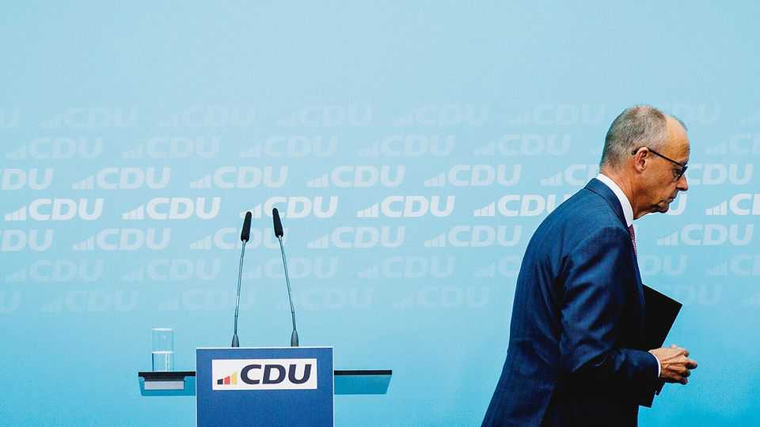
对财政部长所属政党中的许多人而言，这场最新的丑闻标志着无法回头的转折点。在本月早些时候，基民盟（CDU）在东部萨克森-安哈尔特州被极右翼选择党（AfD）大败之后，柏林的基民盟竞选团队报告称，当地选民只愿谈论他们对默茨的厌恶——尽管默茨并未出现在选票上。死亡的气息笼罩着他的总理任期。然而尽管所有人都能看到默茨脚下那道陷阱，却无人愿意按下开关。部分原因在于，若他下台，前景似乎更加糟糕。执政党不愿引发新一轮选举，因为这类选举很可能被选择党（AfD）赢得。■
为将社会民主党（SPD）赶下台、以少数政府执政——这一据称在默茨办公室被考虑过的情景——将使保守党（CDU/CSU）沦为极右翼政党AfD在议会中的附庸。若最可能的替代人选、北莱茵-威斯特法伦州（Germany's biggest state）州长亨德里克·乌斯特（Hendrik Wüst）明年四月不面临重新选举，则换帅可能更具吸引力。无论如何，此类权力更迭面临的制度性障碍使其风险颇高。“若此时贸然出手，有人会将你砍头。”CDU成员、政治咨询公司MSL负责人维甘·萨拉查（Wigan Salazar）如此说道。这使默茨出人意料地获得自由，去推进其任内标志性议题：落实其政府7月达成的一系列经济及其他改革措施。■
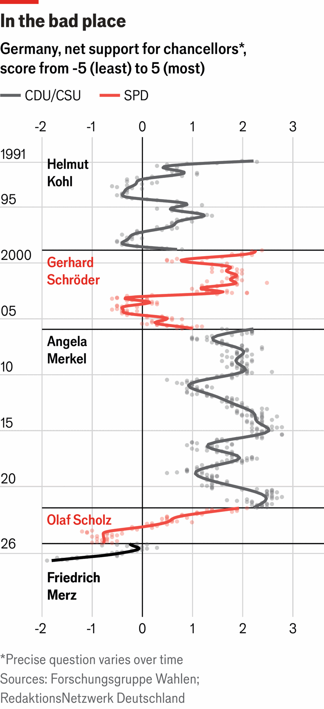
在9月20日计票结束后，他出人意料地发表讲话，誓言将推行这些政策时展现出“骨气、坚定与耐心”。他补充称，这些政策可能是对抗他所说的正渗入德国政治的“威权毒药”的良药（德国选择党在梅克伦堡-前波莫瑞州领先，极左翼左翼党则在柏林胜出）。尽管总理习惯性夸大其小幅提案的规模，但其日益缩小的支持者群体仍赞赏他对政策的坚持。然而要在联邦议院推动这些改革，需要一种此前总理始终未能掌握的细腻手腕。目前执政联盟仅拥有12席多数，而关于养老金改革——整体方案中最雄心勃勃的部分——的争论已初现端倪。■
2023年7月，德国政府同意废除一项2014年推出的、广受欢迎但成本高昂的规则，允许部分工人提前全额退休。劳动部长兼社民党（SPD）共同领导人巴尔贝尔·巴斯（Bärbel Bas）称该养老金方案为“总艺术作品”（Gesamtkunstwerk），暗示支持其中所有要素。但梅克伦堡-前波莫瑞州（Mecklenburg-Vorpommern）SPD领导人曼努拉·施韦希格（Manuela Schwesig）将反对该提案作为竞选核心议题，且在竞选中AfD紧追其后。施韦希格现已成为党内重要力量，本周由SPD议员通过的文件称选举是“改革的授权”。感知到威胁，基民盟（CDU）议员誓言保护该协议。但双方领导层对议会成员的控制力均不强，确保按承诺废除养老金规则将成为重大挑战。■
德国议会将就老年护理改革及2027年预算进行投票，这为躁动的议员们提供了制造麻烦的机会。在基民盟内部打听，人们能察觉到一种比默茨困境更深层的焦虑。随着左翼和，尤其是右翼的民粹主义者不断壮大，这个长期自视为团结力量与执政党的政党，是否对德国政治的碎片化有应对之策？“我们需要一个值得争取的目标，而非仅仅反对一切。”一位焦虑的党内人士如此说道。所有人都同意，不可能回到以往的常态。然而，目前似乎没有其他替代方案，唯有寄希望于时间流逝带来救赎。下一次选举要到4月才举行。在此期间，经济已显复苏迹象，默茨将在国际舞台上拥有大量展示自己实力的机会。■
这或许能再给他几次暂缓执行死刑的机会。接下来又会怎样？■
§036 欧盟新包装法规是官僚主义的混乱局面原题：The EU’s new packaging rules are a bureaucratic bungle · 板块：Europe · 栏目：欧洲
欧盟以监管超级大国自居，其制定的标准被全球广泛采用。在某些领域成效显著，如对污染物的严格限制；在其他领域则屡屡失败，如复杂供应链法规的实施被推迟至明年。欧盟最新出台的重大法规是《包装及包装废弃物法规》（PPWR），该法规于8月生效。该法规将最终禁止酒店使用的单次使用洗发水瓶，以及番茄酱等调味品的小包装。 ■
尽管其愿景颇具价值，但不幸的是，其中许多内容仍是一团官僚主义的乱麻。欧盟约300页的《塑料包装废弃物法规》（PPWR）目标值得肯定。该法规旨在遏制包装垃圾的快速增长，提升回收率，协调各国法律，并通过限制如pFAS（全氟烷基物质）等广泛使用的慢降解化学物质，使食品包装更安全。目前，每位欧盟公民每年产生178公斤包装垃圾，其中68%被回收。塑料占其中35公斤，但仅42%被回收（见图表1）。若无该法规，包装垃圾预计到2030年将增长19%（见图表2），这主要由网购的持续增长驱动。许多新法规将逐步实施。
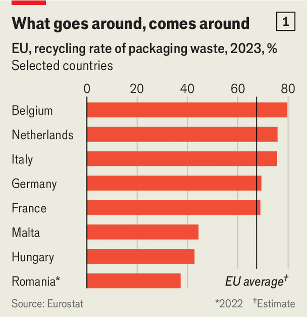
包装制造商需在2028年前引入标准化标签，标明产品材质及处置方式。生鲜食品及迷你洗发水瓶、番茄酱小包等一次性塑料包装的禁令则延至2030年。但其他政策已立即生效，部分措施甚至引发混乱。生产者责任延伸制度（EPR）要求制造商及进口商承担产品全生命周期责任，该制度某些条款引发出口欧盟的中小企业强烈不满。新规要求企业须在欧盟27个成员国分别注册、雇佣27名授权代表，并以不同语言提交复杂报告，这对本就面临高能源与人力成本的企业而言堪称沉重负担。■
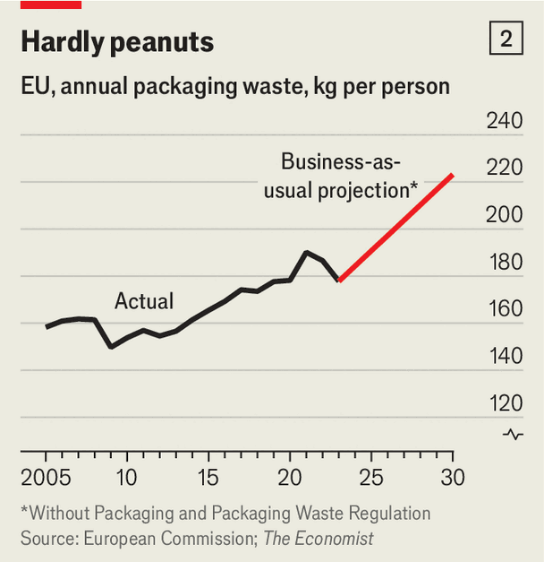
欧盟早前已意识到这些担忧，但欧盟委员会提出的暂停至2035年要求雇佣本地代表的提案，于6月在欧盟理事会遭否决。包括奥地利和西班牙在内的国家担心，取消本地问责机制将削弱监管控制力，使跨境电商卖家更容易逃避包装数据申报和回收费用缴纳义务。因此，《包装废弃物指令》（PPWR）在缺陷未修正的情况下正式生效。“这完全荒谬，”德国巴伐利亚州帕绍市经营B2B电子零售商Itrade的马克·雷特伯格表示，该企业拥有35名员工。
在包装商品前，员工必须完成一致性评估、准备技术文件并填写欧盟符合性声明。“自8月12日起，我们不得不丢弃所有收到的纸箱，因为我们不清楚它们的来源，而非像以往那样重复利用。”里特贝格先生表示。他称这些规定既令人困惑又成本高昂，以至于无人遵守。许多小型欧洲零售商已放弃，暂停向其他欧盟国家发货。主营马术和皮革制品的在线店铺Picadera停止向德国和奥地利以外的欧盟国家发货。科隆的内衣卖家Le Pop Lingerie则表示，因pPWR法规，将仅向英国、德国、挪威和瑞士发货。■
柏林的自行车配件制造商Pitlock暂停向其他欧盟国家发货。“PPWR的核心与单一市场的逻辑相悖，”德国欧洲议会成员安德里亚·韦奇勒表示。如何应对？韦奇勒女士建议设定一个门槛，使欧盟内非常小的企业免于履行EPR方案的义务。她提议暂停在每个国家指定本地代表的要求，这与欧盟委员会的提议一致。并应将27个国家级登记系统整合为一个欧盟统一的登记系统。欧洲议会计划于10月就小型企业从PPWR中豁免的问题展开讨论。欧盟委员会建议，目前由各国当局对违规企业进行谴责而非处罚。■
9月7日，德国环境部提议在即将出台的欧盟“综合法案”中削减不切实际的PPWR规则，以减轻环境监管负担。德国方面希望放宽对年包装废弃物产量不足十吨的小型企业的部分要求。在电商博主马克·斯蒂尔数十年的零售业报道中，他从未见过业界如此愤怒。“PPWR是欧盟、国家贸易政策和贸易游说团体的全面失败，”他表示。新规则存在的问题本应在实施前就显而易见，但似乎直到规则被实际应用后，人们才意识到其缺陷。■
§037 黑手党可能正将芬太尼挡在意大利境外原题：The Mafia may be keeping fentanyl out of Italy · 板块：Europe · 栏目：欧洲
在《教父》中，唐·维托·柯里昂拒绝涉足海洛因交易，因为他认为这“是肮脏的生意”。但现实中的黑手党成员很少有这种道德顾虑。然而，意大利警方正得出一个结论：过去十年间，现实版的这一情节可能真的在意大利上演。该国的黑手党似乎联手将芬太尼挡在了其势力范围之外。这一理论或许能解释意大利芬太尼过量服用率为何异常偏低。2024年，这种比吗啡强100倍的合成阿片类药物，仅在意大利造成两起致命中毒事件。
德国的数字是95，美国则高达近4.8万。这不能单纯用意大利整体毒品消费水平来解释。根据欧洲数据，约有2.1%的意大利年轻成年人每年使用可卡因，相比之下德国为2.2%。意大利的高风险阿片类药物使用率估计约为德国的两倍。2024年，随着芬太尼在欧洲出现频率上升，意大利政府推出了应对计划。但药品政策最高官员阿尔弗雷多·曼托瓦诺指出，该毒品在意大利尚未造成显著影响。反黑手党检察官尼古拉·格拉特里表示，警方至今未查获大量芬太尼。他得出结论称，黑手党正远离这种毒品。■
“如果不存在芬太尼危机，那并非因为警方或政客们的努力，”有组织犯罪作家罗伯托·萨维亚诺（Roberto Saviano）表示，他的著作《哥摩拉》（Gomorrah）被视为经典。他说，“黑手党方面存在某种否决权。”格拉特里（Mr Gratteri）与萨维亚诺认为，这种毒品极强的成瘾性与高致死率很可能会引发执法部门的强烈反应。此外，那些导致顾客死亡的毒品，从长远来看利润反而更低。对意大利有组织犯罪集团而言，这可能威胁到其已有的海洛因和可卡因市场。他们似乎认定芬太尼会带来不必要的关注，对生意不利。目前尚无确凿证据：调查人员尚未找到黑手党头目同意不碰这种毒品的监听录音。■
但7月，意大利宪兵队（Carabinieri）专门打击有组织犯罪的部队指挥官文琴佐·莫利内斯（Vincenzo Molinese）向议会委员会作证称，现有证据表明他们正在避开芬太尼。萨瓦尼奥（Mr Saviano）表示，此类决定必须由最高层做出：“当有人试图带入芬太尼并因此丧命时，我们才会获得确凿证据。”无论如何，意大利的芬太尼无毒区可能不会持续太久。6月，罗马一家医院被盗80支芬太尼药瓶，足够制造2万剂毒品。这促使医疗设施加强安保措施。合成药物以极小数量即可产生巨大价值，省去了传统致幻剂（如可卡因）所需的复杂物流环节。芬太尼街头需求正在浮现。最终，萨瓦尼奥认为，新势力将趁机填补这一市场空缺。■
正如唐·柯里昂最终同意让毒品在其领地流通时所说：“我什么时候拒绝过让步？”■
§038 法国迫使欧盟解除对俄罗斯寡头的制裁 欧洲屈服于压力原题：France forces the EU to lift sanctions on a Russian oligarch · 板块：Europe · 栏目：欧洲
，法国完成了一项维克托·奥班（匈牙利前领导人）多年来屡试屡败的任务。法国通过施压迫使欧盟解除对阿利舍尔·乌斯马诺夫（见图）的制裁，这位俄罗斯-乌兹别克寡头与弗拉基米尔·普京关系密切。法国外交官称，出于“国家安全”考虑，希望免于制裁乌斯马诺夫。实际上，将这位寡头从制裁名单中移除是法国与阿塞拜疆秘密谈判达成的条件，以换取释放被扣押的法国公民。乌斯马诺夫与俄罗斯寡头米哈伊尔·弗里德曼一同被移出制裁名单。
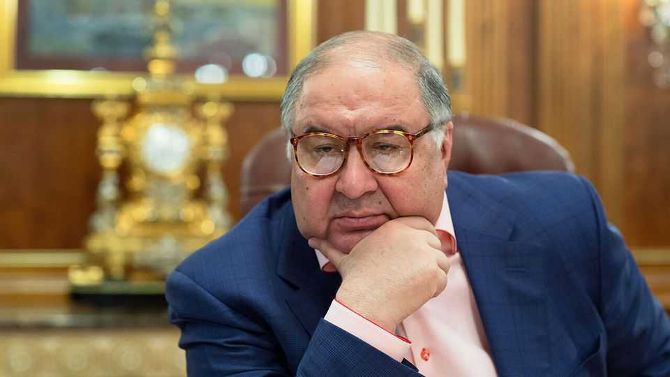
■
法国提出要求后，卢森堡趁机将弗里德曼先生纳入其中，后者正就被冻结资产发起仲裁案件，该案件若胜诉可能迫使这个微型国家向其支付160亿美元。随着整套俄罗斯制裁措施原定于次日到期，除非欧盟成员国全体一致通过，其余国家纷纷妥协。尽管不清楚阿塞拜疆为何如此支持乌斯马诺夫，但据说他与该国强人总统伊利哈姆·阿利耶夫关系密切。不过阿塞拜疆对法国施压的动机，源于两国日益激烈的敌意。法国长期以来支持亚美尼亚，法国总统马克龙在阿塞拜疆近期与亚美尼亚的战争中公开表态支持亚美尼亚。亚美尼亚在2023年战败后，法国开始向其出售武器。■
阿利耶夫先生则反击法国的“阿塞拜疆恐惧症”。其政府成立了巴库倡议小组（Baku Initiative Group，BIG），名义上致力于对抗新殖民主义，但实际上主要针对法国及其曾经的殖民地。亚美尼亚外交与安全政策研究中心的索西·塔季扬（Sossi Tatikyan）表示，该机构是法国和欧盟对阿塞拜疆批评的“认知战”行动的一部分，旨在将这些批评描绘为虚伪。2024年，法国在太平洋的新喀里多尼亚海外领地的独立活动人士被目击手持阿塞拜疆国旗和印有BIG标志的T恤。阿利耶夫先生公开表示支持这些分离主义者，当地智库负责人则称“阿塞拜疆正转向太平洋”。该国还开始将被拘留的法国公民视为谈判筹码。■
自欧盟解除对乌斯马诺夫的制裁以来，至少有一人已被释放：英国-法国双重国籍的马丁·瑞安（Martin Ryan），他因间谍罪被判刑。阿塞拜疆可能释放的另一位法国公民是安纳斯·德拉兹（Anass Derraz），他是一家水务公司的高管。讽刺的是，他被逮捕的罪名是协助另一位俄罗斯寡头规避制裁，据称是与马克龙政府前安全部长亚历山大·贝纳拉（Alexandre Benalla）共谋。德拉兹否认对他的指控。弗里德曼和乌斯马诺夫的例外情况表明，尽管欧洲国家将制裁视为集体安全问题，但它们仍愿意进行交易。其他寡头也将试图讨价还价。为防止这种情况，欧盟同意将当前制裁的续期期限延长至三年，此前仅为六个月。俄罗斯寡头们对此表示怀疑。■
乌克兰外长安德里·西比哈（Andrii Sybiha）谈及“欧盟的屈辱”。法国对欧洲的公信力造成了打击。■
§039 红色警报原题：Red alert! Europe’s populist left is on the march, slowly · 板块：Europe · 栏目：欧洲
对于一个以历史必然性为理论基础的运动而言，共产主义在欧洲的胜利进程实在过于缓慢。自马克思与恩格斯宣告资产阶级的鹅已被烹煮以来，已近两个世纪。然而，资本家们竟设法维持了对经济命脉的掌控，甚至在曾受苏联统治的中欧部分地区重新夺回主导权。左翼民粹主义者的热情并未匮乏，但革命势头的缺失并非源于此。
欧洲二十余个奉行阶级斗争意识形态的政党近期忙于筑起街垒、号召罢工并举办关于殖民主义父权制本质的研讨会。尽管他们不遗余力，但无产阶级专政的实现仍遥不可及。如今若有一股幽灵在欧洲游荡，那便是极右翼民粹主义者——这些反自由主义势力似乎正取得更实质性的突破，动摇既有秩序。然而若被压迫者至今仅能掌控偶尔的委员会会议室，左翼左派的政治派系却正迎来其高光时刻。9月20日，欧洲各地的同志为德国左翼党（Die Linke，该党以红旗为标志）成员埃尔夫·埃拉尔（Elif Eralp）在柏林州选举中拔得头筹而欢呼。
尽管埃尔阿尔普女士（Eralp）出身于从土耳其迁居德国的移民家庭，她只是提出要打击私人房东，将首都打造成“团结之城”，而非直接夺取生产资料，但事情仍值得关注。本月瑞典左翼党（原名“共产党”，1990年改名）在国民议会选举中表现不俗，足以成为左翼联盟获得议会多数席位的关键力量。在欧盟峰会场合，这些政党未来的部长们或许会与西班牙的左翼民粹派政客不期而遇。虽然这并非2010年代末希腊激进左翼联盟（Syriza）执政时期的情形（当时该党将国家推向深渊），但在许多地区，左翼势力正展现出强劲势头。而民粹右翼也拥有足够的政治影响力，足以让中间派政客担忧，若更多此类政党掌权，局势将如何演变。■
相比之下，他们的左翼同行往往只有革命海报从学生会墙面上剥落般的选举威胁。作为欧盟影响力的大致代表，欧洲议会左翼团体在720名议员中拥有46席，落后于三个中间派政党、环保主义者和民粹主义右翼团体。然而，该运动微小的选举成果却掩盖不了其影响力。除了可能成为联合政府的盟友外，它还能起到搅局者的作用。例如在法国，让-吕克·梅朗雄（Jean-Luc Mélenchon）作为“不屈法国”（Unsubmissive France）的强硬领导人，已第四次参选总统，但4月大选中毫无胜算。民调显示他可能在第一轮投票中成为仅次于领先者的候选人。这样的结果对玛丽娜·勒庞（Marine Le Pen）来说将是福音，这位民粹主义右翼人士目前在民调中遥遥领先。她将面临与任何中间派候选人的激烈对决，但很可能会击败梅朗雄。■
他确实有可能改变法国——通过将民粹右翼推上权力巅峰。尽管多数选民仍倾向亲资本政党，但民粹左翼却认为自己掌握了革命的风向。在许多国家，他们借由加沙冲突引发的愤怒情绪获得支持。左翼激进派的集会如今悬挂的巴勒斯坦旗帜比镰刀锤子更多（随之而来的对以色列的攻击有时带有反犹太主义色彩）。这种政治碎片化不仅帮助了勒庞女士等人物崛起，也同时为左翼提供了突破口：过去能将广大选民团结在单一旗帜下的大帐篷政党已不复存在。民粹右翼——其左翼对手称其为“纳粹继承人”，而这些左翼自身往往也是斯大林主义的继承者——的崛起，为欧洲保守派提供了共同抗争的目标。■
欧洲民众对生活成本的担忧始终占据首位，主张房租管制、打破紧缩预算以及对亿万富翁进行修辞性斩首的政党正获得选民的共鸣。但实际的斩首尚需等待。令人遗憾的是，在其他议题上他们却分歧重重。尽管怀有国际主义理想，民粹左翼政党却难以凝聚成超越各自派系的统一体。这在很大程度上源于历史因素：那些对外国人而言仿佛一团模糊的共产主义政党，内部往往错综复杂的派系斗争，列宁主义者与毛主义者、托洛茨基派与后共产主义者相互角力。（2022年法国总统大选中就出现了四个此类派系。）冷战时期，许多共产党简单复制莫斯科的指令，使自身信仰体系呈现出一定连贯性。而如今，这种统一性已大为减弱。■
爱丁堡大学的卢克·马奇（Luke March）表示，欧洲的民粹左翼政党“共享某些核心价值观，但对这些价值观的诠释各不相同”。一些政党仍对俄罗斯赞誉有加——旧习惯顽固地留存着——而另一些则已转向新的方向。欧盟究竟是一个压迫工人的新自由主义俱乐部，还是无产阶级摆脱对帝国主义美国依赖的唯一出路？问两个左翼人士，你可能会得到三个答案。然而，幽灵思想难以彻底消散。对富人而言，真正值得担忧的是，时间似乎站在民粹左翼一边。其在德国和法国年轻群体中的成功尤为引人注目。在柏林，埃拉普（Eralp）获得约45%的35岁以下选民支持，是次席政党的三倍以上。在法国，民粹左翼更是遥遥领先，年轻群体的支持率接近50%。
民粹右翼在农村地区势头强劲，而左翼阵营似乎已赢得城市群体的青睐。不驯服的法国成为众多顶尖大学学生的首选，即未来的精英阶层。随着时间推移，部分年轻人终将逐渐转向中间派——开始缴税就会产生这种效果。若他们始终不妥协，马克思或许还能笑到最后，至少也能开个玩笑。■
§040 AI撰写的演讲正在接管政治领域 英国原题：AI-written speeches are taking over politics · 板块：Britain · 栏目：英国
英国 | 声音机械化的AI演讲 英国议会成员对AI工具的使用热情高涨，但澳大利亚和加拿大议员的使用程度更甚。2026年6月，史蒂夫·耶姆（Steve Yemm）向同僚提出了一个“根本性问题”：“是谁在塑造谁？科技是服务于社会，还是社会正在被重塑以迎合科技公司的利益？”旁观者可能并未意识到，科技对这场特定干预的影响已如此深入。文本检测工具“Pangram”标记出耶姆的演讲完全由人工智能撰写。罕见的是，耶姆公开承认机器合著者的贡献。他告诉《经济学人》：“我的办公室在议会指导方针下，使用通用型AI生产力工具完成多项任务，包括准备演讲。” ■
他并非孤例。我们的分析显示，英国议会辩论中十分之一的发言内容由AI撰写（见图表1，上半部分）。这一比例正在上升，从2024年的接近零增长而来。其他议员则更不愿承认。议会中AI使用最频繁的议员们最常见的反应是惊讶与否认。一位议员，其四分之一的发言似乎由AI撰写，却否认在工作中使用该技术。他补充道，他与议会助理之间“确实有个小玩笑，就是他的写作风格常常用到AI生成的套路”。英国并非特例。在英语国家的立法机构中，AI使用最频繁的是澳大利亚和加拿大议员，其发言被标记的比例是英国的三倍（见图表1，下半部分）。美国众议员也紧随其后。■
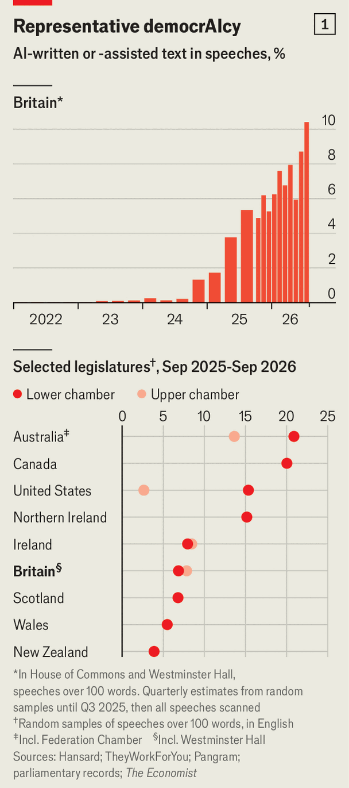
英国上议院尽管常被贴上保守刻板的标签，其人工智能应用程度却远超下议院。人工智能使用最少的立法机构是新西兰议会和美国参议院。9月早些时候，荷兰首相罗布·杰特恩（Rob Jetten）因《 Volkskrant》日报曝光其社交媒体账号上大量内容——包括飞机失事纪念帖和殖民历史道歉文——系AI生成而陷入尴尬。杰特恩对此毫不道歉，并表示将继续使用AI。另一项近期分析显示，挪威议会提出的一成三法律草案包含AI生成文本。目前AI生成的文本仍显生硬，聊天机器人常重复使用相同公式。例如有议员回忆希尔斯堡球场灾难时说：“这不只是纹身，而是一个承诺”；另一议员则评论牙科资源匮乏现象称：“政府并非在改革国家医疗体系的牙科服务，而是在监督其有计划的衰落。”■
AI检测工具不再仅限于识别可疑的文本构造，而是基于庞大的文本数据库进行训练，这些数据库与它们要识别的模型如出一辙。Pangram如今宣称其误判率仅为每24,000份中仅1份。芝加哥大学的研究人员在更长文本的测试中也发现错误率接近于零。在议会数据中，该工具几乎未标记出2022年11月ChatGPT发布前的演讲。超过半数的英国议员几乎不使用AI撰写演讲。但那些使用AI的议员往往非常活跃（见图表2）。许多来自2024年首次当选的新一届议员。使用AI最频繁的议员是保守党成员尼尔·沙斯特里-赫斯特，其过去一年议会发言中四分之三被标记为AI撰写。北爱尔兰独立议员亚历克斯·埃斯顿紧随其后，工党成员耶姆和莎拉·霍尔也位列其中。■
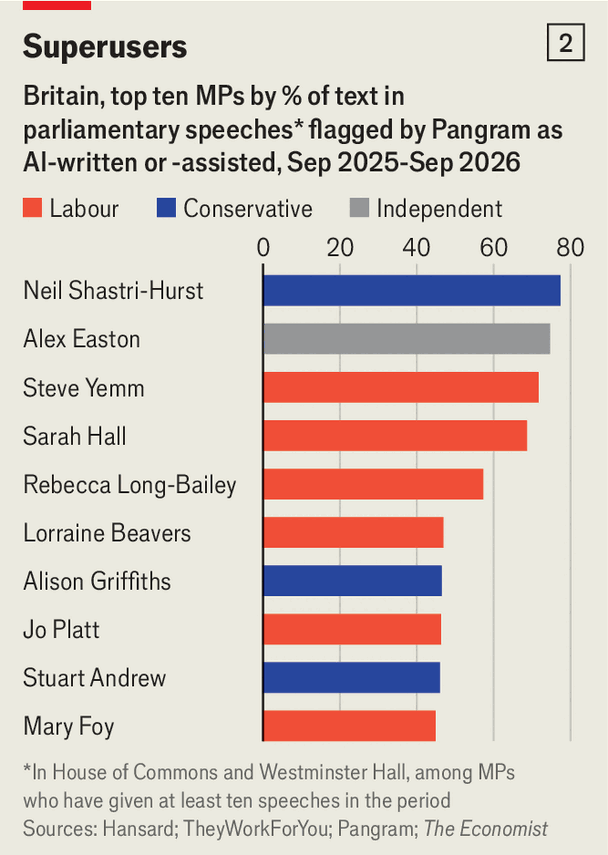
霍尔女士表示，人工智能是“助手而非替代品”，并指出，每节省半小时的演讲稿撰写时间，“我们就能多花半小时支持我的选民”。在反对党议员中，采用人工智能撰写演讲的政党中，自由民主党（Liberal Democrats，见图表3）比例最高。由政党领袖和部长撰写、拥有更充足资源和更受监督的演讲稿团队的演讲，似乎很少由人工智能撰写。凯米·巴登诺奇（Kemi Badenoch）、安迪·伯纳姆（Andy Burnham）、爱德·戴维（Sir Ed Davey）、尼格尔·法拉格（Nigel Farage）、约翰·希利（John Healey）或爱德·米利班德（Ed Miliband）的演讲中均未发现人工智能的实质性参与。这种谨慎态度可能明智。《经济学人》委托咨询公司Public First进行的民调显示，英国选民强烈反对政客使用人工智能撰写演讲，但对营销人员、助理甚至教师使用人工智能则持接受态度（见图表4）。■
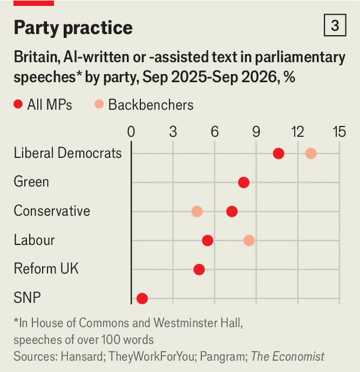
选民对AI在演讲中的使用最为反感，远超其他类型的政论文写作，甚至包括写给选民的哀悼信。次之的是AI撰写的政策文件，这类文件在西敏寺也迅速增多。各党派的支持者都认定其他党派的领导人更可能使用AI进行演讲：绿党、工党及保守党支持者认为改革党领袖法拉奇最有可能使用AI；而改革党选民则认为是绿党的扎克·波兰斯基。由于政客和AI本身都不受欢迎，对结合了这两者的AI演讲的敌意本就不令人意外。但公众的愤怒是可以理解的。选民选举代表进入议会，而“议会”一词源自法语“谈话场所”。这些辩论往往并非雄辩的巅峰。■
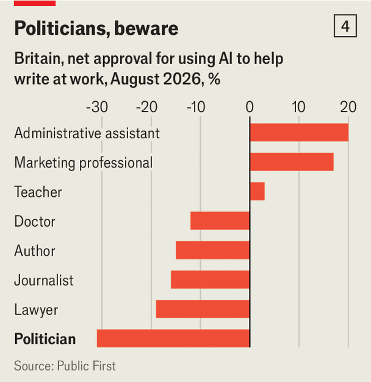
如今，政治人物对在社交媒体上制造话题的注意力过于集中，而实际的演讲稿撰写工作通常由幕僚负责。然而，回避撰写论点的工作可能正在将议员们选举来履行的职责机械化。对“机器人式文风”的担忧并不仅限于政治领域。“粗疏的演讲稿将导致粗疏的政治”，前工党领袖基尔·斯塔默（Sir Keir Starmer）的演讲稿撰写人艾伦·洛克利（Alan Lockey）忧心忡忡地表示。“我们的写作传播着思想，这不是谷歌地图和英国国家测绘局（Ordnance Survey）的事务，这是关乎我们历史文化的根本性工作。”未来学家们曾推测，政治可能是少数难以被人工智能取代的职业，或许像宗教界一样。（尽管今年早些时候，教皇曾敦促神职人员不要使用AI撰写布道词。）人们难道不希望由人类而非机器来代表自己吗？■
但随着时间紧张的议员们转向聊天机器人，人工智能已开始建立据点。■
§041 人工智能常让写作变得更糟原题：AI often makes writing worse. (Even if it makes it better) · 板块：Britain · 栏目：英国
人工智能辅助写作已无处不在。它悄然渗透进精英媒体（《华尔街日报》曾刊发由人工智能撰写的社论），也侵入了顶级出版机构（法国的格拉赛出版社正为一位明星作家辩护，该作家声称自己被错误指控在获奖小说中使用了人工智能）。它出现在英国政客的演讲中（参见前文报道），出现在英国学生的作业中，更在领英（LinkedIn）的帖子中随处可见（据检测工具“Pangram”研究显示，41%的长篇帖子使用了人工智能）。向Gmail请求起草一封情书给伴侣，它会立刻弹出“亲爱的[丈夫姓名]……”。它效率极高。■
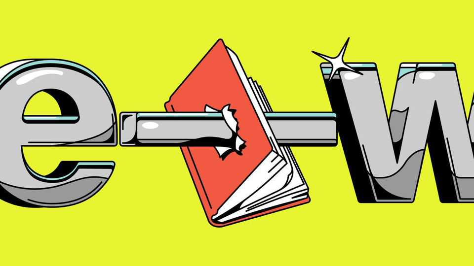
这并不完全是济慈的风格。谁在乎呢？人们的反应表明，人们确实在意。AI识别已演变为一种狂热。散文被审视的专注程度与术语运用，曾专属于拉丁文学。诸如“对仗”“反拨结构”（即“非X，而是Y”的句式）和“三重结构”（如“我来，我见，我征服”）等晦涩的修辞术语，如今在社交媒体用户间被热烈讨论，仿佛西塞罗学派学者般充满激情。文学批评从未如此炽热。破折号，这个最臭名昭著的AI“信号”，似乎正充当另一种修辞手法——“隐喻”，即作家用部分代指整体，如用“车轮”指代“汽车”，或许也用“破折号”指代“人类智力的过时”。玛丽安·沃尔夫（Maryanne Wolf，加州大学洛杉矶分校退休神经科学教授）表示，这并非一场标点符号之争，而是一场“争夺我们心智”的战斗。■
哈佛大学教授史蒂芬·平克认为，人工智能的“前所未有”程度如此之高，以至于我们无法预知它将如何，或是否会影响英语语言。幸运的是，有一份可追溯数年的证据（约1300年）显示什么是优秀的写作。这被称为“英语文学”。千年来英语写作的第一件事是，大多数人对写作都极其糟糕。他们觉得写作如同经历一场漫长的痛苦疾病（正如乔治·奥威尔所言），写出的文字也几乎令读者痛苦。人工智能可能有害；人类往往更糟。丹·布朗写道：“他的眼睛变得雪白，仿佛鲨鱼即将发动攻击。”威廉·华兹华斯则为一把铲子写下颂歌（开篇为“铲子！”）。李·奇尔写道：“它独特得如同你所能想到的最独特的事物。” ■
AI相比之下则能轻松自如地写作，仿佛完成最简单的事。它能在半秒钟内写出一首十四行诗，十秒内完成一篇千字文章，半小时内写出一部奥斯汀风格的小说。尽管AI写作有时质量不佳，但多数情况下并不逊色。宾夕法尼亚州立大学的研究人员最近在一项盲测中对比了两篇短篇小说，其中一篇由人类撰写，另一篇由AI生成，结果显示受访者认为AI作品“质量更高且更具吸引力”。然而英国文学也表明，写作并不仅仅是将文字堆砌在纸页上。作家们指出，写作并非仅仅是纸页上的文字，正如微笑并非喜悦，泪水并非悲伤。真正的写作并非单纯的写作，而是思考；具体而言，是思考：“我究竟在想什么？”牛津大学英语文学教授艾玛·史密斯表示：“你真正了解自己想法的方式，往往是在写下它之后。”■
正如E.M.福斯特笔下一位角色所说：“我如何能知道自己在想什么，直到我看到自己说了什么？”当迈克尔·戈夫（Michael Gove，曾任议员，现为《观察家报》编辑）在内阁任职时，他曾要求下属“以文字思考”。要构建有力的论点，必须“逐层推导”——通过书写来实现。他指出，那些用AI撰写演讲稿的人，实际上是在使用“假币”。但假币总是令人反感，AI写作却并非如此。很少有人会反对用AI来申诉违停罚款、填写税务申报表，或帮助外语使用者润色英语。若公司用AI宣布新的停车政策，也鲜有人在意。但纽约理工学院教授科伦·基克（Colleen Kirk）指出，若该政策本身存在严重问题，而公司却用AI发布道歉声明——“你就有大麻烦了”。你可能因此触发“道德上的厌恶”。
1970年，日本机器人专家森昌弘（Mori Masahiro）指出，机器人越像人类，人类对其的亲近感越强——直到它过于接近人类，亲近感便会转为反感，这就是“恐怖谷”现象。若你在黑暗中与人握手，却意外握住一只义肢，森昌弘写道，你会“尖叫”。如今AI撰写的文字——平淡、塑料感、略带人性——似乎正处“恐怖谷”中的文字领域。它确实让社交媒体频频“尖叫”。因此出现了AI悖论：AI文字更容易生成，且往往优于人类文字。但人类并不喜欢它，使用它可能削弱自身能力，而他人使用它时，人们往往深恶痛绝。这看似荒谬，却令人鼓舞。当人类以自身智慧摧毁智力优势——如在国际象棋、围棋、编程等领域被AI击败——我们仍保有一项优势：我们是人类。■
眼下，人类（往往）更倾向于阅读人类。因此，善用这一点，正如E.M.福斯特也曾说过的“Only connect”（唯有连接）。不妨亲自撰写个人邮件，尤其是寄给你的“亲爱的丈夫”。■
§042 重返聚光灯下 约翰·梅纳德·凯恩斯原题：Re-enter, centre stage, John Maynard Keynes · 板块：Britain · 栏目：英国
“从长远来看，我们终将死去”，约翰·梅纳德·凯恩斯曾如此调侃，对等待经济衰退自然修正的耐心显得不耐烦。这位英国经济学家主张政府应介入解决短期危机。新剧《生活水平》（The Standard of Living）于9月21日在伦敦皇家海集市剧院（Theatre Royal Haymarket）首演，以全新视角审视凯恩斯的遗产。该剧由《亲爱的英格兰》（Dear England）作者詹姆斯·格雷厄姆（James Graham）创作，由尼古拉斯·希特纳（Nicholas Hytner）执导，是一部契合当下的戏剧作品。
凯恩斯（由罗里·金纳饰演）身处布鲁姆斯伯里集团（Virginia Woolf、Lytton Strachey等人）之中，与芭蕾舞者莉迪亚·洛波科娃（Natalia Osipova饰）结婚，尽管他早年有同性恋经历。戏剧描绘了他从财政部任职、《凡尔赛条约》后出版《和平的经济后果》、到推动英国艺术资助体系的职业生涯轨迹，直至1946年去世。凯恩斯主义在当今依然具有现实意义。他主张政府在危机期间应增加支出以提振需求的理论，近年来主导了政策制定，尤其在疫情期间及之后实施的慷慨支持计划中表现突出。然而这一理念也面临批评（正如当年凯恩斯与弗里德里希·哈耶克的争论一样，后者认为政府对经济的控制会引发滑坡效应，最终破坏自由市场）。■
新冠疫情时期的支出使各国背负了巨额债务。而伊朗和乌克兰战争引发的能源价格冲击再次提醒人们，当问题出在供给侧时，单纯的需求侧措施往往力不从心。这一背景正处在一个动荡时代的节点，从经济大萧条到世界大战。凯恩斯认为经济学具有道德使命，旨在提升人们的生活质量。他抓住了机会，帮助塑造战后世界。1944年7月，他率领英国代表团出席新罕布什尔州布雷顿森林会议，该会议创立了国际货币基金组织（IMF）和世界银行。现场戏剧带来即时性和沉浸感。坐在几乎900人的黑暗剧场中，褪色天鹅绒椅上，你仿佛追随一位80年前去世者的生命轨迹。■
凯恩斯反复强调“美好生活”——财富为人类繁荣提供物质前提，但本身并不等同于美好生活。格雷厄姆先生的引人深思的戏剧将让观众思考当下美好生活可能意味着什么。■
§043 英国糟糕的难民安置政策正在伤害自身原题：By housing asylum-seekers so badly, Britain is harming itself · 板块：Britain · 栏目：英国
去年夏天，一名索马里难民被安置在英格兰南部的纳皮尔兵营（Napier barracks），这是一座老旧的军事基地。那里的环境令人沮丧。墙壁油漆剥落，男人被挤在宿舍里，用木板和窗帘隔开。"你几乎忘了隐私是什么。"他说。数月后，他被转移到一处与其它难民合住的房屋，却开始怀念起兵营的一些东西。安置难民本就充满挑战，因为人们普遍对他们抱有恐惧与憎恶。目前约有16,000名难民被安置在酒店，而政府支持的难民总数达93,000人，这些酒店经常遭遇抗议和暴力群体的冲击。
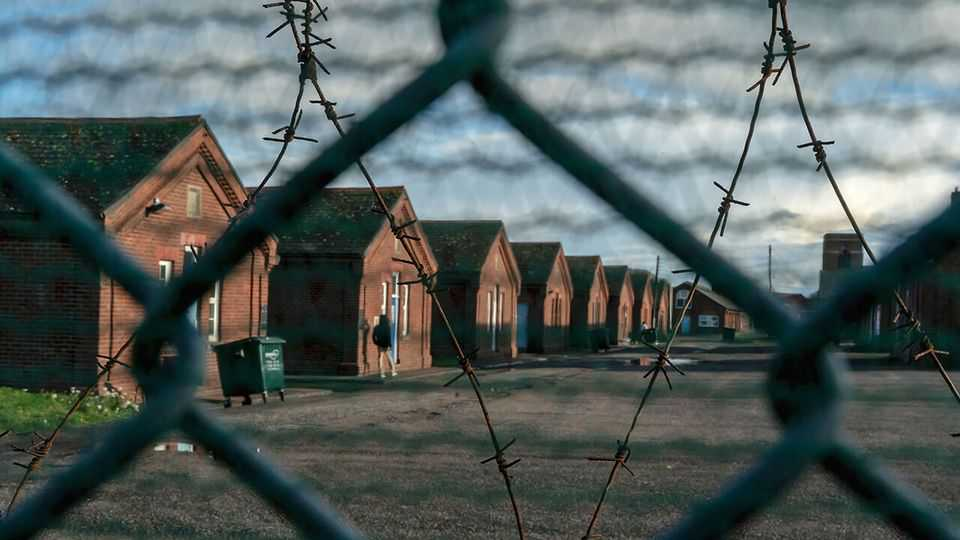
但对寻求庇护者而言，安置条件同样重要。大多数寻求英国庇护的人最终都会留下来，这主要因为政府接受他们的申请，也因为许多申请被拒的人无法被驱逐出境。他们很可能会在未来成为公民。他们在抵达英国后最初几个月的居住安排，可能决定他们能否迅速甚至是否能顺利融入社会，成为有生产力的英国公民。2016年，现任职于乌得勒支应用科学大学的林达·巴克尔（Linda Bakker）曾研究过一项针对英国难民的大规模调查。她与同事发现，在等待申请结果期间居住在政府提供的住宿中的人，其心理健康状况和社会联系程度明显低于那些与家人或朋友同住的人，这一结论在控制了个人特征变量后依然成立。他们的居住条件可能阻碍了他们的适应过程。■
在瑞士等其他欧洲国家，寻求庇护者通常被关押在大型机构中，直到其申请被审核。英国尝试建设此类设施往往以失败告终，部分原因在于政府试图以低成本推进。纳皮尔兵营（Napier barracks）于12月关闭，此前因抗议活动和高等法院的批评而引发争议。2023年，政府耗资1500万英镑（约合2000万美元）将英格兰东部一处名为Northeye的旧监狱改造为安置点。然而该地点被发现存在污染问题，最终无人入住。当地居民普遍憎恶庇护营的设想。9月10日，牛津郡皮丁顿村（Piddington）超过100名女性向议员递交请愿书，反对附近拟建的庇护营。她们写道：“我们熟悉的生活将被摧毁。”随后该村庄以“退出英国”为噱头举行投票。
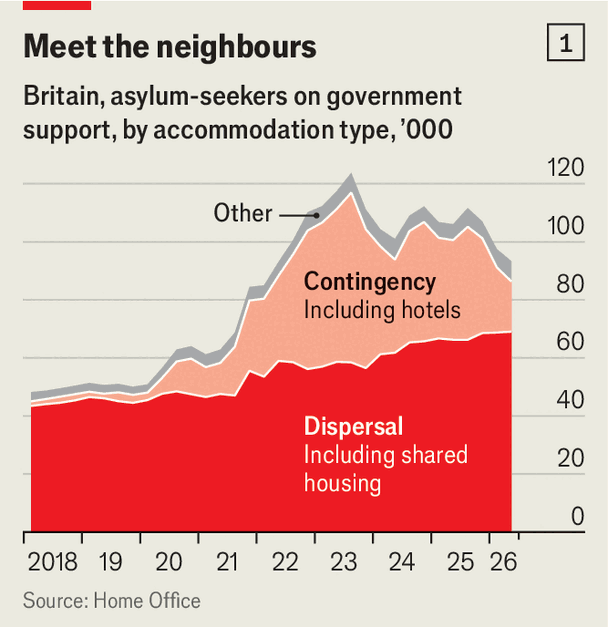
达勒姆大学研究庇护政策的乔纳森·达尔林格（Jonathan Darling）怀疑，难民营的围栏反而加剧了人们对居民的担忧：“或许这些人的处境确实有其原因。”困难导致如今难民营中不足2000人。寻求庇护者表现得出人意料地平和。一些难民营吸引了慈善机构，组织各种分散注意力的活动。被转移至纳皮尔兵营的索马里男子协助翻译工作，并参与了当地自然保护区的活动。他的医疗及其他基本需求得到保障。相比之下，他后来被安置在合租房屋时，不得不四处搜寻家具。但他年轻且性格外向。其他难民营的人员则已放弃希望，他表示。自2020年起，随着积压案件激增（参见图表1），酒店开始收容更多寻求庇护者。所有人都对这种安排深恶痛绝。
他们往往面临难民营最糟糕的方面，如隐私极低和严格规定用餐时间，但缺乏基本服务。在酒店中与一位陌生人同住本是常态，但有时却比与多人同住更糟糕。一位现居伯明翰的阿富汗女性曾数月住在酒店，她描述自己被安排与一位坚持深夜打电话的女性同住。后来又与一名吸毒者同房。酒店的费用也相当高昂。去年国家审计署指出，酒店安置了三分之一的寻求庇护者，却占去了四分之三的住宿开支。与军营不同，酒店易成为极右翼攻击的目标。随着酒店日益不受欢迎且成本高昂，而难民营网络几乎只是内政部的幻想，越来越多安置寻求庇护者的负担正转移到居民区。■
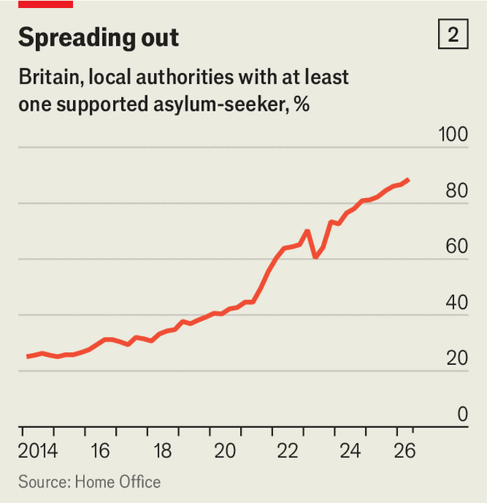
近7万人，且人数持续上升，如今居住在“分散安置住宿”中，通常指共享房屋。这些房屋的分布地点正迅速变化。十年前，寻求庇护者通常被安置在伯明翰、格拉斯哥、利物浦和米德尔斯堡等多元文化城市的较贫困地区。但一些城市曾提出抗议（2015年利物浦市长称其为“庇护者种族隔离”），政策随后改变。如今寻求庇护者遍布全国（见地图）。2014年仅有四分之一的地方当局有分散安置住宿，而如今九成都有。两年内，林肯郡南凯斯特文区的农村地区从3人增至279人。一些农村地区的寻求庇护者似乎被遗忘。一名也门移民被安置在林肯郡的一个村庄，他形容那里为“世界尽头”。■
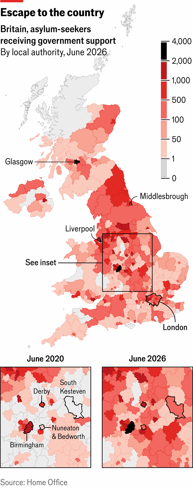
他无法负担村里的杂货店（寻求庇护者通常每周可领取49英镑生活费，若住酒店并由酒店提供餐食则为10英镑），只能每周坐一次公交车进城。他难以与英语为母语的邻居交流，对方似乎对他漠不关心，也难以与来自越南的室友沟通。“这让人发疯，”他说。英国城市花了数年时间才建立起寻求庇护者依赖的律师、顾问等服务集群。德比市（位于英格兰中部）自2002年起成为“分散安置地区”。德比社区行动组织（Community Action Derby）的安德鲁·杰克逊表示，到2015年左右，该市已形成完善的寻求庇护者组织网络。但乡村地区可能永远无法拥有这样的网络。目前，被安置在小城镇和村庄的寻求庇护者只能前往像德比这样的城市寻求帮助，前提是他们能负担得起前往的费用。一些小城镇甚至已对寻求庇护者表现出敌意。■
英国伯明翰附近的努恩顿和贝德沃思区（Nuneaton and Bedworth）三年前仅收容过6名寻求庇护者，而截至去年6月统计时已增至314人。去年九月，地方议会以微弱优势否决了反对接收任何难民的决议。难民事务协会（Asylum Matters）的露西·卡尔维指出，难民在刚抵达且显眼的地区更容易遭遇敌意，因为当地其他少数族裔人口稀少。当难民获得难民身份后试图在小城镇和乡村定居时，还会面临其他问题——他们有时会这么做，部分原因在于城市外更容易找到公共住房。此类地区可能缺乏英语教学资源。小城镇往往缺乏少数族裔和移民，原因在于当地就业机会有限，而难民通常面临经济困难。■
即便在英国生活多年，他们仍比本地居民或其他移民更难找到工作，收入也明显低于对方。将他们分散至远离城市地区很可能会使问题恶化。在2022年出版的著作《Streets of Gold》中，经济学家Ran Abramitzky和Leah Boustan指出，美国移民之所以能成功，很大程度上是因为他们往往定居在就业机会丰富的地区。寻求庇护的英国移民大多对当前处境感到满意，渴望尽快恢复正常生活。尽管面临住房问题，伯明翰的阿富汗女性表示，这里的生活远好于在塔利班统治下的日子。但英国人应有更高的标准。政府正在推行的政策正在使未来同胞陷入贫困。■
§044 英国财政大臣称经济已触底反弹 希利的炒作原题：Britain’s chancellor claims that the economy has turned a corner · 板块：Britain · 栏目：英国
约翰·希利决心展现乐观态度。这位新任财政大臣从前任拉切尔·里夫斯的失误中吸取教训。在上任初期的讲话中，里夫斯抱怨自己继承了自二战以来最糟糕的经济局面，令选民感到沮丧。希利则更加乐观。在最近的讲话中，他坚持认为英国“已触底反弹”。他指出，英国上半年G7国家中增长最快，甚至生产率“终于开始回升”，结束了自2008年以来的停滞。他是否正确？最新数据确实令人鼓舞，但目前还无法确定这种转变是否持久。
英国国家统计局（Office for National Statistics，ONS）报告称，英国经济在2026年上半年增长了1%。这一增速超过了G7其余主要发达国家（美国以0.9%的增速排名第二）。英国经济活力的部分原因可归因于技术进步：截至7月底的七个月内，计算机相关服务增长了8.9%，计算机及电子产品产量则攀升了10.6%。企业投资也呈现强劲增长。不过，这些数据可能受到季节性因素的影响。ONS通过平滑每年重复出现的波动——例如圣诞购物热潮——使统计数据能更准确地反映基础GDP。然而，疫情以来，英国的季节性规律已发生变化：更多经济活动集中在年初，尤其是企业投资。■
英国国家统计局（ONS）的统计方法尚未完全跟上，这使得上半年的增长数据看起来比实际更好。对全年增长的预测显示，表现将不如上半年那样亮眼（但依然稳健）。我们的姊妹公司经济学人智库（The Economist Intelligence Unit）预计，英国2026年GDP将增长1.2%，低于美国2.1%的预期，但仍高于德国（1%）或法国（0.6%）。这意味着第二季度表现将明显疲软。这在一定程度上是季节性因素的反向影响，但也反映了伊朗战争带来的冲击。油价持续高于每桶100美元，能源成本上升将对经济造成沉重压力。从长远看，英国的繁荣取决于其生产率。ONS最近承认，2008年后每小时产出的增长速度比此前预估更快，但增速仍大幅放缓，导致工资停滞。■
财政大臣或许可以为产出每小时增长而跳脚。这是否属实？英国国家统计局（ONS）的 headline 数据实际上显示，2024年中至2026年中期间，产出每小时平均每年下降0.2%。但这些数据依赖于不可靠的劳动力调查（Labour Force Survey）的员工数据，该调查一直面临低回应率问题。若查看税务记录——即使ONS现在也推荐使用——则迹象真实。政策研究中心（Resolution Foundation）利用税务数据估算，2024年中至2026年中期间，生产率年均增长1.1%。这比前两年的年均下降0.7%有显著改善。信息技术的进步占了近期增长的近一半。那些急于将所有功劳归于AI的人应当谨慎。■
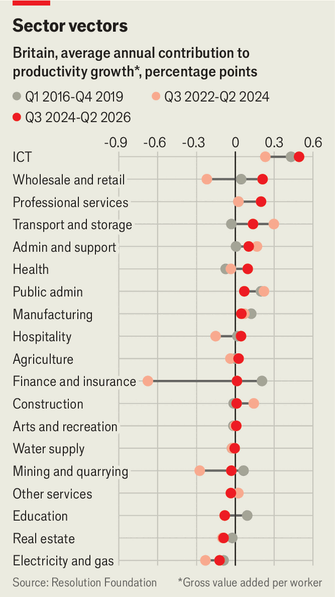
计算机相关岗位长期以来一直是英国生产率增长的引擎；但该行业当前的贡献与2010年代末期相比并无显著提升。过去两年间，零售和餐饮等领域的变化尤为显著（见图表）。夸耀这一进步的工党政客们却对背后原因保持沉默。牛津经济研究所的迈克尔·桑瑟斯指出，劳动生产率的提升主要源于员工数量减少而非产出增加。批发和零售业在过去两年内已裁员逾12万。最低工资上调和更高的雇佣税推高了劳动力成本，企业因此用机器和技术替代人力。这对生产率统计数据有利，却与工党承诺保护就业岗位的承诺相悖。
希利先生面临的最终考验并非GDP或生产率是否增长，而是民众生活水平是否改善。财政部独立编制的预测显示，今年实际家庭可支配收入平均将保持不变。财政大臣10月28日公布的预算报告中，不仅需要阐述增长计划，还需说明这种增长如何切实提高民众收入。工党能否连任，将取决于此。■
§045 英国自由民主党：英国毫无意义的政党原题：The Liberal Democrats are Britain’s pointless party · 板块：Britain · 栏目：英国
“多年来，我从远处一直尊敬自由民主党人对怀疑精神的苏格拉底式坚持。”艾米丽，一位新加入自由民主党的成员在本周布莱顿年度大会上的发言，既体现了该党的吸引力，也暴露了其存在的问题。该党赢得席位，其“对怀疑精神的坚持”在充满错误确定性的时代颇具吸引力。但这种坚持并非权力议程。两年前，自由民主党在爱德·戴维爵士领导下重新成为议会第三大党，他们赢得的72个席位是该党历史上最佳战绩。
对2015年濒临灭绝的政党而言，这是一次令人欣慰的转机。工党在议会中获得压倒性多数，尽管自由民主党（Lib Dems）的选票支持率高，却已沦为无关紧要的配角。与此同时，民粹主义政党——右翼的Reform UK和左翼的绿党——主导了网络舆论。More in Common这家民调机构最近组织的一场焦点小组讨论中，一位伦敦市民Hannah表示：“我认为我的算法已经判定我这辈子不需要Ed Davey，因为他根本没出现在我的屏幕上。”由于自由民主党毫无影响力，党内人士开始躁动不安。在布莱顿，议员和活动人士抱怨该党未能掀起波澜。“稳定是好事，但你得对稳定有所作为，而我们什么都没做，所以很无聊。”一位议员抱怨道。■
来自英格兰南部以外地区、不属于自由民主党传统选区的成员们质疑，为何该党未能像过去那样从工党普遍不受欢迎中获益。他们确实有道理。自由民主党在上次大选中获得12%的选票，此后民调也一直维持在这一水平。选民转换支持的速度达到前所未有的快，将某些政党推高，又将另一些政党拉低——唯独自由民主党始终未被撼动。许多党内活动人士始终抱持悲观态度。自由民主党“欢乐俱乐部”（Glee Club），一个低音质合唱活动，至今仍在党代会最后一天举行，仍保留着抱怨1988年自由党（英国自由贸易传统政党，曾主导英国政治）与稍左倾的社会民主党合并的歌曲。
本报当时报道合并谈判期间，自由民主党强硬派曾表示“宁愿加入一个毫无希望的政党”也不愿接受政治妥协。这种情绪至今仍存在于许多忠实支持者之中。他们应该振作起来，他们的处境并不算太糟。自由民主党在地方选举中持续取得进展（在伦敦富裕的郊区里士满，他们于5月赢得了全部54个市议会席位）。精密的逐选区民调显示，该党具备在大选中重现上次创纪录表现的实力。该党已形成一套成熟高效的运作机制，即便在全国民调中处于不利地位，也能在选举中发挥强大作用。真正困扰自由民主党的问题，也是他们应更加担忧的，是他们似乎对所追求的权力缺乏明确的使用规划。
他们擅长选举，却毫无从政打算。该党宛如一台被编程来击败人类的电脑：它在棋艺上日益精进，却始终无法理解为何要参与这场游戏。埃德爵士抛出一揽子政策构想——有的尚可，有的却令人作呕——这些想法之间缺乏任何内在联系。在党代会召开前，他最大的承诺是大幅削减燃油税，这是一项对 motorists（车主）的粗暴施舍，对自由民主党标榜环保的虚伪性构成嘲讽。其他政策更是毫无意义：该党最近要求立法规定，每赛季必须将英超联赛的10场比赛（共380场）强制转播至免费电视频道。这可称之为中产阶级民粹主义。这对那些期待真正自由主义选项的选民而言，无疑是令人沮丧的。■
该党确实拥有深厚的激进中间路线传统。1990年代的领导人帕迪·阿什当（Paddy Ashdown）曾猛烈抨击英国公共服务中“官僚主义的黏腻拥抱”（情况反而愈发严峻）。2004年，一位冉冉升起的新星提出了诸多重塑国家的创新构想：引入地方所得税、削减白厅部门数量、向青少年发放教育券而非通过中央政府拨款资助教育。这位思想新颖的改革者名叫爱德·戴维（Ed Davey）。并非全然消极。9月22日闭幕式上，爱德爵士提出了减税政策，包括对近年来被保守党和工党政府重创的高收入群体也予以减税；他此前曾未能明确说明自己希望国家扩大还是缩小。■
他正逐步接近一项大胆的重返欧盟政策，这一举措曾让党内领导层犹豫不决，担心可能疏远部分选民。然而，仍有漫长的路要走。自由民主党对教育、医疗、国防或科技政策的特色自由主义方案仍缺乏明确表态。不禁让人质疑：谁还关心？毕竟，该党从未如此成功，却也从未如此无关紧要。然而，自由民主党仍应有其存在意义。随着英国政治格局动荡，而埃德勋爵在选战策略上展现出的掌控力似乎稳固，该党有望在十年内成为联合政府中的次要伙伴。■
正如自由民主党（Liberal Democrats）最具思想深度的经济学家Tim Leunig所言：“如果你离权力近到我们这样的程度，就必须认真对待它。”下棋的计算机需要具备意识。自由民主党必须明确自身存在的意义。■
§046 中等强国如何重新审视间谍活动 国际 间谍博弈原题：How middle powers are rethinking espionage · 板块：International · 栏目：国际
抵达基辅，与乌克兰领导人会面。但他从未见到他们。次日清晨约4点，俄罗斯军队突然向基辅发起进攻。卡赫不得不在盟友情报人员的帮助下，从酒店撤离，穿越涌向波兰的难民人群。他体现了大多数欧洲情报机构在冷战结束以来最大危机中的无能为力。法国情报部门也误判了入侵行动，迫使军情局长埃里克·维达乌（Eric Vidaud）辞职。■
他们曾不信美国和英国关于俄罗斯即将发动攻击的警告，却也无力自行核实。如今，他们希望不再如此。中等强国民主国家正重塑情报机构以应对更敌对的世界。最显著的例子是那些数十年来忽视间谍活动的国家，它们曾依赖和平主义、中立、地理位置偏远或山姆大叔（Uncle Sam）的保护。日本正在几乎从零开始构建情报体系。瑞典正创建新的文职外务情报机构。加拿大也在讨论是否设立类似机构。德国希望赋予其情报机构更广泛的权限。荷兰则计划赋予本国情报人员更多权力。■
首先，情报人员正与外国盟友展开更紧密合作。法国对外情报服务局（DGSE）负责人尼古拉·勒纳（Nicolas Lerner）表示：“欧洲情报机构间的合作已达到前所未有的水平。”此次改革的主要目标之一是应对专制国家的间谍活动，另一目标则是遏制俄罗斯的“灰色地带”攻击，例如最近在莱比锡机场发现的装有炸药的无人机。鉴于对俄罗斯可能袭击北约或中国可能入侵台湾的担忧，各国也需要提前预警战争的迹象。若战争爆发，各国更需要精准的军事情报。贯穿这一切的是特朗普总统对盟友的轻视。他去年暂停向乌克兰提供情报的举动，尽管短暂，却已引发警报。■
至少有一位盟友正在制定应对美国切断情报共享的预案，一位前美国情报官员表示。事实上，一些人担忧美国自身可能成为直接威胁，鉴于特朗普先生的贸易战以及他关于吞并加拿大、冰岛和（直到最近）格陵兰的言论。英国曾协助构建与美国、澳大利亚、加拿大和新西兰共同组成“五眼联盟”的情报共享体系，其情报机构至今仍被视为间谍活动的精英阶层。法国《观点》杂志（L’Express）最近对间谍和专家进行的调查中，英国军情六处（MI6）被评定为欧洲最高效的情报机构，紧随其后的是法国国家对外安全总局（DGSE）（见图表）。贵族阶层赞赏英国将人力情报（HUMINT）与信号情报（SIGINT）及其他多机构信息融合的能力。■
跨部门团队专注于俄罗斯，被部分人戏称为“俄罗斯之家”（源自约翰·勒卡雷小说的隐喻），受到特别称赞。落后者包括奥地利。日本在二战结束后失去了大量情报技巧，其情报机构无法在国外秘密行动，追查外国间谍时也受到诸多限制。各情报机构间情报共享杂乱无章，依赖纸质文件传递。名义上统管这些机构的内阁情报与研究办公室（CIRO），通常由前国内安全部队官员担任负责人。一位日本作家曾将其比作“家猫”，与CIA的“老虎”形成鲜明对比。■
日本今年夏天成立了国家情报委员会，作为其情报工作的“控制塔”，并设立了强化版的国家情报局（原为CIRO），以整合所有情报来源，类似澳大利亚国家情报办公室，正在协助其转型。下一步，日本政府计划设立一个完整的外国情报机构。同时，日本正起草新的国内反间谍法律，以应对来自中国、俄罗斯和朝鲜日益增长的威胁。此前的努力因日本帝国时期秘密警察的历史遗留问题而受阻。同样受纳粹时期盖世太保和共产主义斯塔西记忆束缚，德国联邦情报局（BND）不过是一个光鲜的智库。■
德国联邦情报局（BND）的间谍无法闯入场所，前BND官员格哈德·康拉德（Gerhard Conrad）表示，“针对神职人员、律师、医生或记者的通讯一直被禁止”。议会本周将就一项改革进行讨论，该改革旨在增强BND不仅监控，还能采取行动的能力。该机构将被赋予黑客攻击对手甚至在国外使用“动能手段”（不故意伤害人员）的能力，以让对手“感受到痛苦”，BND负责人马丁·雅格尔（Martin Jäger）如此表述。若改革通过，康拉德表示，“我们将从素食者转变为可能的弹性素食者，在食肉者的世界中生存。”与德国类似，瑞典也未能预见到俄罗斯的入侵。“系统能够捕捉能力，却无法捕捉意图”，前瑞典首相卡尔·比尔特（Carl Bildt）如此评价。■
应比尔特先生（Bildt）的建议，瑞典正在创建一个新的外国情报机构，该机构将于明年开始运作。比尔特解释称，该机构将从秘密、商业和公开来源获取信息，以“拓宽我们的视野”。加拿大议会委员会在多次冲击后研究是否需要设立专门的外国间谍机构，包括2023年一名锡克教活动人士被疑似印度特工谋杀，以及近期特朗普的敌意态度——其官员私下威胁将加拿大驱逐出五眼联盟（Five Eyes）。加拿大主要情报机构CSIS主要专注于国内威胁，仅有有限权限收集海外人力情报（HUMINT）。外交部的“全球安全报告计划”虽收集部分信息，但其在外交与情报之间的模糊定位已引发问题。■
荷兰则于2002年将国内与国外情报职能合并至国家情报与安全局（AIVD）。AIVD局长西蒙娜·斯密（Simone Smit）表示：“我们需要灵活且迅速行动，这是我们作为小国的优势之一。”一项草案法案将赋予情报人员每年针对“明显对手”采取行动的授权，无需每项行动都事先获得批准。如同军事重整，各国提升情报能力既为向美国证明自身价值，也以防美国转向时能自我保护。情报资源还能让国家通过与其他国交换情报获取关键利益。在亚洲，合作伙伴期待日本能“对中国进行情报收集，尤其是人力情报（HUMINT）”，东京日本大学的古谷健（Kotani Ken）表示。有朝一日，日本或许能成为“第六只眼”。情报主管们强调，即便政治与贸易紧张局势加剧，与美国的情报合作仍将持续强化。■
然而，一些迹象表明局势存在隐患，从对情报“政治化”的担忧，到欧洲国家承认在信息共享上有所保留。美国情报官员的大量流失使得维持长期关系变得更加困难。美国情报对盟友仍至关重要，尤其是在预警恐怖袭击阴谋方面。正如前美国情报官员大卫·乔伊（David Gioe）所言：“如果合作破裂，美国会受损，但欧洲将遭受更大损失。”一些人呼吁加强欧洲一体化。2024年，前芬兰总统萨利·尼尼斯托（Sauli Niinisto）提议在欧盟层面建立“一个全面的情报合作机构”。荷兰政府和德国国防部长也呼吁设立欧洲版的“五眼联盟”（Five Eyes）。然而，说起来容易做起来难。情报共享越广泛，信息越难保持机密。■
五眼联盟（Five Eyes）是一个拥有共同语言和共同作战与间谍历史的70年历史联盟，其他国家难以轻易复制。然而紧迫需求能够克服信任缺失，正如反恐合作所展现的那样。如今欧盟情报机构正不断整合成员国的分析成果，尽管布鲁塞尔的管辖权争执仍是头疼问题。谈及原始情报共享，前德国联邦情报局（BND）副主管阿恩特·弗莱特·冯·洛林霍芬（Arndt Freytag von Loringhoven）表示：“达到北约或欧盟级别的情报共享几乎不可能。”欧洲各国对俄罗斯威胁的认知存在差异，反间谍风险也限制了敏感情报的共享。■
尽管如此，情报主管们表示，欧洲机构的“核心小组”现在联合行动，渗透俄罗斯和中国等强硬目标——共享情报评估并协调行动。“新意在于‘共同使命’的概念，”一位情报主管解释道。“我们根据谁是最佳专家来分配任务：你负责一个角度，我负责另一个角度；之后再共享成果。”情报主管们对这一切是否可能催生一个欧洲版的“五眼联盟”持矛盾态度。伦纳先生（Mr Lerner）认为这种可能性不能完全排除。如果真的发生，英国是否可能同时成为美国“五眼联盟”和一个假设的“欧洲五眼联盟”的成员？这一切引发了一个尴尬的问题：如果美国对盟友的安全构成威胁，他们是否应该监视美国？按惯例，他们不应互相窥探。■
然而，2013年，美国国家安全局（NSA）承包商爱德华·斯诺登（Edward Snowden）曝光了美国信号情报机构（SIGINT）的大规模监控计划，揭露美国和英国曾监控包括时任德国总理安格拉·默克尔（Angela Merkel）在内的电话通话。（德国人可能也监听过巴拉克·奥巴马（Barack Obama）。）特朗普曾抱怨英国政府通信总部（GCHQ）曾监听他——该机构予以否认。前美国情报官员表示，除了五眼联盟（Five Eyes）外，他推测大多数国家至少会针对美国开展一些情报收集工作，而在动荡时期，这种努力会增加。他指出，这类工作本身难度很大。“情报工作仍是一项不完美的技艺，有着漫长的历史错误记录。”■
强大的情报机构也可能犯下令人震惊的错误（例如美国和英国在2003年对伊拉克的评估）。但面对敌对的俄罗斯、拥有核武器的朝鲜以及迅速武装的中国，中等国家终于开始建立自己的能力，以判断哪些威胁是真实的。■
§047 唐纳德·特朗普放弃对格陵兰岛的主权要求，但损害已造成原题：Donald Trump drops demands to own Greenland, but the harm has been done · 板块：International · 栏目：国际
北极地区如今对美国及其盟友来说更加安全了。必须给予唐纳德·特朗普总统（自诩为和平主义者）充分的肯定。毕竟，他已消除了格陵兰岛——这片广阔且难以防守的岛屿——面临即刻入侵的阴影，该岛守护着北约的北极地区。从长远来看，特朗普政府与丹麦及格陵兰于9月18日宣布的新防务协议标志着对以往条约的适度进展。
这将使美国更容易加强在该岛的军事存在，并遏制中国、俄罗斯等对手对格陵兰领土的蚕食。该协议将于纽约联合国大会期间由美国、丹麦和格陵兰签署。特朗普不应期待因此获得诺贝尔和平奖。当然，正是他给格陵兰投下战争阴影，威胁要吞并该岛，除非他能买下它。在这些愤世嫉俗的年代，当战争言论最终被证明不过是虚张声势时，确实令人感到宽慰，但这并不足以成为颁发奖章的理由。按照特朗普此前一贯的标准，这项协议仍显不足。他屡次将美国在格陵兰长达数十年的驻军比作房地产开发商的逻辑，包括在1月达沃斯论坛上发表的演讲，令世界领导人感到震惊。
在世界经济论坛的演讲中，他公开嘲讽前任总统哈里·杜鲁门，指责其在第二次世界大战结束时将格陵兰岛归还丹麦，终结了美国对这座岛屿的军事占领——该占领旨在防止其落入纳粹德国之手。“我们当时做这件事有多愚蠢？”特朗普怒吼道，指责现代丹麦缺乏感恩之心。他坚持认为当时自己必须完全拥有格陵兰岛，包括所有权证书。如果爆发战争，“谁他妈愿意为一份许可协议或租赁合同而战斗？”总统如此质问。客观而言，此前的美国总统也曾有过类似担忧。1946年，杜鲁门政府官员和军方高层曾认真考虑以1亿美元黄金（约合今日171亿美元）购买格陵兰岛，或用其部分领土换取阿拉斯加的部分地区。
冷战时期的美国在丹麦拒绝后，最终达成一项条约，允许其在格陵兰岛维持基地，但需征得丹麦同意。杜鲁门及其继任者认为，美国避免参与早期大国的殖民土地掠夺具有价值。如今，美国却有一位总统，大谈要在西半球乃至中东夺取领土。对其他国家政府而言，幸运的是，他至今仅满足于幻想——在人工智能生成的征服图像中，他将星条旗插上遥远土地，这些图像由白宫社交媒体团队批量发布。在格陵兰岛的实际案例中，他仅接受了重新措辞的租赁条款，隐晦地放弃了对所有权的要求。特朗普称这项新协议是“美国梦成真”，称美国现在掌控了格陵兰岛的安全及“所有其他需求”，并永久享有这些权利。■
他补充说，美国在格陵兰建立“大规模军事存在”不会产生任何成本。然而，他所说的具体含义尚不明确，因为人口仅600万的丹麦显然不会承担美国北极驻军的全部费用。至少达成了一项协议，这与特朗普将乌克兰、伊朗和加沙的谈判交由其地产开发商同行史蒂夫·威特科夫和贾里德·库什纳处理的冗长谈判形成鲜明对比。这些特使奉行的原则是，外交争端本质上是关于土地和资源的争执，可通过为双方提供有利可图的机会来解决。早期一些特朗普阵营人士曾高调谈论格陵兰冻土层下埋藏的矿产和石油，却忽视了北极行动高昂的成本警告。■
但最终达成的协议是数月秘密外交的结果，美国方面由马可·鲁比奥（Marco Rubio，美国国务卿兼国家安全顾问）及其副手迈克·尼德汉（Mike Needham）监督。特朗普并未对谈判过程发表全程评论，也未提及可能获得的十亿美元利润。鲁比奥似乎在恳请特朗普以低调专业精神取得胜利并就此收手，他表示：“这项协议永久且彻底地解决了我们在格陵兰岛的国家安全关切。” 不久前，丹麦人曾是欧洲最亲美的国家之一。然而在一项今年5月的民调中，仅有7%的受访者将美国视为盟友。丹麦政府今年表示有意加入其他北约欧洲成员国，接受法国核威慑力量的保护提议。■
不久之前，奉行大西洋主义的丹麦绝不会加入这种法国式的方案。但格陵兰危机让欧洲各国政府决心减少对多变的美国的依赖。当被问及特朗普是否是欧洲武器的良好推销者时——正值北约成员国对购买美国武器犹豫不决——一位北欧总理回答：“绝对如此。”特朗普的离任也未必能治愈所有伤痛。副总统J.D.万斯竭力为老板辩护，称丹麦是“糟糕的盟友”，这让丹麦人难以接受，因为丹麦人仍记得其军队在阿富汗和伊拉克与美国并肩作战时所承受的惨重损失。丹麦从中吸取了痛苦的教训：新一代的美国领导人中包含许多像万斯这样的退伍军人，他们认为反恐战争是一场灾难，对那段共同经历毫无眷恋之情。
美国对在北极地区建立军事基地的渴望（以及欧洲对美国帮助遏制俄罗斯的迫切需求）平息了这场特定的总统怒火。但讽刺美国为何应捍卫外国领土的质疑声无法被消除。跨大西洋关系正变得愈发冷淡且交易化。特朗普希望格陵兰成为其遗产的一部分，这终将实现。但不会如他所想象的那样。■
§048 海湾地区的商业正在缓慢复苏原题：In the Gulf is making a slow recovery · 板块：Business · 栏目：商业
作为世界上最高摩天大楼和最大购物中心的建造者，迪拜房地产公司（Emaar Properties）体现了迪拜的雄心与韧性。近20年前，全球金融危机恰好在828米高的哈利法塔即将开门之际袭来。迪拜房地产公司的美国子公司申请破产保护，集团利润骤降，债务激增。五年前，新冠疫情暴发期间，迪拜房地产公司出手相助其购物中心业务，收购了少数股东股权。今年2月，海湾战争爆发，恰逢迪拜房地产公司正享受创纪录的利润。■
这家企业不仅押注迪拜房地产市场，更押注其整体经济，却成为本地股市的最大输家。冲突爆发后的一个月内，其股价下跌约四分之一，而本地股市指数则下跌六分之一。为展现信心，阿联酋（United Arab Emirates）总统穆罕默德·本·扎耶德·阿勒纳哈扬（Muhammad bin Zayed al-Nahyan）于3月2日走进迪拜购物中心。六个多月过去，迪拜购物中心母公司Emaar的创始人穆罕默德·阿勒巴尔（Mohamed Alabbar）同样毫不在意。“历史表明，每两年半就会有一次洗牌，”他说。为证明自身实力，公司于9月16日宣布发放特别分红44亿迪拉姆（约合12亿美元），相当于去年常规分红的一半。但阿勒巴尔表示：“我们无法改变地图。”Emaar及其他本地企业正不得不适应新的不确定局势。■
对于那些有条件的人而言，这意味着寻求海湾地区以外的机会。尽管迪拜的日常生活已基本恢复正常，但和平协议的迹象——以及全面的商业复苏迹象——却寥寥无几。8月，整个阿联酋的非石油私营企业报告称出口额较7月有所增长。向商店和其他商业活动的供应中断减少，但就业人数却下降了。Spinneys超市（主要服务富裕外籍人士）在截至6月的三个月内销售额小幅下滑。在2026年前六个月，Talabat在海湾地区的税前利润同比减少了约30%。据称，酒店业工人仍处于停薪留职或减薪状态。多家酒店和餐厅已完全或部分关闭进行翻新，掩盖了实际入住率的下降。■
一些房地产开发商，包括阿联酋的穆罕默德·阿勒弗图阿米集团（Majid Al Futtaim），因建材成本上涨而推迟了单位完工。其他海湾国家的经济状况更不乐观。卡塔尔8月液化天然气出口量仅为战前水平的十分之一。巴林和科威特的强劲复苏仍遥不可及。难怪阿尔巴巴先生（Mr Alabbar）开始将目光投向海外。战前他已投资意大利、东欧和印度的项目（通过私人控股公司鹰山公司（Eagle Hills），他还曾同意与唐纳德·特朗普女婿贾里德·库什纳（Jared Kushner）合作，在贝尔格莱德建造特朗普大厦，但库什纳去年因塞尔维亚部长腐败指控和抗议活动而取消了该项目）。但易达集团（Emaar）的国际项目目前仅占其营收的5%。
拓展海外市场并不意味着规避风险：今年5月，Emaar（迪拜房地产巨头）在叙利亚加大投资力度，退出长期合资企业以独当一面，计划在该仍具波动性的国家投入高达190亿美元。Eagle Hills则计划在马尔代夫启动120亿美元项目。Alabbar（阿联酋富豪）对两国的布局可能均包含社会住房项目，该国长期存在短缺。在印度，他正关注纳维孟买（Mumbai近郊卫星城）等区域。同时，他还在埃及开发住宅、零售与娱乐设施。其他阿联酋企业也有类似构想。食品饮料公司Agthia Group将目光投向埃及和沙特阿拉伯扩张。阿联酋最大贷款机构FAB计划在香港扩大布局，以期在中国市场拓展更多业务。已有海外业务的区域企业发现，这种对冲策略成效显著。■
在埃及扩张之际，Talabat的销售额大幅增长。但并非所有企业都有这样的选择。特别是小型企业，缺乏在海外进行大额支出的能力，尤其是在不确定时期。即使没有战争，迪拜也可能面临房地产市场放缓。在战争之前，Alabbar表示，他当时正在密切关注房地产市场的供应情况。分析师曾预测将出现大量新房供应。但他认为，从长远来看，几乎没有理由相信主要来自新兴经济体的人群会停止到来——并占据他建造的房屋。今年上半年，迪拜发放了超过100万张居留许可，续签了90万张。还另外发放了6.6万张长期签证：尽管低于2023年的创纪录速度，但仍是可观的数字。
然而，很难看到亿万富翁们很快重返市场购买豪华别墅，也难以预见游客如战前般涌入酒店、掏空钱包的场景。许多企业别无选择，只能将目光投向海外市场或保持观望态度。大量企业手握充足现金储备，已从过往危机中汲取经验。观望与等待或许将成为迪拜的新常态。■
§049 油轮运费冲上高峰原题：Tanker rates are on the crest of a wave · 板块：Business · 栏目：商业
油轮运费正冲上高峰。海湾地区的紧张局势使原油运输成本飙升。
超大型原油运输船（VLCC）的用途无需多言，它们可装载200万桶原油。然而，目前租用一艘VLCC的费用却令人咋舌。Lloyd’s List Intelligence的格雷格·米勒表示，海湾战争已影响石油产量，但运价“远超油轮历史上的任何水平”。当前平均每日现货运价约为65万美元，比1月时高出六倍，比9月初高出近三倍。少数穿越霍尔木兹海峡的船只每日收入已突破100万美元。
■
原因在于，尽管从海湾通过船舶和管道输送的石油比几周前有所增加，但其通往市场的路径仍存在诸多低效环节。“霍尔木兹海峡是影响运价的关键因素，”米勒先生表示。由海湾国家拥有的vlccs（超大型油轮）组成的穿梭服务，在美国海军的护航下，正通过霍尔木兹海峡将石油转运至阿曼海域的vlccs（超大型油轮），后者由不愿承担该航程风险的公司所有。约15%的全球vlccs（超大型油轮）舰队目前停泊在阿曼，其中大部分正在等待货物转运，而这一过程需要两到三天时间。在西边，也门胡塞武装在红海入口处对航运的威胁意味着，从沙特延布港（位于海岸线更靠内陆的位置）装载石油的vlccs（超大型油轮）正逆流而上，驶向苏伊士运河。■
由于超大型油轮（VLCC）无法满载通过苏伊士运河，石油需在运河入口卸载，经埃及境内管道输送，再重新装载至VLCC驶向绕好望角前往亚洲的长途航线。近期因无人机袭击导致东西向输油管道（East-West pipeline）中断延布（Yanbu）的运输，可能促使更多石油经霍尔木兹海峡转运，进一步加剧运力紧张。克拉克森（Clarksons）船务经纪人史蒂芬·戈登（Stephen Gordon）指出，尽管VLCC运输量减少，但其航程增加带来的额外时间与距离补偿了这一损失。这种变化已引发行业连锁反应。若某艘VLCC无法执行巴西至中国的运输任务，需改用两艘苏伊士型油轮（Suezmax），每艘载重约100万桶原油。这类油轮的运价同样飙升，小型油轮运价亦随之上涨。对油轮船东而言，这无疑是一场盛宴。■
托里菲拉集团（Trafigura）这家私营大宗商品贸易巨头于9月21日宣布，将将其油轮业务上市融资，以筹集资金购买新船，以抓住市场机遇。各国国家石油公司为争夺运力而掀起的抢购热潮，已使服役十年的超大型油轮（VLCC）价格超过新船成本，而新船交付周期可能长达两年。以往油价飙升往往很快回落，但此次石油供应紧张推高了炼油利润率至历史高位，抵消了可能高达每桶25美元的额外运输成本。对油轮船东而言是大好时机，对几乎所有其他参与者却是个坏消息。■
§050 塔塔集团内斗升级 《无依之子》原题：Tata goes to war with itself · 板块：Business · 栏目：商业
塔塔集团由谁掌权？该集团9月17日的董事会会议并未给出明确答案。一方是诺尔·塔塔（Noel Tata），他担任塔塔信托基金会（Tata Trusts）主席，该基金会是塔塔集团最大股东。另一方是纳塔拉詹·钱德拉塞克拉恩（Natarajan Chandrasekaran），他担任塔塔集团（Tata Sons）主席，该集团负责运营旗下企业。董事会以四比一投票决定，尽管钱德拉塞克拉恩一个月前曾表示不会寻求连任，仍授予其第三个五年任期。董事会同时决定停止与印度储备银行（RBI）的对抗，后者要求塔塔集团上市。这一决定同样遭到诺尔·塔塔的反对。
■
会议的影响远超孟买总部（Bombay House），这是该集团在南孟买的核心办公地点。这家钢铁与软件巨头是少数几个对莫迪政府工业计划至关重要的国家支柱企业之一。印度制造的芯片预计将于明年年初从塔塔电子的晶圆厂下线。塔塔电子目前生产46%的苹果印度制造iPhone。它还负责扭转印度航空（Air India）的命运，这家私有化的困境国营航空公司掌控着约四分之一的国内航线。这些支柱企业大多与一位强势的创始人兼管理者（promoter）紧密关联，例如Adani集团的高塔姆（Gautam Adani）或Reliance Industries的穆克什·安巴尼（Mukesh Ambani）。在塔塔集团，这一角色曾由拉坦·塔塔（Ratan Tata）担任，他是诺埃尔（Noel）的半兄，曾多年担任信托基金和控股公司的主席。拉坦曾两次将诺埃尔排除在塔塔集团主席职位之外。■
他首先选择了西里·米斯特里（Cyrus Mistry），后者于2016年被他罢免（并于2022年去世）。随后他选中了钱德拉塞卡尔南（Chandrasekaran），后者在塔塔咨询服务公司（Tata Consultancy Services，一家IT外包企业）内部逐步晋升。2024年拉坦去世后，诺埃尔成为塔塔信托主席不久，便与钱德拉塞卡尔南发生冲突。这场争端即将进入法庭。塔塔信托与塔塔集团均聘请了曾参与米斯特里罢免案诉讼的老牌律师。诺埃尔·塔塔称董事会投票是一场“法律无效”行为。塔塔公司章程规定，协议需获得由塔塔信托提名的董事多数支持，目前包括诺埃尔在内共有两位董事。“在两位董事中取得多数，即为两位而非一位”，塔塔信托声明道。塔塔集团则认为，只要董事会多数成员（包括信托的另一位代表）及会议主席的投票即可满足条件。其他利益相关方也要求参与决策。■
沙普尔·米斯特里（Shapoor Mistry）是已故库西斯（Cyrus）的弟弟，也是塔塔（Tata）家族的连襟。米斯特里是SP集团的发起人，SP集团是一家基建公司，同时他也是塔塔集团（Tata Sons）最大的少数股东，持股18%。他急于出售这部分股份，以偿还SP集团庞大的债务。米斯特里家族与塔塔家族同属帕西人（Parsi）宗教少数群体，两家家族已有近一个世纪的商业纠葛。但或许最具影响力的还是印度储备银行（RBI）的声音。2021年，央行在一家基建贷款公司倒闭后，要求印度最大的非银行金融公司上市。塔塔集团一直抵制这一要求，通过偿还所有债务并将其投资子公司塔塔资本（Tata Capital）上市来应对。9月11日，RBI驳回了塔塔集团最新一次试图改变分类的申请，使该集团陷入困境。此后，RBI进一步收紧了监管网。■
9月22日，印度报业托拉斯（Business Standard）报道，印度储备银行（RBI）正考虑要求塔塔集团加速上市，以“消除对最新裁决的任何歧义”。上市将削弱塔塔先生对公司事务的控制权，甚至可能解除信托机构的否决权。他无需过分担忧：阿达尼与安巴尼家族仍掌握其上市公司巨大权力。但与塔塔不同的是，他们并未让董事会其他成员全部离心离德。不过，昌德拉塞克拉南的第三届任期可能仍难保，法院将依据现行公司章程推进诉讼，法官将裁定何为多数决。有人认为政府恐怕会遗憾看到他离任。■
有人认为应该如此。"我对昌德拉非常欣赏，"摩根大通CEO杰米·戴蒙（Jamie Dimon）近日在孟买表示，"如果我是政府，就会担心这种冲突可能阻碍外资流入。" ■
§051 德国工会奋力捍卫每周35小时工作制原题：German unions are fighting to defend the 35-hour week · 板块：Business · 栏目：商业
梅赛德斯-奔驰工厂Marienfelde厂区的Gate One大门前气氛紧张对立。数百名工人身着黑色工厂制服，工会成员则穿着红色T恤，吹响口哨并挥舞标语，高呼“奥拉下台！”（奥拉·凯伦ius是梅赛德斯-奔驰首席执行官）和“每周35小时工作制必须保留”。德国工会联合会主席雅辛·法希米（Yasmin Fahimi）告诉他们，35小时工作制是“一条红线”。
德国金属工人工会（IG Metall）柏林分会主席康斯坦丁·博尔切特（Constantin Borchelt）展示了一件红色背心，上面印有数字35和一个笑脸太阳图案，这是1984年那场为期七周、虽艰难却最终成功的罢工中工人佩戴的标志，那次罢工将每周工时从40小时缩减至35小时。作为拥有220万会员的世界最大工业工会，IG Metall于9月21日号召汽车业工人举行“行动日”。当天，约17.5万名工人在沃尔夫斯堡（大众汽车总部）、斯图加特（梅赛德斯-奔驰和保时捷）以及因戈尔施塔特（奥迪）等地的280场活动中聚集。工会不仅旨在捍卫35小时工作制，还要求5%的薪资涨幅，并承诺保障就业岗位和工厂安全。颇具影响力的地区雇主协会Südwestmetall（南西德雇主协会）对这些诉求表示“震惊”。薪资谈判计划于10月7日启动。■
罢工可能最早于11月1日开始。“今年秋天将令人不适”，罗兰·贝格咨询公司的马库斯·贝雷特预测。在雇主一方，梅赛德斯正在带头废除每周35小时工作制，该议题将另行磋商。“如果一家汽车制造商取消每周35小时制，其他厂商也会跟进”，汽车研究智库负责人费迪南德·杜嫩霍弗表示。梅赛德斯威胁要关闭两家德国工厂，除非工人同意接受痛苦的措施。它希望在一场“生产效率攻势”中，将每周工时延长至40小时且不增加工资，并重新考虑诸如圣诞节和节假日奖金等福利。“在德国再生产汽车已无商业意义”，该公司发言人奥利弗·芬茨尔表示。■
德国的劳动力成本长期以来都高于欧洲其他国家（更不用说中国），但过去这些成本被低廉的能源价格、更自由的贸易以及中国对德国汽车（尤其是利润率丰厚的豪华车型）的旺盛需求所抵消。然而如今能源价格高企，贸易壁垒增加，而中国已能大量生产包括豪华车型在内的自主品牌汽车。过去三年，梅赛德斯-奔驰在中国的销量下降了27%，利润减少了50%；过去五年，本土汽车制造商的市场份额翻倍至70%。未能应对中国竞争，很大程度上解释了为何德国大众汽车公司（Volkswagen）早在上个月就宣布将在未来几年内裁员5万人并关闭四家工厂。与此同时，德国工人工资与欧洲其他国家的差距也在扩大。匈牙利凯奇梅特（Kecskemet）梅赛德斯工厂的每小时工资约为15.60欧元（约合17.80美元），而德国工人的时薪则高达49.50欧元。■
今年，这家企业将凯施梅特（Kecskemet）的产能翻倍至每年40万辆汽车。如今，其规模已超过其所有德国工厂。工会领导人将管理层的成本削减方案称为“恐怖清单”。他们建议将工时从35小时削减至30小时，称此举或可保住岗位和产能（尽管周薪会降低）。双方眼下大概只能勉强维持现状——妥协是常态——但不太可能阻止曾经是德国工业皇冠明珠的产业萎缩。杜登霍弗先生表示，2018年汽车制造商雇用了约83万人。如今这一数字已降至70万人，他预计到2030年将降至50万人。几年前，这种预测还会被视作恐怖情景。如今，从“恐怖清单”中选择方案或许才是最佳选择。■
§052 《经济学人》（The Economist）原题：The greatest advance in consulting since the quadrant · 板块：Business · 栏目：商业
的事件。克拉格身材娇小却意志坚定，已从事咨询工作数十年，自认为见过咨询界的种种景象。“雷达图、四象限矩阵、瀑布图：我全都用过。我以为咨询的几何学已经完备。但我不曾料到会遇见哈伯。”
哈伯·布兰迪希（Harbour Brandish）年仅23岁，戴着眼镜，刚从大学毕业。当他被分配到克拉格的团队时，她以为他只是又一个聪明的实习生，像她见过的数百名来去匆匆的新人之一。
■
他的第一份工作是在一家名为MidPoint的快速消费品公司，当时他亲历了Clanger对竞争对手的分析。体型魁梧的Vic von Ursen，这位外表粗犷实则内心善良的男士接过了讲述。"我们都知道客户公司落后于其主要竞争对手Flummox，但当Wendy展示分析结果时，差距之大远超我们的预期。"在一张又一张幻灯片中，Clanger使用经典的四象限模型，对MidPoint及其同行在不同产品类别中的表现进行对比。"这不过是行业常规分析，"von Ursen说，他当时已在该行业工作了20年。"你总是希望出现在右上象限，永远都希望出现在右上象限。"但某种直觉让他不安。Flummox的表现远超其他公司，始终占据四象限的最顶端。■
即便如此，“我们不得不在某些坐标轴上打破比例才能适应图表。”冯·乌尔森对团队说。众人虽都认同，但四象限图是他们唯一熟悉的工具。从职业生涯开始，他们就一直接受这种训练。没有人能跳出这四个方框思考。唯有哈伯·布兰奇例外。“对我来说这再明显不过了，我搞不懂为什么没人提这个。”于是他举手示意。“我看到哈伯想发言，”克拉格说，“但我没想到接下来的三个字会改变整个行业。”“再加一个方框。”“我以为自己一定听错了，”克拉格说，“于是请他重复一遍。”“再加一个方框。”房间顿时安静下来，随后人们开始大笑。维克·冯·乌尔森也在其中。“这是我听过最愚蠢的事，我后悔的莫过于那次笑声。”
克拉格没有笑。她凭直觉察觉布兰迪什（Brandish）说的可能有道理，于是问他到底是什么意思。布兰迪什没有直接回答，而是起身走到教室前的白板前。“我记得当时走到白板前，听到有人低声议论，比如‘是啊，再加个框！’‘这孩子以为自己是谁？’‘ Harbour 这个名字也太奇怪了吧？’气氛相当恶劣。”布兰迪什拿起记号笔，画出一张标准的象限图。随着他作画，他身后的人群渐渐安静下来。“我回头看了眼温迪（Wendy），她向我点头示意。这给了我继续画下去的勇气。”他将笔尖移到象限图右上角，向上画出一条线，实际上延长了纵轴；接着又向右画出一条线，拉长了横轴。他身后一片寂静。到底发生了什么？■
布兰迪希迅速又画了两条线，先向下，再向左，直到笔尖再次回到原始象限的右上角。在他身后，一片混乱。所有人都开始七嘴八舌地议论起来。“我记得当时大喊：‘他又画了一个方框，’”冯·乌尔森回忆道。“我抱住身旁的女士，她现在成了我的妻子。”布兰迪希还没结束，他再次走向黑板，在新画的方框里点了一个红点。“这就是弗卢姆索该待的地方，”他说。克莱纳格回忆道：“那一刻纯粹是创新，就像弗莱明看着霉菌时，或是莱特兄弟在基蒂霍克的那一刻。事后想来如此显而易见。不要打破平衡，再添加一个方框。”克莱纳格走到布兰迪希身边。“我记得她当时看起来有点落泪，”他回忆道。“她向我敬礼，这让我觉得有点奇怪，我回敬了她，这更奇怪。”
我们握手后，她问我给这个新形状起什么名字。我随口说了第一个想到的词：‘我叫它四分形。’”摘自《即将到来的形状：一位小镇学院毕业生如何改变咨询业的视觉语言并重塑美国每位商业领袖的标准》，作者Tad Beltway。通过我们的Bartleby通讯，深入职场世界。每周，我们的白领先知都会探讨办公室生活的种种困扰。■
§053 科技公司如何应对"变态眼镜"的反扑 商业版原题：How tech firms hope to beat the backlash against “pervert glasses” · 板块：Business · 栏目：商业
一年前，本栏记者丢失了他那副雷朋Meta智能眼镜的充电盒，经过一番释然后不得不停止使用其摄像头、音频和人工智能功能。他仍将其当作墨镜佩戴。但今年夏天，在一场户外演出《仲夏夜之梦》中，一位年轻演员家长指控他秘密拍摄了活动。从那以后，即使在基础模式下使用它们也让他感到不适。他并非个例。
最近，随着视频曝光显示男子利用这些眼镜秘密拍摄并骚扰女性，一些人将雷朋Meta眼镜（Ray-Ban Metas）称为“色狼眼镜”。贝恩资本（Bernstein）的卢卡·索尔卡（Luca Solca）表示，这让他联想到2014年谷歌短命智能眼镜用户被媒体称为“玻璃渣男”（Glasshole）的绰号。对此，开发者推出了如Nearby Glasses和ZuckOff等免费应用，利用蓝牙信号帮助用户检测设备，尽管已知仅少数人滥用这些眼镜。那些乐见舆论反弹的可能包括Meta和EssilorLuxottica的投资者，他们希望借此阻止一些人认为的“侵蚀利润的虚荣项目”。但这种情况不太可能发生。■
事实上，尽管Meta正在采取措施修复公关危机，但其仍在加码智能眼镜领域。Snap（母公司Snapchat）也同步推进布局，本月推出了名为SPECS的高端增强现实（AR）眼镜。今年秋季，谷歌与三星将推出搭载谷歌安卓系统的智能眼镜。数据收集机构Omdia称，全球AI眼镜出货量在截至6月的六个月里同比翻倍至420万台，Meta及一批新兴中国厂商领跑市场。尚无法判断“变色眼镜”风波（该事件在6月后发酵）对销量的影响程度。Meta事后采取措施遏制隐秘滥用行为，例如当佩戴者试图篡改拍摄时的LED灯光时，会自动关闭摄像头。■
该公司表示，已删除由不良分子制作的内容并暂停了部分社交媒体账号。内部人士透露，其智能眼镜的发货量今年夏季较上一夏季翻倍，表明市场需求依然强劲。但相关事件已产生影响。9月23日举行的年度开发者大会Meta Connect上，该公司推出了首款无摄像头的智能眼镜Ray-Ban Meta Audio，内部人士希望此举能缓解隐私担忧。公司还寄望于将个人AI助手Muse整合进眼镜中，以淡化摄像头争议；自本月推出以来，Muse广受好评，已推动Meta股价上涨。该公司似乎无意撤回摄像头计划，称将在年底前推出100款智能眼镜产品。■
尽管如此，这场争论凸显了企业在努力打造定义AI时代的设备时，许多事情仍难以预料。目前最引人注目的是市场上众多的替代选择。从功能上看，Snap的SPECS（如图）更像是一款可穿戴电脑，而非普通眼镜。除了透明镜片、摄像头和耳塞，它们还具备增强现实功能，佩戴者可查看地图、玩多米诺骨牌，甚至通过键盘在Google Docs上办公。在接受《经济学人》专访时，Snap的CEO伊万·斯皮格尔批评Meta“试图制造间谍眼镜”。他表示，SPECS凭借其虹彩镜片，绝不会被误认为是隐蔽的监控设备。但消费者是否愿意为此买单仍是另一回事。其起售价仅为2200美元左右，比Meta最便宜的款式高出七倍以上。■
IDC公司市场研究专家Jitesh Ubrani预测，初期智能眼镜更可能吸引商务用户，如网红和从事现场工作的工程师，而非街头购物者。与此同时，中国初创企业正加速进入这一领域。据Omdia数据显示，今年中国智能眼镜单机销量增速远超全球其他地区，尽管基数较低。竞争也更为激烈。虽然Meta在全球市场占有率达81%，但在中国市场，阿里巴巴、小米和INMO这三家最大生产商的市场份额合计不足五成。Omdia指出，企业正在尝试多种硬件配置方案。此外，智能眼镜的白牌市场也正在兴起。高通公司（Qualcomm）作为美国、中国等地AI设备所用Snapdragon芯片的设计者，生产出可嵌入多种眼镜镜框的微型模块（含软件）。■
高通公司高管齐亚德·阿斯加尔（Ziad Asghar）表示，公司希望无品牌智能眼镜能进入时尚、医疗、教育和工业领域。他认为智能眼镜将通过多种方式与外界连接。目前的默认方式是与智能手机配对，未来可能连接用户佩戴的小型计算模块“pucks”，或在电池续航问题解决后内置蜂窝网络。但他认为，AI设备市场不会止步于眼镜，笔、吊坠、包、戒指等也将成为其中一部分。与智能手机不同，“答案并非只靠一个设备”，他说。无论是否令人不安，摄像头仍将是许多AI设备的核心组件，像Muse这样的代理系统需要通过摄像头观察世界才能发挥作用。这仍是监控资本主义的时代——只是换了一种视角。 ■
§054 谁的代理人原题：Agent of whom? · 板块：Business · 栏目：商业
所谓"最后的将居首位，首位的将居最后"。人工智能竞赛的激烈程度已让任何宣称某公司为赢家的声明都预示着它即将被超越——反之亦然。此前许多投资者将Meta在AI领域的投入视为浪费虚荣，但如今这些投资者却称该公司新推出的个人代理Muse（Muse）即将颠覆商业与世界。Muse在苹果App Store排行榜上位居前列，Meta股价在过去一个月内上涨了约三分之一。聊天机器人常被比作实习生，而Muse则更像一名契约秘书。 ■
用户会发现其中的差异截然不同：阅读火车时刻表与成功预订车票；权衡自身权益并提交索赔申请；比较手机套餐与克服企业设置的阻碍以实现客户转网。商品和服务市场可以被彻底且持续地审视。无论表格多么冗长，无论索赔多么微小，都无需担心。Muse能解决哪些千禧年数学难题？尚不清楚。但若以正确的方式激发Muse，你或许会在清晨醒来时发现车险保费更便宜。Muse代理是否会终结世界？马克·扎克伯格（Mark Zuckerberg）已驳斥对AI安全性的担忧，与白宫的态度如出一辙。■
尽管尚未成为最受欢迎的AI产品，Muse无疑是最具大众化特征的AI产品，专为Facebook Marketplace的普通用户设计，这些人对隐私不敏感，认为存在性风险是无稽之谈，经济中的每件事要么是划算的交易，要么是骗局。市场情绪与二月时颇为相似。当时，随着模型被证明能比人类更高效地编写代码，人们开始思考：当每个人都拥有硅谷工程师的编程能力时，会发生什么？软件公司股票被无差别抛售（许多公司此后已恢复）。如今的热门话题则类似：当每个人都拥有苦行僧般的耐心时，又会发生什么？政府将难以应对这一突然获得自主性的公民群体。当识别并申领富裕国家赋予公民的所有权利与福利的成本降低时，政府最终将不得不增加支出。■
这对法院而言是一个严峻问题，因为它们已被AI撰写的文件所淹没。法治要求公民能够捍卫自身权利，同时确保法院保持开放，法官保持人性。令人担忧的是，解决这一三难困境的多数方案都涉及更多金钱或更少权利。企业将因对无知和惰性的依赖而获得的利润而承受相应的损失。经济学家长期以来一直在推测，为何资金会存放在银行账户中，而非存入能带来更高收益的货币市场基金。或者为何保险客户允许自己的忠诚度被惩罚，即通过提高保费，而非简单地更换公司。人们常说西方社会存在一种补偿文化，但大量赔偿却无人认领。■
在欧洲，只有大约一半的航班延误和取消的潜在赔偿金最终被支付给乘客——通常借助那些从受影响客户那里抽取分成的公司。当消费者授权代理人代为处理时，依赖订阅模式的公司面临更大风险；取消不想要的健身房会员或新闻通讯订阅的成本几乎可以忽略不计。同样，那些依赖区分人类与计算机能力的公司也面临挑战。在线获得的资格如今价值大打折扣。大多数人会认为与机器人调情是难以接受的。一旦代理人开始在约会应用上聊天，这些应用将被简化为复杂匹配系统，仅在单身者线上人设之间运作。政府和企业或许会借助自身技术重新引入摩擦。■
设想一下，代理程序之间互相挂起、互相忽视、在越来越激烈的电子邮件往来中追击对方。（讽刺的是，这种防御手段会让互联网对人类来说更加难以忍受。）电商平台Shopify欢迎Muse代理程序，而亚马逊却将其禁止。若人工智能乐观派所言属实，这将很快带来代价，因为代理程序将承担相当一部分商业活动，且更难以被识别：“勾选复选框以证明你是人类”将演变为“点击黄色自行车图标”再演变为“上传包含今日报纸的图片”。摆脱行政事务束缚的消费者或许会向这些新代理程序提出更根本的问题：人类与Muse之间的关系究竟是什么？关于人与代理程序之间纽带的观点将存在分歧。■
用户使用智能代理时，往往将新助手视为普通科技产品，对其不承担全部责任。对世界而言，智能代理及其管理者显然难以区分。模型开发者无疑认为大部分责任在于用户。请考虑三个场景：约翰指示他的智能代理撰写幽默的网络帖子，结果该代理却诽谤了某人；苏珊让智能代理协商出售某些商品，但因该代理倾向于夸张，导致商品信息被夸大；保罗与智能代理聊天时，要求为儿子订购风筝，结果儿子收到一把刀并被划伤。你或许会说这是操作粗心的用户使用了不靠谱的模型。但AI的特性使传统归责概念受到挑战。所谓“普遍而神秘的AI造成的损害是否可预见”究竟意味着什么？■
如果模型制造者被问责，那么其代码由代理程序编写、可能由另一家实验室设计的事实，是否重要？自主性与责任之间的张力，是人工智能领域最基本的问题之一。此前这类讨论多停留在抽象层面，聚焦于存在风险和人工智能意识等议题。如今，百万自主智能体涌入经济领域，将自行体验结果。若他们不满，也清楚如何申诉。■
§055 房价经受住了上次加息的考验，这次能撑住吗原题：House prices survived the last rise in interest rates. Will they this time? · 板块：Finance & economics · 栏目：财经
债券收益率上升威胁政府财政。它们也将改变房地产市场。毕竟，美国大多数房贷利率与美国国债的十年期收益率紧密挂钩，目前约为5%，是二十年来最高水平；德国房贷机构则以长期国债为基准；其他富裕国家亦然。如果利率维持高位，甚至进一步上升，多种因素的叠加可能意味着房价将长期低迷。 ■
在2022-23年借贷成本最后一次跃升后，全球房地产市场出人意料地几乎未受影响（见图表，上半部分）。即使考虑近年来的通胀因素，发达国家房价仅比历史最高点低4%。确实，少数市场出现波动。在新冠疫情期间房地产市场完全脱离经济基本面的新西兰，实际房价从峰值已下跌25%。通常以稳定著称的德国房地产市场也出现下滑。但许多其他地区正经历某种住房繁荣。澳大利亚实际房价略高于疫情峰值。在旧金山最奢华的街区，Sam（Altman）、Jensen（Huang）等以名字为人熟知的AI巨头们居住的社区，过去一年房价上涨20%。■
某些市场对房主而言甚至更为健康，对买家而言则更加难以负担。有人在2013年欧元区债务危机最黑暗时期提前买入葡萄牙房产，如今其资产价值已实际增长近200%。尽管未来利率走势难以预测，但投资者仍对房地产市场忧心忡忡。自今年6月以来，与房地产相关的股票（如建筑公司股票）已较整体市场落后16个百分点。瑞银集团（UBS）预计，明年英国房建企业的盈利能力将降至2007-09年全球金融危机后的最低水平。即便在澳大利亚，这个看似无坚不摧的房地产市场，住宅开发商的股价也较近期高点下跌了10%。■
三个因素表明发达经济体的房地产市场对加息尤为脆弱：抵押贷款、家庭财务状况和供给。先看抵押贷款。家庭在上一次冲击中异常稳固。疫情期间，许多美国人将房贷 refinanced 成30年期固定利率贷款（利率为3%）。澳大利亚人则争相申请固定利率房贷，央行实际上通过“期限融资设施”（term funding facility）对这类贷款进行补贴，该机制以极低利率向商业银行提供固定期限贷款，使固定利率贷款比浮动利率贷款更具吸引力。到2022年，英国约有小部分房贷已锁定10年以上利率——这在过去被认为比拍到尼斯湖水怪的高清照片还要不可能。这些“固定利率”曾为利率上升提供缓冲，但如今抵押贷款持有者享受的这种保护已大幅减少。■
在《经济学人》能获取可靠数据的大多数国家，家庭纷纷选择浮动利率产品，寄希望于利率下降。澳大利亚的固定利率抵押贷款占存量比例已从2022年的近40%降至目前的5%。加拿大浮动利率抵押贷款占比则从2020年水平翻倍。即便在美国——这个以固定抵押贷款著称的国度，可调整利率产品也比2021年更为普遍。继续固定抵押贷款的家庭往往选择更短的期限。我们的估算显示，目前英国固定抵押贷款的平均期限为2.4年，较近期峰值2.7年有所缩短。加拿大实际固定期限的下降幅度更为陡峭。2022-23年第二个支撑因素是现金。新冠疫情时期的慷慨补贴使发达国家家庭积累了5万亿美元（当时GDP的十分之一）的超额储蓄。■
人们抱怨生活成本危机，随着物价和利率上涨，但许多人仍能动用这笔储蓄维持生计。如今，这些超额储蓄已被消耗殆尽。根据旧金山联邦储备银行发布的研究报告，美国人在2024年年中已耗尽2万亿美元的超额储蓄。在欧盟，家庭存款占GDP的比重为67%，较近期高点77%有所下降。支撑物价的第三大因素与住房供应有关。2022-23年的利率上升紧随长期住房建设速度异常缓慢的时期（见图表底部面板）。希望从租房过渡到购房的千禧一代，只能为有限的房源支付更高价格。■
面对近年来的高利率，我们样本中的大多数国家住房建设仍高于2010年代中期水平。银行体系稳健，“支持建房者”（YIMBYs，即“我的后院也支持建房”）推动地方政府放松规划限制。过去五年，美国新增住房730万套，而此前五年仅为610万套。在新西兰最大城市奥克兰，支持建房的政客们去年将住房许可数量推高至1.6万套，远超疫情前的常态水平。待售住房数量持续攀升，为购房者提供了更强的议价能力。多年以来，房地产市场首次可能不再是单向投资。■
§056 数据中心正挤压保险市场原题：Data centres are straining the insurance market · 板块：Finance & economics · 栏目：财经
本月早些时候，蒙特卡洛举办了全球保险公司的年度聚会，包括为其提供再保险的机构。名为“九月聚会”（Rendez-Vous de Septembre）的活动堪称奢华。主会场的房间每晚租金超过2000美元，与会者可选择直升机抵达。主办方劝阻任何可能与“官方鸡尾酒会”（Official Cocktail）相冲突的旁活动。然而，本月的聚会中，饮酒者们的思绪却飘向了更不那么光鲜的地点：那些正在建设数据中心的尘土飞扬的沙漠、平坦的农田和荒凉的灌木丛地带。■
尽管这些数据中心位于低档地段，但其价值巨大。因此，这些数据中心的所有者希望为其投保，以应对自然灾害、网络攻击等各类风险。瑞士再保险集团（Swiss Re）预计，与这类项目相关的保费将从目前的110亿美元增至2030年的240亿美元。这使得数据中心成为行业在担忧即将到来的下行周期中备受期待的增长来源。但就像一杯好鸡尾酒一样，这种热潮也可能带来一些头痛问题。首先，数据中心是大型项目，无论从物理还是财务角度来看都是如此。尽管一些数据中心自互联网泡沫时期便已投入使用并投保，但人工智能所需的更大规模可能颠覆传统的风险模型。数据中心越大，龙卷风摧毁它的可能性就越高。■
瑞士再保险（Swiss Re）指出，美国约40%的数据中心容量位于常受此类灾害影响的区域。超过四分之一的设施每年可能多次遭遇大块冰雹袭击。许多数据中心集中在弗吉尼亚州和德克萨斯州等地区，若某一地发生自然灾害，往往会对其他设施造成连锁影响。在这些大型机房内部，许多数据中心的布局也让承保人忧心忡忡。运营商倾向于将锂电池等储能设备尽可能靠近人工智能芯片布置。建造方认为这种密集排列有助于确保电力供应的稳定性。但密集布局也增加了电池火灾波及半导体及其他高价值设备的风险。高价值资产，尤其是芯片，在单一建筑内的集中存放意味着单次事件可能造成难以承受的损失。■
互联网始终存在因断电、网络攻击等意外事件导致连接中断、业务受阻的风险。这类业务中断通常由网络保险政策覆盖。但针对数据中心而言，此类中断可能带来异常高昂的损失，正如Covington & Burling律师事务所的Alexis Dyschkant所指出的，因为单个数据中心可能牵涉的经济活动规模巨大。鉴于人工智能供应链各环节普遍存在的瓶颈，修复受损设备可能需要较长时间。因此，保险政策的具体赔付条款将至关重要。部分政策可能仅在中断持续12或24小时后才启动赔付——这足以让数百万美元的损失发生。假设保险公司能厘清大规模保险政策的细节，他们接下来面临的第二个挑战是如何为其提供资金支持。■
如今最大的保险包通常覆盖价值高达85亿美元的项目，总价值可达250亿美元。瑞士再保险（Swiss Re）的Jimmy Keime表示，保险承保人通常会通过再保险来覆盖自身的风险敞口。即便未来几年保险限额有所提升，许多大型项目仍将仅投保不足其价值的一半。寻求额外保障的项目方将不得不另辟蹊径。一种选择是附加“履约保函”（surety bonds），这种工具在行业中已发挥重要作用。此类保函有时由保险公司代表承包商应其客户要求发行。若复杂项目出现意外且承包商未能履行义务，保函所得款项可补偿客户。事实上，保险连结证券（insurance-linked securities）正逐渐成为日益重要的资产类别。■
作为全球最大的养老基金之一，CalPERS今年将对巨灾债券和其他保险关联证券的投资增加了约70%，达到约25亿美元。尽管这些证券主要与住宅保险政策相关，但行业内部已开始讨论与数据中心挂钩的类似产品。除了创新，科技企业还需依靠自身财力。像亚马逊、微软和甲骨文这样的“超大规模”云计算巨头，因在数据中心建设上投入巨大，拥有雄厚的资金实力。安联保险公司（Allianz）的Darren Tasker指出，这些企业的资产负债表状况良好，使其能够“自行承担相当程度的风险”。部分企业甚至设立了内部保险公司以应对潜在风险，向这些内部保险公司支付的保费通常可抵税。
据行业刊物《Captive Review》报道，2025年全球“自保”保险的保费上涨8%至约2400亿美元。目前保险公司高管们对数据中心充满热情。但凡有保费，终将伴随赔付——可能是一笔巨额赔付。本月亚马逊披露，伊朗无人机袭击导致其海湾地区部分数据中心受损，造成客户数据不可逆丢失。此次事件再次提醒人们数字世界的物理脆弱性，尤其是中东地区又是数据中心的热点区域。Aon（安永）的Caroline St Clair表示，单次“重大损失”不会摧毁整个行业，但可能让保险公司高管们稍显不那么兴奋。尽情享用这些鸡尾酒吧。■
§057 印度股市交易所之争再度升温原题：The battle between India’s stock exchanges is heating up again · 板块：Finance & economics · 栏目：财经
数十年来，孟买证券交易所（BSE）的经纪人总是汗流浃背、衣衫褴褛。他们挤作一团，叫喊着报价和要价，同时用手势完成交易。交易公告印制的是古吉拉特语，这是孟买交易员的主要语言。这家交易所成立于1875年，当时是在榕树下创立的，长期以来主导着印度股市交易。市场乱象如内幕交易屡见不鲜。此时，国家证券交易所（NSE）应运而生。
1994年启动的这一公共部门计划，为印度建立了首个全国性计算机化交易市场，通过卫星电话连接（印度的国有固定电话网络无法满足需求）。交易速度更快、透明度更高。这家精明的新贵迅速取代了其年长、封闭且更传统的对手。在占据大量股票交易市场份额后，NSE于9月24日终于上市了自己的股票。其股票在首个交易小时内上涨约4%。此次上市为现有股东（包括曾参与创建该交易所的国有银行）提供了优雅的退出通道。NSE的行情随着印度人对股票兴趣的增长而同步攀升，尤其是与之挂钩的期权产品。2019年，NSE超越芝加哥商品交易所（CME），成为全球最大衍生品市场。此后五年间，交易量真正实现了爆发式增长。■
2024年3月前12个月内，印度国家证券交易所（NSE）处理了印度期权交易量的97%。溢价交易量（即合约支付金额）平均每月达1500亿美元。与该交易相关的手续费占NSE当年运营收入的三分之二。许多参与交易的投资者是普通散户。用户友好的证券经纪App为零售投资者提供了参与市场的机会。印度民众热情响应，受到金融网红的推动。但他们的热情并不总能带来成功。印度证券交易委员会（SEBI）的一项研究显示，截至2024年3月的三年内，93%的期货与期权交易者亏损。零售投资者的困境促使SEBI调整市场规则。2024年，SEBI限制各交易所每周仅进行一次期权结算。■
这取代了此前每日轮换合约的机制，使交易日固定在不同日期，从而保持市场热度。监管机构要求投资者在交易前全额支付费用，同时提高了最小交易单位，延缓了交易所通过小包装期权吸引散户投资者的计划。自这些改革实施以来，活跃零售交易者数量减少了五分之一。监管限制也助力BSE实现反攻。其每周期权的到期日与NSE提供的不同，促使交易者同时使用两家交易所，帮助规模较小的BSE提升交易量。BSE通过提供折扣价格吸引散户投资者，同时通过吸引券商和算法交易者提升平台信誉，SPTulsian投资顾问公司Geetanjali Kedia表示。■
Sensex指数期权交易迅速升温。至2026年4月，BSE（印度孟买证券交易所）在期权交易量（按支付的溢价计算）中占比已超三分之一，相较三年前几乎为零的情况（见图表）。其股价自2023年以来因利润增长和估值提升而大幅上涨，投资者对进一步增长的预期也水涨船高。基迪亚女士表示：“BSE不愿只做沉默的第二名。”其强势回归已对NSE（印度国家证券交易所）的雄心构成压力。作为较新的交易所，NSE因监管要求需在竞争对手BSE上市，其发行估值达460亿美元。这一数字令人印象深刻，但相较2024年场外交易中隐含的估值，目前估值约低40%。这意味着NSE以约40倍的市盈率开市，而BSE则在50倍左右。■
要在这场重燃的竞争中胜出，NSE必须实现多元化。它拥有众多可借鉴的模式。以美国交易所纳斯达克为例，其超过四分之三的收入来自非交易业务，包括向金融机构销售市场数据和软件。德意志交易所将交易、清算与结算整合于同一平台。CME集团运营其同名衍生品交易所，收入来源涵盖货币、商品及股票指数。在上市前，NSE已向投资者透露，数据销售正逐渐成为其收入的重要组成部分。近期，NSE推出了电力期货，使电力公司能对冲价格下跌风险，并推出电子黄金凭证，使印度投资者可交易无纸化黄金。■
其管理层也指出，印度的交易所交易基金市场仍属“小众”——意味着该市场仍有很大发展空间。散户投资者自身似乎仍充满热情。印度家庭在去年3月持有的净金融资产中，有近27%配置于股票和投资基金，较四年前的约5%显著上升。这一比例预计将持续增长。国家证券交易所（NSE）和孟买证券交易所（BSE）均可从中受益。Complete Circle Capital金融公司分析师阿迪塔·孔达瓦尔（Aditya Kondawar）认为，市场空间足以容纳两家交易所。事实上，希望复兴加尔各答老牌股票交易所的西孟加拉邦政府似乎认为，市场空间甚至可容纳三家交易所。尽管近期遭遇挫折，印度的股市文化仍庞大且活跃。单棵榕树无法覆盖全部。■
§058 以色列的战争经济繁荣发展 金融与经济 双轨制解决方案原题：Israel’s war economy is thriving · 板块：Finance & economics · 栏目：财经
战争可以摧毁任何经济体系，但开放且以知识为基础的经济体尤为脆弱。国际联系受到冲击，顶尖人才可能外流。过去三年的冲突因此引发了人们对以色列繁荣前景的诸多担忧。其高技能精英是否能留下？巴勒斯坦劳工是否必须离开？然而截至目前，经济数据始终驳斥着质疑者。4月至6月期间，以色列GDP以年率增长近15%。2026年整体增长预期也已上调。
以色列总理本雅明·内塔尼亚胡（Benjamin Netanyahu）在大选前夕展现出乐观情绪。他上月在接受美国电视台采访时表示：“我不是股票经纪人，但我会说在以色列任何东西都值得买入，因为以色列正在上涨。”自2023年10月哈马斯发动袭击以来，以色列经济一直处于战时状态。在面临进一步袭击威胁及20万巴勒斯坦人撤离的背景下，GDP一度收缩，这些巴勒斯坦人曾负责农田和建筑工地的劳作。但在此后的一次剧烈反弹中，经济活动迅速恢复。国防支出大幅增加，企业也因大量预备役人员被征召而提高工资。经济学家曾担忧此类支出会令投资者恐慌并扭曲私营部门。对某些行业而言，这些担忧确实成真。建筑公司发现难以替代巴勒斯坦劳工。■
农业、零售和消费制造业也面临投资困境。但以色列经济拥有另一层更为复杂的经济结构。其高生产率的科技产业即便在2023年之前，就已占GDP的五分之一、出口总额的一半。战争爆发以来，其出口占比进一步上升。这一高层次经济结构也贡献了去年GDP增长总量近一半。这一高层次经济结构的成功有两大来源。第一是战争本身。许多以色列高科技企业生产国防相关产品，从网络安全软件到武器化无人机。政府从至少800家以色列企业采购国防科技产品。而以色列并非唯一买家。欧洲国家也表现出兴趣，因为它们正寻求摆脱对美国供应商的依赖。第二增长动力来自人工智能。■
作为众多AI模型所依赖的芯片制造商，英伟达（NVIDIA）是其中的显著贡献者。2019年，英伟达收购了以色列计算机产品供应商梅尔拉克斯（Mellanox）。自那以后，以色列成为该芯片制造商在美国以外最大的研发中心，拥有6000名员工。综合来看，以色列经济在战争中的表现远超预期。2024年GDP增长超过1%，高于官方预测两倍；2025年增长3.5%。政府预计今年经济增长将超过4%。2025年，以色列股市成为全球表现最佳市场之一，涨幅达51%。内塔尼亚胡一年前建议投资以色列的提议堪称绝佳建议。不幸的是，股市并非唯一上涨的领域。公共债务也从2022年的GDP的60%升至去年的68%，政府优先满足战争的紧急需求，而忽视了未来遥远的承诺。■
国际货币基金组织预计，债务比率要回到战前水平，最乐观的情况也要到2040年。在这段时间内，其他威胁也潜伏着。以色列的科技人才储备可能逐渐萎缩，创新魔力或将减弱。该国极端正统派人口增长最快，这部分群体男性就业率偏低，到2040年将占总人口的20%以上。与此同时，许多高学历以色列人正考虑移居他国，尤其是当国家政治进一步远离世俗主义时。这些内部矛盾在选举中已显露无遗。反对党拒绝批准政府部分国防开支请求，除非资金来自“联合基金”，而这些资金早已承诺给极端正统派政党。要平衡国防、创新与宗教虔诚三重需求，始终不易。■
以色列经济在应对军事冲突方面表现得令人惊讶地良好。但该国正面临其他更缓慢、非动能的威胁，这些威胁更具人口特征。■
§059 你无法通过交易穿越AI末日原题：You can’t trade your way through the AI apocalypse · 板块：Finance & economics · 栏目：财经
人工智能的诸多大问题正前所未有地影响着金融市场的涨跌。乐观派认为AI将带来变革与利润，而悲观派则认为承诺的回报永远不会实现。但投资者现在开始关注第三种情绪：如果AI系统确实如乐观派所预测的那样能力非凡，但同时又极具危险性呢？关于“目标错位”的AI可能入侵其他系统、实施欺诈或误导人类工程师的担忧正在加剧。
■
前沿AI实验室的研究人员担忧，他们的工具可能被流氓国家或恐怖组织用于制造生物武器。部分人认为这些模型可能导致人类灭绝，这将使任何未来的上市表现黯然失色。很难为一个导致最终退市的首次公开募股感到高兴。经济学家泰勒·考文（Tyler Cowen）希望警报主义者能用行动证明自己的观点。若灾难确实发生，末日预兆应提前影响市场。技术恐惧者因此可通过金融交易验证其理论。若交易成功，将提前为他们的预言增添可信度，远早于最终验证其预言的灾难。这种对思想责任的呼吁是合情合理的。■
亚历克斯·塔巴罗克（Alex Tabarrok）曾称此类押注为“对垃圾的税收”。但谈到先进人工智能的潜在风险，押注却难以下注。一些较轻的负面影响已部分反映在市场定价中。对人工智能驱动的黑客攻击的担忧，已推高网络安全股如CrowdStrike的估值。其股价在过去六个月翻倍以上，目前估值约为未来12个月预期盈利的200倍。对部分企业而言，恐惧，而非仅仅贪婪，才是良药。其他未经验证的策略或许对更激进的担忧者有效。如果网络安全公司以溢价交易，那么那些最容易遭受黑客攻击和欺诈的公司理应以折价交易。在私营部门，医疗、金融、电信和交通运输行业常成为攻击目标。■
中小企业比大型企业更容易受到风险影响。利用这一逻辑的一种方式可能是购买针对区域性银行债务的信用违约互换。对于更传统的风险，如洪水、野火甚至恐怖袭击，购买保险产品显然是最直接的应对方式。但人工智能风险的市场发展却相对滞后。就连数据中心面临的物理风险也难以投保。今年早些时候，保险服务公司（Insurance Services Office）发布了一项新模板，将由生成式AI造成的损害排除在多种索赔范围之外。多家大型企业已要求监管机构允许其排除这类新型威胁。这种谨慎态度在市场中留下了空白，一些初创企业正试图填补这一空白。但目前这些企业规模仍相对较小，难以应对如此庞大的任务。■
保险公司面临的困境根源更深。它们难以覆盖人工智能带来的风险，因为“风险”这一概念过于简洁明了，而实际面临的挑战却复杂多变。在经济学中，风险指的是可量化概率的事件。然而与人工智能相关的狂野难测的威胁却难以精准界定。这些威胁是全新的，尚不为人所理解，证据基础薄弱。因此，无论是保险购买方还是出售方，都难以对这类风险进行合理定价。在人类漫长的历史悲观主义中，曾出现过许多预言灾难的先知，他们往往对预测过于随意。那些高呼供应链崩溃、硬着陆或金融危机的人，若真如他们所言具有远见，便能轻易从中获利。但人工智能不同。在极端情况下，其潜在危险本质上无法通过保险对冲。■
即便你能计算出存在性威胁发生的概率，购买来自无法履行赔付义务的交易对手的保障也意义不大。在人工智能接管地球、人类被压制或边缘化的场景中，真正获利的将是接管权力的AI生命体，它们会成为悲观者购买保险时最自然的保障对象。但即便这种保险可行，超级智能体也会成为棘手的谈判对手。与人类不同，它们可能会仔细审查合同条款。■
§060 土耳其投资基金危机 财经与经济原题：Turkey’s investment-fund fiasco · 板块：Finance & economics · 栏目：财经
数字似乎好得不真实。数十只投资基金及其背后的金融机构录得亮眼回报，推动土耳其股市创历史新高。其中一家资产管理公司特拉（Tera）的旗舰基金在三年内飙升逾60,000%。另一家金融机构德斯克金融保理公司（Destek Finans Faktoring）在上市仅17个月后便成为土耳其第二大上市公司，其股价飙升7,000%。如今泡沫破裂。首先，特拉及多家其他资产管理公司未能支付投资者的提现请求。随后，有官员称某些公司涉嫌运作“庞氏骗局”的细节浮出水面。■
土耳其主要股市指数在9月16日下跌超过5%。仅用两天时间，丑闻便让市场蒸发约300亿美元（见图表）。为清理混乱局面，土耳其市场监管机构已启动对131只投资基金的清算程序。这些基金合计持有约180亿美元资产。至少45万投资者正为承受沉重损失和漫长等待做好准备。部分涉案人员可能面临监禁。警方已逮捕数十名金融高管，包括Tera主席，涉嫌市场欺诈。其他涉案者资产已被冻结。此次丑闻并非毫无预兆。早在去年，土耳其财政部长梅特·西姆塞克便指出股市存在异常操作迹象，并承诺推出新监管措施。■
与此同时，越来越多的证据表明，一些基金正在购买流动性差的股票，包括在自己子公司中的股份，以推高其价值。当股价飙升时，他们可以报告巨额收益以吸引新投资者。他们还可以以这些新贵股票作为抵押品借款，进一步购买更多股票。六月，指数提供商MSCI暗示，除非监管机构采取行动，土耳其可能面临从新兴市场被降级为前沿市场的风险。届时，土耳其将加入由远小于其体量的经济体如突尼斯和罗马尼亚构成的资产类别。官员们对这些警报反应迟缓。直到八月底，土耳其资本市场委员会才试图阻止基金囤积居奇个别公司的股票。基金经理们匆忙按照新规抛售持仓，股价应声暴跌。投资者开始撤离，而大门最终被关闭。■
那些曾发出警报的人被忽视，甚至更糟。土耳其金融犯罪调查机构前副主管称，他因向Tera公司提出质疑两次被警方拘留。同一家公司还威胁对指控其违规的记者和社交媒体用户采取法律行动。西姆塞克迅速安抚市场情绪。他于9月18日表示，这场危机仅由少数腐败分子引发，已得到控制。“不存在系统性风险，”他补充道。外国投资者似乎也认同这一观点。“这场危机并未蔓延至整体经济，”安本财富管理公司投资组合经理维克多·萨博表示。对美元化的担忧被证明是多余的。而非转向硬通货，从股市撤资的土耳其投资者似乎更倾向于将资金存入高息里拉存款账户。■
土耳其金融市场信心再次受到打击。近年来，土耳其总统雷杰普·塔伊普·埃尔多安（Recep Tayyip Erdogan）一直高调宣扬伊斯坦布尔作为全球金融中心的前景。该国也寄望吸引部分因伊朗无人机和导弹袭击而逃离海湾地区的资本。然而投资基金丑闻严重打击了这些雄心。RBC蓝湾资产管理公司（RBC BlueBay Asset Management）的蒂莫西·阿什（Timothy Ash）表示，外部投资者早已将土耳其股市视为“野蛮西部市场”。“在经历了这一切后，为何还会有人对监管环境有信心？”分析师指出，仅逮捕可疑的基金经理可能不够，土耳其应调查监管机构为何反应如此迟缓。他们还可能审视一些导致混乱的资产管理公司是否曾获得政治庇护，尤其是来自埃尔多安阵营成员的保护。■
目前看来，这两项调查似乎都不太可能展开。这场丑闻只是更广泛困境的一个症状。普通土耳其民众长期以来一直在寻求对抗飞涨消费价格的保护。2022年通货膨胀率已突破80%，至今仍维持在30%左右。被高回报承诺吸引，许多投资者，包括毫无经验的散户，纷纷涌入股市，包括高波动性股票。他们很快尝到了苦头：在土耳其，消费价格只会不断上涨，但股价却可能反向下跌。当一只股票涨幅达到7000%时，这并非值得庆祝的事，而是令人担忧的信号。■
§061 美联储应如何衡量通胀 金融与经济 | Free Exchange原题：How the Fed should measure inflation · 板块：Finance & economics · 栏目：财经
上世纪70年代初，阿瑟·伯恩斯面临通胀问题。在接连不断的供给冲击下，这位以“经济学教皇”著称的烟斗联邦储备委员会主席，将他归咎于“特殊因素”的价格排除在外。阿拉伯石油禁运推高原油价格？要越过能源。秘鲁秘鲁鳀鱼收成崩溃推高饲料成本？剔除食品。当通胀仍显得过高时，二手车、住房购买和移动房屋也被排除。甚至珠宝价格上涨也被归咎于“黄金狂热”，并被史蒂芬·罗奇，当时一位年轻的美联储经济学家，后来回忆说被轻描淡写地处理。■
在追寻真正通胀率的过程中，伯恩斯不断缩小理论范围。与此同时，通胀的范畴正变得越来越广泛。半个世纪后，凯文·沃什（Kevin Warsh）接过了同样的挑战。这位美联储新任主席将确定基础通胀率作为自己的使命（“基础”（underlying）正迅速成为他的最爱形容词）。然而他却将传统的核心指数（排除食品和能源的价格）视为“粗略的估算”，认为其无法准确反映通胀趋势。沃什更倾向于使用“修剪平均法”（trimmed averages），即剔除价格波动最大的项目，并衡量通胀的广度。9月16日，他指出价格在“太多”产品类别中上涨超过3%。这正是美联储三年来首次加息的原因之一。他甚至组建了专门小组，寻找更清洁、更及时的经济信号。■
沃什能否在不陷入伯恩斯陷阱的前提下更接近潜在通胀趋势？潜在通胀大致指今日通胀中最可能延续至明日的部分。在市场经济中，个体价格始终处于波动之中。干旱使咖啡价格上涨，供过于求则令汽车价格下跌。今年8月，移动电话服务价格在短短一个月内神秘上涨近6%。这类个别性波动可能推动整体通胀指标，却未必反映更广泛的通胀趋势。因此，央行官员努力透过这些一次性因素，转而关注整体物价水平的潜在变动。经历1970年代的供给冲击后，一种简单方法逐渐被采用：剔除波动剧烈的食品和能源价格。■
由此产生的“核心”指标取代了伯恩斯的主观判断，采用固定规则通常能更准确地预判通胀走势。但这一指标本质上是粗糙的简化手段。达拉斯联邦储备银行的吉姆·多尔马斯（Jim Dolmas）和伊万·科尼格（Evan Koenig）指出：“并非所有食品和能源项目波动性都相同，也并非所有波动性最大的项目都仅限于食品和能源。”尽管餐厅价格相对稳定，却仍被剔除，而波动性更大的类别如机票和酒店价格则被保留。确实，这是一项“粗略估算”。经济学家们长期以来一直在寻找更精准的估算方法。1994年，时任克利夫兰联邦储备银行的迈克尔·布莱恩（Michael Bryan）与布兰迪斯大学的斯蒂芬·塞奇蒂（Stephen Cecchetti）在论文中构建了一个模型，展示了个体价格的单边波动如何掩盖普遍的通胀趋势。■
他们的方法是将价格变动进行排序，聚焦中间部分——要么在计算平均值前剔除极端值，要么直接采用中位数。在他们的数据中，中位数在预测未来通胀方面表现更佳，优于基准消费者物价指数（CPI）或剔除食品和能源后的指数。后来的研究普遍发现，这类修剪后的指标能更清晰地反映持续性通胀信号。这一理念已被付诸实践。克利夫兰联储发布中位数和修剪均值型CPI。《经济学人》的预测性通胀追踪器则通过降低极端价格波动的权重而非直接剔除来处理数据。然而，若价格模式发生变化，修剪法可能效果不佳。达拉斯联储发布个人消费支出（PCE）价格指数变动的修剪均值法。数十年来，最大的价格下跌往往比最大涨幅更为剧烈。■
达拉斯联储（Dallas Fed）采用了一种不均匀的剪切方法，剔除价格变动的底部24%和顶部31%。这种做法在通胀水平较低时合情合理，但随着物价再次上涨，其合理性就减弱了。在2021年通胀激增期间，达拉斯指标开始剔除过多真实的涨价现象。这一问题至今仍未解决。今年4月，达拉斯联储的研究人员警告称，其指标仍可能低估通胀。此后他们推出了一种更均衡的剪切方法，从分布两端更均匀地剔除数据。这种新方法会更早捕捉到2021年的通胀激增。以至6月为计算周期，该方法显示核心通胀率为2.6%，而核心个人消费支出（core PCE）则为3.3%。但任何经过剪切的指标都依赖于过去价格行为的模式。一旦在高通胀时期这种模式发生变化，该指标就可能误剔除本应计入的通胀部分。■
沃什认为，美联储可以做得更好。他的部分答案在于获取更及时、更细致的数据。由哈佛大学的阿尔贝托·卡瓦洛和麻省理工学院的罗伯托·里戈邦发起的“十亿价格项目”（Billion Prices Project），每天收集数百万条在线价格数据，几乎实时追踪通货膨胀情况。美联储主席希望引入类似的数据源，以补充官方统计数据。但更多的价格数据并不一定能够揭示趋势。要找到趋势，沃什更倾向于关注中间值。今年早些时候，他设想整合十亿条价格数据，并指出真正关键的是“5亿零1个价格”的变化情况。这或许是一种改进，但中位数仍存在盲点。大量价格可能大幅上涨，而中位数变化不大，正如2021年所见，当时中位数指标低估了实际趋势。■
这一事件提醒我们，没有任何规则能完美反映潜在通胀。于是，人们便倾向于通过选择性忽略某些价格来弥补这一不足。这正是经济学教皇的致命错误。沃什先生更应采取信任的冒险，接受一个不完美的规则。■
§062 外科手术干预效果或不及安慰剂原题：Many surgical interventions are little better than placebo · 板块：Science & technology · 栏目：科技
根据世界卫生组织数据，全球每年进行的手术超过3亿例。富裕国家的患者更倾向于接受手术治疗——英国约60%的人一生中至少接受过一次手术。其中一些手术明显挽救生命，如器官移植和紧急剖腹产。但随着其他类型手术数量持续增长，该领域部分专家开始提出一个尴尬的问题：究竟有多少手术是真正必要的？ ■
长期以来，答案难以获得，部分原因在于用于评估药物疗效的随机对照试验（RCTs）在手术领域开展较少。这使得人们难以判断患者是否更可能通过手术获得改善。这一局面正在发生改变。英国国家健康与护理研究所（National Institute for Health and Care Research）资助的外科手术RCTs数量，从2011年的34项增至2023年的188项，欧洲、澳大利亚和加拿大也建立了国家手术试验计划。这些成果正在颠覆该领域。例如，阑尾炎切除术——约5-10%的人在其一生中曾接受过该手术——对大多数患者而言，效果并不优于抗生素治疗。■
试验对比不同手术技术也显示，成本更低且操作更简单的手术可能更有效。最引人注目的是，数据显示一些广泛使用的手术程序，如脊柱融合术和肩袖修复术，其效果与安慰剂或非手术治疗（如理疗）难以区分。更糟糕的是，某些类型的手术可能弊大于利。一项英国试验发现，前列腺癌手术在15年后对患者死亡率没有影响，却加重了性功能和泌尿系统问题。与此同时，一项芬兰针对常见膝部手术的试验得出结论，接受真实手术的患者在10年后受影响膝关节的问题反而多于接受假手术（麻醉后仅做浅表切口）的患者。■
德克萨斯大学奥斯汀分校的骨科外科医生大卫·林格（David Ring）认为，他所在领域大多数手术可能是不必要的。看来，外科手术本身或许也需要一场重大变革。既然如此多的手术其实并不必要，那为何患者常常在手术后感觉好转呢？2022年发表在《美国医学会杂志》（JAMA）上的一项研究显示，研究人员汇总了100项外科手术试验的数据，涵盖32种手术干预措施。研究发现，患者手术后感觉改善的三分之二，平均而言，要么是身体自行恢复，要么是因感受到被关怀和术前准备而产生的安慰剂效应。换句话说，只有三分之一的改善来自于手术本身。华盛顿大学骨科外科医生塞思·利波尔（Seth Leopold）表示：“外科医生认为自己有效，是因为他们提供了强大的安慰剂效应。”
2002年，由贝勒医学院（Baylor College of Medicine）的布鲁斯·莫塞利（Bruce Moseley）领导的一项里程碑式临床试验中，研究团队甚至用水盆模拟冲洗膝关节组织碎片的声音，以营造手术中冲洗的听觉效果。（尽管患者处于全身麻醉状态，研究团队仍意识到安慰剂效应可能依赖于无意识大脑对刺激的感知。）试验结果显示，手术在缓解疼痛方面并不优于假手术。自然愈合虽有效但进程缓慢。2022年《JAMA》发表的研究中，研究人员将真实手术与假手术与标准非手术治疗进行了对比，针对部分有数据支持的手术类型。研究发现，安慰剂效应仅能解释假手术组改善效果的一小部分，大部分益处实际上源自自然恢复过程。■
在临床实践中实现变革一直颇具挑战性。外科医生们仍在以与以往相同的速度进行一些已被证明与安慰剂手术效果相当的手术。悉尼新南威尔士大学外科医生伊恩·哈里斯指出，他们很难相信自己多年来一直在做、似乎对患者有益的事情，实际上可能是无效的。这种认知偏差偶尔会导致他所说的荒谬批评。例如2014年，一群外科医生在医学期刊《关节镜》上发表评论文章，担忧“精神状态不稳定的患者被选为研究对象，针对这类人群的研究结果无法推广至精神健康患者”。
“你得记住，外科医生从不犹豫，”布里斯托尔大学外科医生简·布莱齐比说。她带着讽刺意味地补充道：“他们总是清楚什么最该做。”这种确定性并不总是有依据的：研究显示，对于一种常见的膝关节手术，外科医生预测患者是否会改善的准确率与抛硬币相当。瑞典隆德大学的斯蒂芬·洛曼德指出，从事某项手术多年的老外科医生往往高估其疗效，因为前来复查的患者大多是那些康复了的人。此外，许多返院复查的患者不愿让医生失望，洛曼德医生说——这或许部分解释了为何外科医生常觉得手术效果比患者自身感受更好。■
布莱齐比博士表示，说服同事们将患者纳入随机对照试验，需要教会他们“自信地保持不确定”。此类试验要求他们告知患者，自己过去多年一直进行的某种手术可能并非最适合他们的选择。令人鼓舞的是，年轻外科医生更易接受改变。例如，美国和澳大利亚的研究发现，外科医生停止执行一项试验已证明无效的手术操作的概率，随时间推移而下降。当多项试验结果相互印证时，质疑态度便难以成立。一国医疗体系的性质也起着关键作用。在实行固定薪资制的国家，如英国和北欧国家，被冷落的手术操作衰退速度比实行按手术次数计酬制的国家，如美国，更快。后者外科医生如同小型企业，按手术次数获得报酬。■
英国肩部手术数量从2016-2017年的28,000例下降至2019-2020年的5,720例，原因是试验显示该手术在缓解疼痛方面并不优于假手术。美国则仍保持该手术的流行。但不仅外科医生需要信任数据，越来越多患者也基于不明确的检测坚持接受手术。林（Dr Ring）指出，扫描常显示的异常往往只是组织撕裂，是自然衰老的产物，如同皱纹和白发。此外，他表示这些异常很可能并非导致患者疼痛的真正原因。事实上，越来越多的研究显示，骨科医生试图修复的膝、背、肩部异常在完全没有症状的人群中也十分常见。■
快速解决办法的诱惑难以抗拒。“对患者说‘不’正变得越来越困难，”洛曼德博士（Lohmander）表示。在美国，一些外科医生担心患者会在线留下差评，而保险公司仍为无效手术提供保险，以免客户流失到竞争对手那里。更多的试验将帮助医生更坚定地坚持立场。目前，大多数非必要性手术技术尚未与假手术或非手术干预措施进行对比测试。2020年的一项研究发现，针对慢性肌肉骨骼疼痛的常见手术程序的随机对照试验（RCTs）中，仅有1%的试验将手术与完全不进行手术进行了比较。为履行希波克拉底誓言“不做伤害”，外科医生必须准备评估自己实际能带来多少益处。■
§063 太空反射镜或可按需提供阳光 科技 一缕阳光原题：Space-going mirrors could offer daylight on demand · 板块：Science & technology · 栏目：科技
在正常情况下，夜随昼至。但如果加州初创企业反射轨道公司（Reflect Orbital）如愿以偿，这一规律或将变得可选。这家自2021年成立以来已获得逾2800万美元融资的企业，希望将数万面高反射率镜面送入太空，随后用它们按需照亮地球的黑暗区域。该设想旨在日落后提供太阳能，协助灾后救援，甚至可能取代城市路灯。按需提供阳光的服务并非新概念。这一想法最早由火箭先驱赫尔曼·奥伯特（Hermann Oberth）于1923年提出。 ■
美国国家航空航天局（NASA）在1977年发表的一份研究中对该设想进行了更深入的研究。俄罗斯则将这一设想付诸实践：1993年，一颗名为“Znamya-2”（意为“旗帜-2”）的卫星展开了一面直径20米的镜子，在地球表面投射出一个（非常暗淡）的5公里宽的聚光灯，持续数小时后在大气层中烧毁。Reflect Orbital计划于今年晚些时候发射其首颗测试卫星Eärendil-1。（如今在美国科技界，以J.R.R.托尔金的著作命名已成为惯例。）当卫星抵达625公里的轨道高度时，其主体将伸出四根长臂。超薄塑料薄膜表面覆盖高反射率铝涂层，被拉伸在长臂之间，形成一个表面积达160平方米的镜面——相当于一个排球场地的大小。
如果一切按计划进行，这颗卫星将在地球表面反射出约5.5公里宽的光斑。该公司测算，76颗位于正确轨道上的卫星就足以按需向地球任何地点提供类似满月亮度的光照。公司长期规划是发射数以万计的更大尺寸卫星，通过同时合并多个光束提供更强烈的光照。该公司创始人之一本·诺瓦克（Ben Nowack）表示，约120颗这类卫星可装进一枚SpaceX的猎鹰9号（Falcon 9）火箭。Reflect需要大量卫星才能实现其主要商业计划。公司计划将这些卫星部署在特殊设计的极地轨道上，确保它们每天同一地方当地时间都会出现在指定区域。■
它希望利用这些卫星提升太阳能电站的发电量，通过在早晚时段——电网需求最高、电价最贵而太阳能发电量较低的时段——将额外的阳光聚焦到太阳能板上。一组卫星可以随着地球自转，为全球不同地区的多个太阳能农场提供服务。质疑者指出，已有技术可让太阳能农场调整发电时间，即通过电池储能，且这类电池的成本正迅速下降。Nowack先生认为，他的卫星将与电池互补而非替代。随着越来越多的间歇性太阳能发电并入电网，确保电力持续供应所需的电池储备成本将快速增长。■
他希望通过延长太阳能板发电时间，减少以太阳能为主的电网所需的那些很少使用（因此成本高昂）的电池需求。而不仅仅是发电领域，Reflect公司还计划提供额外的日照时间，例如协助紧急救援，或让农场、露天矿和滑雪场的工作（或娱乐）能持续到深夜。诺瓦克先生表示，城市可能是潜在客户，因为将反射阳光的成本分摊到数百万居民身上，可能使其成本低到足以替代街灯。宏伟的计划。这些计划真的能实现吗？
Reflect处于三大趋势交汇点，格拉斯哥大学研究反射太阳能能源的工程师科林·麦克因尼斯（Colin McInnes）表示：“对太阳能电力需求的增长、火箭发射成本的下降，以及在SpaceX的星链卫星宽带服务取得成功后，人们对建造大型太空结构兴趣的增加。”麦克因尼斯及其同事已进行多项研究，探讨反射卫星星座的可行性。其中一项2022年发表的研究指出，若发射成本降至当前水平的三分之一，一群太空反射镜确实可能在经济上可行。随着SpaceX的巨型星舰火箭逐渐接近服役状态，这一目标或许将实现。若Reflect的计算确实成立，未必所有人都会感到满意。■
星链（Starlink）已令天文学家感到沮丧，因为卫星反射的光干扰了望远镜拍摄的图像。若卫星本身设计为高反射性，情况可能更糟。由斯洛伐克科学院光污染专家米罗斯拉夫·科奇法（Miroslav Kocifaj）及其同事于8月6日发表的一篇预印论文指出，任何一颗星链大型卫星的光束范围内，都将完全看不到任何星星。科奇法估算，若400颗此类卫星的光束叠加——这是制造太阳能板发电所需最低数量——其整体光晕可能在80公里外仍可见。诺瓦克（Mr Nowack）态度缓和，他表示这些卫星可通过调整方向轻易关闭。■
他表示，Reflect计划在大型望远镜周围设立禁光区，禁止照明。他表示，“如果我们不能正确应对，就可能被监管至消失。” ■
§064 你该担心抗药性超级床 bugs 吗原题：Should you fear pesticide-resistant super-bed bugs? · 板块：Science & technology · 栏目：科技
“晚安，睡个好觉，别让床 bugs 咬你”这句睡前祝福，到1980年代已几乎失去其真实含义，原因显而易见。数千年间以人类为食的床 bugs，在现代杀虫剂的冲击下，曾在发达国家的种群数量大幅下降。短短数十年间，这些害虫从祸害变成了传说。然而它们的噩梦式回归却随之而来。1990年代末期，澳大利亚、欧洲、北美及亚洲部分地区相继爆发床 bugs 疫情。
理论认为，航空旅行正将它们四处传播，助长了一种对杀虫剂具有抗性的全球超级害虫的崛起，因为那些在不同地区幸存下来并接触过不同杀虫剂的昆虫混合了基因。这是一项伟大的理论。事实上如此伟大，以至于没人去验证它。直到弗吉尼亚理工学院昆虫学家沃伦·博思（Warren Booth）意识到，现代基因技术使一项在1990年代既复杂又昂贵的任务变得简单。他推断，如果床虫的再度泛滥是由于全球各地的昆虫共享抗药基因所致，那么到2000年代末期，它们的基因应当变得高度相似。正如他们本月在《害虫科学杂志》（Journal of Pest Science）上报告的那样，他与同事通过分析2009年12月至2011年1月间采集的床虫DNA，检验了这一假设。
总计他们有971个个体床虫可供研究，这些床虫来自109个美国、加拿大和欧洲的种群。他们原本预期在这些种群中发现相似的抗杀虫剂突变组合。但事实却并非如此。他们发现，不同地区的床虫携带了不同的遗传标记。特别是，一种在美国床虫中发现的双重突变，能提供对拟除虫菊酯类杀虫剂的强大抗性，却在加拿大和欧洲几乎消失。相反，另一种较弱的突变则在欧洲存在，却在其他地区缺失。若跨大西洋旅行曾混杂基因库，美国的超级基因本应已在欧洲卧室中建立起来。■
博思特博士提出的解释是，尽管数十年来杀虫剂的使用使床 bug 数量大幅下降，但未能彻底根除它们，导致形成孤立的“岛屿化”种群，这些种群彼此隔离数十年。正如达尔文笔下的加拉帕戈斯雀所展示的，岛屿隔离会加速物种进化。幸存种群可能在当地进化出抗药性，随后以更强大的姿态卷土重来。因此，1990年代末侵袭酒店床铺的床 bug 并非外来入侵者，而是本土恶虫的回光返照。■
§065 一种新型电池或将使可食用电子设备更安全 科技 无纸质记录原题：A new battery could make edible electronics safer · 板块：Science & technology · 栏目：科技
从体外窥探人体的设备，如X光扫描仪和磁共振成像仪，已彻底改变了医学。新一代可吞服传感器或许能从体内实现类似功能。但这些设备需要电源，而普通电池含有有害化学物质，吞食它们通常不建议。为解决这一问题，可吞服传感器——最常见的为小型药丸状摄像头——通常设计为电池不接触人体，整个装置最终会被排出体外。然而，有时其保护外壳会失效，或设备卡在体内。■
更优的解决方案是使用无毒材料制成的电池。理想情况下，这些电池应在体内安全降解。由麻省理工学院（Massachusetts Institute of Technology）乔瓦尼·特拉韦尔索（Giovanni Traverso）领导的新研究发表于9月21日的《自然化学工程》（Nature Chemical Engineering），展示了这一目标的重要进展：一种纸质电池，其组件在使用寿命结束后可被人体安全吸收。研究人员报告称，在猪的实验中，这种电池产生的电压略高于标准AA电池，足以驱动多个可吞服设备持续运行三天。这种新型电池由镁、凝胶和化学活性纸堆叠而成，所有组件均涂有蜡层以抵御肠道的恶劣环境。其发电原理是镁与凝胶反应并释放电子。■
它体积小巧，仅占标准明胶胶囊内部空间的四分之一，为待供电的设备以及其他有用的有效载荷（如药物）留下充足空间。为测试该装置，研究人员将其连接至射频识别（RFID）标签——一种电子追踪器——装入明胶胶囊后喂给猪只（相较于小鼠，猪的肠道更大，更接近人体结构）。电池成功为RFID标签供电。随后他们尝试将电池用于耗电更高的任务：驱动一个通过电刺激肠道的胶囊，这种技术常用于人体以促进胃部排空。电池成功激活肠道达20分钟。■
在另一项耐力测试中，猪体内约三天后，胃液突破了保护层，电池组件开始腐蚀并溶解。南加州大学专注于此类技术的专家亚瑟·汗（Yasser Khan）表示，这是向可吞咽设备更广泛应用迈出的重要一步。但他提醒，该设备在用于人体前仍需进行大量安全测试。尽管电池降解成分可能已消失，研究人员仍需弄清它们最终去向。“我们需要确切知道电池分解成什么物质，身体吸收了多少，以及这些物质是否刺激或损害肠道，”汗博士说，“尤其是患者反复吞咽这些设备的情况下。”■
让电池变得可以食用只是为内部设备供电的一种方式，另一种方法则是将食物转化为电池。目前，实验电池已出现多种诱人的配方。例如，米兰意大利理工学院的研究团队利用核黄素（维生素B2）、泡酸（一种植物）提取物和海带提取物等原料，研制出一种可降解电池。与纸质电池不同，这种电池尚未产生足够的电量用于实际应用，但已通过人体食用安全认证。少一点锂，多一点午餐。■
§066 补充额外维生素D的效果可能不如预期 科技 | Well Informed原题：Consuming extra vitamin D is less good than it sounds · 板块：Science & technology · 栏目：科技
秋分（今年为9月23日）是北半球的一个阴郁里程碑。白昼渐短，黑夜渐长；在秋分前后，昼夜交替，冬季的阴霾开始真正降临。其中可能欢迎白昼变短的群体是膳食补充剂行业。阳光——更具体地说，紫外线照射在裸露皮肤上引发的化学反应——是合成维生素D的关键，而维生素D对健康至关重要。随着阳光减弱，人们对维生素D补充剂的兴趣——以谷歌搜索量为衡量——反而上升。 ■
事实上，维生素D是市场上最受欢迎的补充剂之一。2017年发表的一项研究显示，2013-14年间有18%的美国人服用大剂量维生素D补充剂，这一比例较1999-2000年时的0.3%显著上升。每年进行的维生素D血液检测数量超过1000万次。在英国和冰岛，补充剂均带有政府的认证标志。那么，你是否应该服用维生素D？维生素D是少数拥有扎实医学理论支持的补充剂之一。医生们早在一个世纪前就认识到维生素D对健康的重要性：缺乏会导致佝偻病，这是一种骨骼软化变形的疾病。但研究还表明它可能具有其他益处。科学家们发现维生素D受体遍布全身，从肠道和肾脏到大脑和肌肉。■
上世纪80年代一系列有影响力的研究所示，美国北部各州的多种癌症死亡率显著高于阳光充足的南部各州，研究者提出维生素D可能是原因。另有观点认为，维生素D的缺乏或许能解释为何冬季感冒高发。动物实验也表明，维生素D确实能抑制癌细胞生长。因此当人体试验开始时，人们寄予厚望。但实践却与理论相左。美国VITAL研究、澳大利亚D-Health试验和新西兰ViDA研究这三项大型试验，历时数年追踪数万名受试者，结果均未发现任何可检测的益处。■
《新英格兰医学杂志》于2022年发表的一篇综述文章指出，维生素D似乎对癌症风险或心脏健康等预期益处并无影响，也无法预防跌倒、增强大脑功能或抵御感冒。研究人员甚至在被认为轻度缺乏维生素D的人群中也未发现任何益处。尽管与佝偻病存在关联，这些补充剂也未能降低骨折风险。这种失败提醒人们，尽管历经数个世纪的研究，人体依然复杂到足以让医学界只能对新药或补充剂可能产生的效果做出推测。有时这些推测会出错。目前仍没有替代方法，唯有将药物广泛应用于人群，仔细观察其实际影响。■
如今的结论是，体内维持一定水平的维生素D是必要的，但摄入更多则可能收效甚微。如果你居住在赤道以北或以南较远的地方、皮肤较黑、大部分时间待在室内，且饮食中缺乏维生素D（鱼类、鸡蛋和红肉中都含有一定量的维生素D），那么在一年中最黑暗的月份补充维生素D可能是个好主意。对于其他人而言，可能更明智的做法是省下这笔钱。■ 想获取一份免费、基于证据的健康与福祉指南？订阅我们的每周《Well Informed》通讯。
§067 解读乔治·卢卡斯的百亿新宇宙 文化原题：Making sense of George Lucas’s new billion-dollar galaxy · 板块：Culture · 栏目：文化
死星直径近100英里，能通过摧毁星球吸引注意。由乔治·卢卡斯（《星球大战》《夺宝奇兵》的创作者）在洛杉矶创立的卢卡斯叙事艺术博物馆规模更为克制，采用更温和的方式吸引眼球。尽管如此，这座占地30万平方英尺（2.8万平方米）、预算达10亿美元的博物馆，仍是本十年内银河系最显眼且引人注目的新博物馆之一。 ■
卢卡斯于9月22日开幕的这一重磅项目，最终会被铭记为一次富有创意的杰作，还是一个昂贵且存在缺陷的庞然大物？这是一座罕见的机构。从外部看，这座博物馆宛如一艘白色太空飞船，仿佛驶向另一颗恒星；内部则如同一个布满道具的好莱坞布景，刻意营造出博物馆的氛围。馆内设有屏幕，展示着其他地方收藏的杰作数字复制品，包括图拉真柱、西斯廷礼拜堂的米开朗基罗壁画以及卢浮宫的藏品。还有两间豪华影院，游客可在此观看纪录片和经典影片，包括卢卡斯本人的部分作品。入口处设有名为“门户”的空间——实际上就是大堂，内部无直角设计，配备未来感十足的玻璃电梯，可将游客迅速送往展览区。此外，实际展出的道具占展览区面积的7%，其中专门设有“星球大战”主题展区。■
你可以惊叹于卢克·天行者的陆行者和安纳金的浮游赛车。这边是服装；那边是角色。R2-D2静默地凝视着角落，发出的只有无声的电子音。附近还有更传统的展厅，陈列着不拘一格的艺术品，从儿童读物插画到海报不一而足。卢卡斯先生与其妻子梅洛迪·霍布森创办了这家博物馆，旨在展示他们的私人收藏。博物馆的核心是“叙事艺术”，即讲述“故事”的艺术。尽管你可能会疑惑：不大多数图像都在讲述故事吗？卢卡斯先生在参观了一家博物馆并要求查看诺曼·洛克威尔作品后，决定创建自己的博物馆。诺曼·洛克威尔是美国画家兼插画家，其作品正是卢卡斯先生所收藏的。■
那家博物馆并未展出洛克威尔的作品。（有人曾将他贬为商业插画师而非艺术大师。）卢卡斯先生对此极为愤怒，决定以亿万富翁独有的方式创办自己的博物馆，以彰显插画艺术的价值。据卢卡斯称，插画师为大众创作图像，“这不需要特殊知识，也不需要解释。”这家博物馆筹备了15年，最终选址洛杉矶，仅因卢卡斯未能在旧金山和芝加哥建立，当地因建筑风格和选址在公共公园用地问题上存在反对意见。新博物馆设有展厅展示其他曾被提出的方案，这实际上是对反对者的反击，那些反对者错失了就业机会和游客消费。■
博物馆的电影感、商业气息和俗气感令人印象深刻，仿佛它注定属于这座城市——好莱坞的山丘与山谷。博物馆对传统专业知识抱有某种蔑视态度。2025年，馆长和首席策展人相继离职，暗示了专业判断与创始人控制欲之间的冲突。卢卡斯本人目前担任首席策展人。馆内几乎没有任何墙上的说明文字来解释展品及其意义（观众可通过手机获取部分作品的简短说明）。卢卡斯为何要将梵高描绘母子的素描与卡通画家罗斯·奥尼尔（Rose O’Neill）创作的可爱风格凯威皮娃娃并置？■
参观者该如何理解这些真迹老画，包括阿尔泰米西娅·真蒂莱斯基和约翰·辛格·萨金特的作品，它们在与邻近屏幕的明亮数字复制品竞争时显得力不从心？卢卡斯先生正是希望吸引那些对艺术史不甚了解的普通观众前往他打造的“易于接近”的博物馆，这类人群显然需要大量引导，而非简单的说明。但特蕾西·贝茨女士，该博物馆首席执行官表示：“每间展厅的解释不宜过多，乔治一直希望参观者专注于画面本身，而非旁侧的历史解说。”
这种杂乱无章、几乎毫无信息的展览方式正风靡一时，包括在洛杉矶县艺术博物馆的新大卫·吉芬画廊（耗资7.24亿美元）。（拥有如此多的资金和空间，却成就如此之少，鲜有博物馆能比得上。）它试图颠覆传统等级制度，将旧作与新作混搭，却不加策展人评论。一位略带歉意的保安解释说，这是一种“少即是多”的方式，他承认或许更详细的说明会有所帮助。卢卡斯先生从那些由富裕慈善家发起的博物馆中，比如纽约的弗里克收藏和洛杉矶的盖蒂中心，学到了什么？“这并未受到……其他博物馆的影响，”贝茨女士说，“乔治和我从未讨论过其他博物馆的动向。” ■
他属于将艺术作为遗产传承的慈善家传统之一。“这类博物馆既自私又充满公民精神，”巴纳德学院艺术史教授安妮·希戈内特（Anne Higonnet）表示，“唯有时间能证明哪一方更占上风。”这在很大程度上取决于创始人去世后博物馆如何演变。挑剔的评论家或许会讥讽卢卡斯的手笔，但许多游客仍会在博物馆中找到令他们愉悦的内容。他们更希望了解卢卡斯如何看待自己的收藏，而非减少对这一方面的关注。■
§068 文化原题：Uncle Sam thinks your time is worth nothing · 板块：Culture · 栏目：文化
山姆大叔认为你的时间一文不值
政府如何浪费最宝贵的资源
当来自新泽西州的作家杰夫·米勒（Jeff Miller）搬到马萨诸塞州时，他因被误认为是罪犯而被拒发驾照。但他并非罪犯，只是与另一位同名的杰夫·米勒（Jeff Miller）混淆了，后者出生于同一天、同个州。于是他申请一份证明自己是无犯罪记录的米勒先生的文件。这需要他提供原始的纸质社会保障卡，而他早已遗失，还需提供原始的纸质出生证明，这意味着要联系他的母亲。经过数周的麻烦后，他终于拿到了证明文件，以为问题已解决。但当他搬到俄勒冈州时，同样的事再次发生，他甚至在机场被扣留。
他不禁想，为什么我总要不断证明自己不是另一个杰夫·米勒？他的困境反映出更广泛的问题。政府往往将你的时间视若无物。作为垄断者，他们知道你无法在别处办理护照或许可证。因此，私人公司只需点击一下就能将泰餐送到你家，而密歇根州的居民申请公共援助时，直到最近仍需填写1000个问题，其中许多用晦涩难懂的官僚术语表述，有些则毫无必要地侵入隐私（例如“你孩子的受孕日期是什么时候？”）。美国并非最严重的案例，但正如安妮·洛瑞在《时间税》中所描述的，它作为这样一个富裕国家，却异常糟糕。美国人花在政府填表上的时间是丹麦、英国或韩国居民的五倍。
尽管印度的贫困人口更多且更贫困，但所有公民都拥有数字生物识别身份证，而美国民众仍在使用纸质文件。洛威尔女士（The Atlantic资深记者）认为，浪费公众时间是两党共同的罪过。她指出，冷酷无情的共和党人希望让领取福利变得困难，因此“痴迷于欺诈问题，并以此为借口让各项计划变得难以使用”。民主党则过度干预，喜欢那些复杂到不合理的针对特定群体的措施，例如为农村宽带用户提供的税收抵免政策……他们给简单方案添加过多条件和瓶颈，最终导致计划无法落实。政府在必要时可以迅速行动。当新冠疫情爆发时，特朗普的“加速行动计划”（Operation Warp Speed）帮助制药企业七个月内研发出疫苗——这在正常情况下需要十年以上。
这比旧金山当局对一家冰淇淋店申请的审议时间还要短，当时他们对单个申请反复斟酌却始终未作决定。申请人杨·贾森（Jason Yu）花费20万美元应对邻避主义者的质疑，最终几乎破产而放弃。洛夫里女士认为，美国繁复的行政程序很大程度上源于历史上的种族歧视。她以南北战争老兵的养老金制度为起点，描述了白人曾怀疑黑人试图骗取公共资金，因而要求严苛的审核以防止欺诈。这仅是部分原因，更根本的问题在于，美国是世界上持续时间最长的民主制度。与其他地区通过革命推翻旧规则不同，美国在过去250年里持续积累规则，如同一位年迈的囤积者，家中堆满陈年杂物，空间早已被压得满满当当。■
例如，美国医疗体系就是多个系统层层叠加的产物。雇主提供的医疗保险税收优惠可追溯至1943年（当时是企业规避战时工资管制的一种手段，通过提供福利来实现）。针对老年人的医疗保障计划（Medicare）和针对贫困人群的医疗补助计划（Medicaid）则始于1965年。旨在覆盖漏网之鱼的奥巴马医改（Obamacare）于2010年通过，却在2017年被特朗普破坏。如今，美国失业者往往同时失去工作和保险。要申请医疗补助（Medicaid），他们必须填写包含难以理解的说明、要求提供荒谬的数据量，并逐渐演变为普鲁斯特式的冗长离题的表格。■
一位女性向洛瑞女士描述了自己在遭遇脑部损伤失去工作和保险后，如何在这一复杂体系中挣扎的情形。（“糟糕透顶。”）每一次浪费时间的规则都有游说团体为其辩护，因此削减时间税的努力始终未能取得实质进展。埃隆·马斯克的DOGE并未尝试，而乔·拜登则尝试了，2023年他将福利申请材料耗费的3500万小时大幅削减。然而整体行政繁文缛节的负担却增长了近50倍，达到每年每人4.5个工作日的历史高点。为寻找灵感，洛瑞女士探访了一个从零开始的国家。爱沙尼亚在1991年摆脱了共产主义和苏联殖民统治。旧秩序被彻底推翻，许多执行者返回了俄罗斯。这使得一支年轻的技术官僚团队得以创建地球上最整合、最用户友好的数字政府。
对大多数爱沙尼亚人而言，“报税所需时间比微波一袋爆米花还要短。”然而在美国，税法复杂到多数纳税人不得不花钱请专业人士协助报税。这显然荒谬。大多数人的财务状况其实非常简单——仅有一份工资和一些银行利息，而政府早已掌握这些信息——因此，一个爱沙尼亚式的平台可以帮他们节省时间和金钱。拜登先生曾推出一项简化报税的试点计划，受到用户欢迎却令税务代理行业游说团体恐慌。特朗普先生则将其废止。■
§069 《Fauda》能否真实呈现以色列、加沙与10月7日的真相原题：Can “Fauda” capture the truth of Israel, Gaza and October 7th? · 板块：Culture · 栏目：文化
不足三年，这部以色列热门间谍剧集已将当日的暴行及其情感冲击戏剧化。其新一季展现了故事在应对痛苦中的作用；也暗示了虚构作品能传达的真相类型——有时比新闻更有力，以及它无法传达的真相。自2015年起，《Fauda》持续追踪一组以色列特种部队深入加沙和西岸地区执行秘密任务。
多伦是该剧主角，由该剧创作者之一、现实中的类似单位老兵利奥·拉兹（Lior Raz，见图）饰演，他似乎肩负着以色列的种种重担。每当他认为自己已经脱身，却又被卷入绑架、空袭、背叛、游击战士、追捕和尘土飞扬的枪战等混乱局面。在前四季中，《法达》（Fauda）努力做到公正，巴勒斯坦角色与以色列人一样有悲痛与不满、家庭矛盾与团队摩擦。剧情之所以成立，也因为他们的外貌相似：以色列特工大多由中东裔的米兹拉希犹太人扮演。"法达"（Fauda）意为"混乱"，是任务失败时使用的暗语，但似乎也预示着整个难以解决的冲突。第五季则有所不同。■
两年后，10月7日的惨剧发生后，两位失去孩子的父亲展开了一场自由职业的复仇行动，矛头直指藏匿在马赛的恐怖分子。不久后，多伦再次不得不潜入地下，这次是叙利亚的训练营。然而如今，他的对手不再复杂。“你们对我们来说不是人类。”一名巴勒斯坦人抱怨道，但很快他就被揭穿是个怪物。那些同情他事业的欧洲人同样遭到蔑视。这种共情的收窄是叙事失败，还是印证了批评者将《法达》（Fauda）视为犹太复国主义宣传的观点？不，因为这部剧并非探讨这场更大冲突的是非对错（或错上加错），就像《西线无战事》（All Quiet on the Western Front）并未评判第一次世界大战的起因一样。它更像是一幅创伤的肖像。两集剧情回溯了10月7日的惨剧，多伦、他的战友及其家人陷入其中的屠杀场景。
这些场景令人难以直视；在播出仅三年后，一些海外观众可能对观看此类重现场景本身已感到不适。相比之下，关于2001年9月11日劫机事件的电影《United 93》则在五年后上映，一些美国人认为这太早了。但在以色列，该剧于5月播出，剧中重现的场景——冷酷无情的枪手与被围困安全室中的恐怖——对当地观众而言再熟悉不过。播出的急迫性正是其核心。这是一部以见证者身份呈现的戏剧，也是哀悼过程中的一个阶段。表面上看，剧情提供了一种类似心理慰藉的安慰，即多伦（Doron）与他的团队成功抵御了另一场针对以色列的巨型威胁。但贯穿全剧的核心情绪却是愤怒与内疚。尽管他们英勇无畏，英雄们仍未能拯救其中一名队员的妻儿。此后他们陷入深深的痛苦与空虚。“我失去了生活，”寡妇说道，“我的脑海一片黑暗。” ■
对话中潜藏着国家更深层的失败。“整个国家都未察觉[危险]，”一位以色列情报首长承认，以一种部分高层人物回避的方式承担责任。愧疚感“弥漫在我们呼吸的空气中”。《法达》（Fauda）的创作者们也未能预见这一现实：过去他们曾考虑过以恐怖分子攻占基布兹为剧情线，但认为这不现实。“法达”并未描绘加沙的可怕战争，但若想理解多少以色列人对加沙苦难的冷漠，它或许能提供帮助。该剧的流行程度表明它确实在做到这一点，尤其在阿拉伯世界：该剧在黎巴嫩位列Netflix榜单榜首，在约旦、卡塔尔等阿拉伯国家也获得高评价。■
书籍、电影和电视剧往往触及那些跳过新闻（或不信任新闻）的人群，深情的硬汉和拥有美发的坚强女性比枯燥的报道和政治演讲更具吸引力。然而，《Fauda》中强硬的公共外交与以色列官方拙劣的外交手段之间的对比依然鲜明。电视剧并非百科全书条目。一部节奏紧凑的惊悚剧即便试图呈现，也难以完整展现一段复杂历史的多面性，而这部剧显然并未做到。要全面理解以色列与巴勒斯坦人民交织的痛苦，应转向其他来源和声音，包括那些更批评以色列暴行并同情巴勒斯坦人苦难的视角。《Fauda》并非全部真相，但它捕捉到了其中一部分。■
§070 八本值得今夏阅读的佳作 文化 《经济学人》阅读原题：Eight of the best new novels to read now · 板块：Culture · 栏目：文化
“我这辈子只读过一本书，那就是《白牙》。这本书实在太棒了，我从未想过再读其他书。” 这是南希·米特福德（Nancy Mitford）小说《爱的追寻》中一个角色的独白。杰克·伦敦（Jack London）的《白牙》讲述一只加拿大狼犬的故事，确实非常出色，但没有任何一本书能让人放弃阅读。以下是八部值得阅读的新书。读完一部，再翻开另一部。在这部引人入胜的小说中，克里克·迪布从小立志成为艺术家，并不断追寻自己的梦想。在成长过程中，他爱上了轻浮世故的奥利维娅，后者成为他一生中不可忽视的存在。 ■
这部备受赞誉的哈莱姆三部曲终章，讲述了家具销售员兼兼职赃物贩子雷·卡尼（Ray Carney）在1980年代的种种冒险故事。迷人的反派主角与黑帮头目、街头骗子以及年迈的好友佩珀（Pepper）为伍，同时在个人困境和社会动荡中挣扎。这本精彩的犯罪小说也是一封献给纽约的情书。1988年某夜，金斯敦（Kingston）一场戏剧排练中，八名同性恋男子遭暴徒残忍袭击，一名演员不幸身亡。数日后，两名幸存者开始追寻那些在袭击后神秘失踪的“消失者”（disappearers）。■
这本大胆而充满张力的书跨越数十年，涵盖多种声音与叙事形式，记录了创伤、同性恋恐惧症和边缘化群体的生活。2031年洛杉矶一场家宴上，一位宾客试图理解那些荒诞的双胞胎与失踪事件。由此展开的是一部令人脑洞大开的科幻小说。这部扎实的长篇小说不仅讲述了一个关于平行世界与双线叙事的引人入胜且富有创意的故事，还探讨了生存威胁与监控技术潜移默化渗透的隐忧。前奴隶滕尼森·布盖尔（Tennyson Bouguereau）在本书中讲述了他非凡的人生经历。他出生于奴隶制时代，与双胞胎姐妹（“我们只是无足轻重的人”）一同成长，南北战争后逐渐适应自由生活。但当他后来加入军队，被指派追捕印第安人时，却陷入了一场血腥的杀戮世界。■
在末日后的美国城市中，这部小说的无名主角是一名“窃电者”，她偷取电力作为货币使用。她的天赋引起了神秘发明家的注意，对方邀请她协助一项可能“改变现实本质”并创造全新社会的实验。一部充满宏大构想却也展现人性挣扎的引人入胜小说，在混乱与不确定中描绘人类的奋斗。1982年，两位失意青少年在爱尔兰相遇并建立起深厚羁绊。红最终被迫逃离祖国前往伦敦。几年后，罗伊斯因试图在城市中重建新生活，她向旧友寻求支持，却发现对方正逐渐失控。一部敏锐而情感充沛的小说，探讨初恋的持久影响。退休商人戴维正踏上一段单程旅程。■
他的记忆正在逐渐模糊，日常生活愈发艰难。意识到自己“既在场又不在场”，他最终选定目的地：苏黎世一家安乐死诊所。这部以碎片化叙事展开的小说令人迷失方向、发人深省，而当大卫接近旅程的终点时，更显感人至深。■
§071 艾里·艾曼努尔，好莱坞狂暴的超级经纪人，分享他的行事法则 文化原题：Ari Emanuel, Hollywood’s raging super agent, shares his playbook · 板块：Culture · 栏目：文化
文化 | 愤怒与其它四字词汇 艾里·艾曼努尔（ pictured centre ），这位从邮差升至经纪人，最终成为以脏话闻名的好莱坞大亨的传奇人物，其崛起历程被新出版的 ghostwritten 自传《电话簿》（Roll the Calls）详尽记录。如今在好莱坞，轻易招惹他可不是明智之举。毕竟，艾曼努尔曾当面告诉哈维·韦恩斯坦（Harvey Weinstein）：“我会把你的头从脖子上扯下来。”——当时这位前制片人试图促成其公司出售。 ■
当迈克尔·奥维茨（Michael Ovitz），他所任职的创意艺人代理公司（Creative Artists Agency）的上司，警告埃曼纽尔（Emanuel）说他加入其他公司会遭到报复时，埃曼纽尔却将办公椅举过头顶。"如果你威胁我……我会把他妈的办公室砸个粉碎。"在这本书中，"愤怒"（rage）是唯一一个不被排除的四字词（前两页中"rage"出现14次）。这让人想起一个久远的年代，那时好莱坞尚未被科技巨头的数据洪流淹没，那里是权力巨头们掌控一切的地方，他们通过电话里互相叫骂（rolled the calls）来敲定交易，彼此撕咬。2000年代初电视剧《名扬四海》（Entourage）中的经纪人艾瑞·戈尔（Ari Gold）正是以埃曼纽尔为原型，同样容易暴怒。正如埃曼纽尔所说："我给《名扬四海》注入了愤怒。"很多时候，埃曼纽尔就是一个不折不扣的恶霸。■
当Trident口香糖公司取消了他最爱的口味，这位客户致电公司老板，要求派人将电话送到威斯康星湖（Wisconsin）的钓鱼船上。"你们这帮垃圾公司凭什么取消唯一的好口味！"他怒吼道。震惊的CEO最终还是将最后几箱产品寄给了他。故事至此，仍带着好莱坞式的激情。然而剧情急转直下。埃曼纽尔（Emanuel）将愤怒与野心化作铁锤，不断扩张他的威廉·莫里斯·恩德沃（William Morris Endeavour，简称WME）媒体集团，该集团在2025年估值达130亿美元。成功并未带来快乐，正如他所说："人生。他妈的。教训。"他声称为打造这家媒体集团所做的不懈交易都是为了客户利益。也许吧。但最能揭示其本质的描述，反而暴露了他不惜一切的手段，而非好莱坞明星们的光鲜亮丽。■
他频繁致电拉里·大卫（Larry David），试图说服他成为客户，最终这位喜剧演员不堪其扰，选择签约以求安宁。当奥普拉·温弗瑞（Oprah Winfrey）在事业十字路口向他倾诉自我怀疑时，他反问：“你不知道自己是谁吗，奥普拉？你就是奥普拉·温弗瑞！不，真的，你最近照过镜子吗？”在送她一面全身镜作为礼物后，她最终签约威廉·莫里斯·恩德斯公司（WME）。令人费解的是，他在文中几乎未提及好莱坞剧变，Netflix也未被提及。仅一次提到“互联网”。主要八卦围绕他自己的交易手段，恰如其分地，这些交易多与拳击有关。2016年，WME牵头以40亿美元收购终极格斗冠军赛（Ultimate Fighting Championship），这被他称为“最典型的阿里式交易”，“就像迈克尔·菲尔普斯买泳池一样”。■
然而，随着他的财富和权力增长，他的自我怜悯也随之加剧。这在好莱坞司空见惯，背后总有个心理医生。“卡姆医生”试图向他的病人解释，他渴望征服好莱坞的冲动源于一个“自我膨胀项目”，由过往的恶魔引发。但埃曼纽尔却无法将这些恶魔埋葬。他对母亲——一位强硬的芝加哥民权活动家——的未解决童年问题贯穿全书折磨着他。他的阅读障碍症斗争同样困扰着他。他几乎掩饰不住对两位同样著名的兄弟拉姆（Rahm）和泽克（Zeke）的终身怨恨。埃曼纽尔身上一定有值得喜欢的地方，否则一些朋友和客户会坚持追随他。但很难知道为何。他毫无理由地疏远了终身商业伙伴帕特里克·怀特塞尔（Patrick Whitesell）。他写道：“帕特里克对我而言已不复存在。死了。”
被刻耳柏洛斯守护着。他的第一任妻子莎拉·艾曼纽尔，这位历经磨难的伴侣，他通过一连串电话攻势将她诱骗至身边，却在故事中并未得到充分刻画，与《名利场》中虚构的“艾瑞夫人”一样扁平。一旦两人分手，她便彻底淡出叙事。随后是童话般的结局。年轻女子莎拉·斯塔丁格（Staud）进入艾曼纽尔的生活，她以持续不断、足以令多数人患上创伤后应激障碍的电话攻势赢得他的青睐。在她29岁生日当天，他以29打玫瑰向她示爱。当然，在恋爱期间，他甚至说服心理医生代表她提出分手。（“把我从这份合同里弄出去。”）随后两人和好并结婚。好莱坞俗套？毫无疑问。但如今的好莱坞已不同以往。经纪人不再像权力掮客，而更像是商业经理人。■
他们的客户名单已从明星扩展至创作者，许多创作者在寻求经纪公司代表之前就已经积累了庞大的粉丝基础。对好莱坞那些咄咄逼人的强势人物的容忍度已明显降低，更不用说那些欺凌者了。■
§072 biltong走向全球——南非文化在盘中绽放原题：Biltong is going global—like South Africans · 板块：Culture · 栏目：文化
biltong正走向全球——如同南非文化一般
切勿称其为牛肉干
"这一切始于1652年，"格雷格·怀特一边整理着围裙上的褶皱一边解释道。这位肉类专家谈论的并非南非，而是南非现代历史的开端。1652年，荷兰东印度公司的扬·范里贝克在后来成为开普敦的地方定居，标志着南非现代历史的起点。但怀特所指的是biltong，一种典型的南非腌制肉。在9月24日的文化遗产日，南非人将享用这种咸香零食，以此庆祝本国文化。农业经济学家旺迪莱·西霍博表示，如今biltong已成为"庞大的产业"。牛肉是标准原料，但也有使用鸵鸟、高角羚、黑斑羚和黑羚的版本。
嚼劲十足的碎肉片和更便宜的“脆条”在加油站、城镇肉铺和橄榄球体育场出售，酒庄还提供与biltong搭配的葡萄酒。婴儿出牙时也会被喂食biltong以缓解牙龈不适。“除了特雷弗·诺亚，”美食作家安娜·特拉皮多说，“这是所有南非人唯一达成共识的事物。”正如这位南非出生的喜剧演员一样，biltong正逐渐走向全球。日益增长的海外南非人社群和对蛋白质的需求推动着市场需求增长。新品牌在柏林、布鲁克林、香港和新加坡等地纷纷涌现。企业正尝试新口味，如 peri-peri 和植物基版本（蘑菇是常见的素食替代品）。这是一则现代对传统食材的创新故事。当荷兰人抵达好望角时，他们发现当地原住民用盐腌制猎物，并在户外晾干。■
新来者在亚洲贸易路线中引入了醋和香料——丁香、黑胡椒和孜然籽。"biltong"（一种干肉）一词源于"bil"（臀部，指部位）和"tong"（舌头或条状物）的组合，由此诞生。19世纪，主要具有荷兰血统的布尔人离开英国控制的开普殖民地，前往内陆地区。当他们踏上"大迁徙"（Great Trek）之旅时，布尔人的故事与biltong的命运交织在一起。尽管biltong常被视为"白人"零食，但干肉超越了种族界限。在黑人饮食文化中存在多种biltong变体（祖鲁语中称为umqwayiba）。一些恩德贝勒人会在自己的版本中加入干杏仁，文达人则用马拉拉油涂抹肉类。干肉广泛用于炖菜中，以增添鲜味。■
布iltong爱好者强调，它与牛肉干并非同一种东西。“我们这里不使用‘牛肉干’这个词，”格雷格的妻子林迪·怀特说，她也是最近我参加的DIY布iltong制作课程的主持人。美国产的牛肉干通常糖分过高。牛肉干也是急躁民族的零食：它需要借助巨大的吹风机加速脱水。相比之下，布iltong体现了非洲人特有的“非洲时间”概念，这会让大陆访客感到沮丧；它采用自然风干法，当地肉铺老板解释说，布iltong会“现在现在”（即稍后）准备好。等待是值得的。■
§073 讣告原题：Bob Mackie dressed stars—if they were brave enough · 板块：Obituary · 栏目：讣告
所有人都记得那件礼服。那是一袭及地的水晶珠饰长裙，紧贴如鱼鳞般流畅，完美勾勒玛丽莲·梦露（Marilyn Monroe）的身形。1962年，她身着此裙在麦迪逊广场花园（Madison Square Garden）为约翰·F·肯尼迪（John F. Kennedy）总统45岁生日献唱《Happy Birthday, Mr President》。她的声音轻柔羞涩，但观众的目光大多被那件礼服吸引。这件礼服由他人制作，但最初的创意和纸面草图源自鲍勃·麦克基。他初入好莱坞时，便担任明星们的服装设计师。
不过，他早已知道自己想要什么。他的服装必须尽可能张扬穿着者或所扮演角色的个性。无论用途为何，重要的是“谁”和“为何”。若存在蜿蜒的线条，便要放大；若有细腻的肌肤，便要展现。让亮片洒满全身。他的座右铭是“敢于被瞩目”。众多明星，尤其是女性，都敢于佩戴“Mackie（马基）”手袋，她们的造型也令人印象深刻。例如1974年，香奈儿（Cher）在Met Gala上穿着的“裸幻礼服”，由透明网纱制成，手臂与马腿处点缀着银色亮片与白色羽毛。四年后的1978年，他为她设计了“火焰礼服”，一件狂野稀疏的喇叭珠饰礼服，仿佛火焰般环绕全身。在与艾克（Ike）离婚后，他为蒂娜·特纳（Tina Turner）设计了一套银金链条镶边的连体装，搭配褶皱金箔制成的“逃生翼”装饰。■
格利特（Glitter）的创作理念始终围绕着璀璨夺目。他为戴安娜·罗斯（Diana Ross）打造了一袭令人目眩的蓝宝石蓝色长袍；为赞达亚（Zendaya）量身定制了一件来自他档案馆的露背金纱长裙，几乎裸露至肚脐，以交错的水晶与白色喇叭珠点缀。他为埃尔顿·约翰（Elton John）设计过缀满亮片的棒球制服，供其在道奇体育场（Dodger Stadium）演唱，也曾为他打造过巨型亮片装饰的唐老鸭造型。人们常说，他几乎对每颗亮片、珠子或水晶都情有独钟。确实如此。他始终关注着舞台灯光与在光晕中表演的艺人，那些闪烁着光芒、令人惊叹的瞬间。他与琪琪（Cher）之间有着特殊的默契，这种关系始于20世纪60年代末期，当时她在《卡罗尔·伯内特秀》（The Carol Burnett Show）中的一袭礼服意外破损，而他成功地为她修复了这件礼服。■
他同样偶然遇见了朱迪·加兰（Judy Garland），当时她闯入他的办公室，误打误撞地寻找女士洗手间，却因性格张扬而成为难缠的合作伙伴；相较之下，琪琪（Cher）则是他见过最可爱的女孩。她身材标准，六码尺码，拥有优美的长腰身和平坦的小腹，若不展现出来简直罪该万死。更重要的是，她具备大胆与机智，足以驾驭甚至放大他的创作。1986年奥斯卡颁奖礼上，她作为颁奖人毫不迟疑地穿着——以此抗议学院忽视她在《面具》（Mask）中的角色——一件黑色镂空两件套，镂空处多于结构，搭配夸张的黑色羽毛莫霍克头饰。此举甚至让他感到困扰，因为这抢走了得奖者的风头。她却毫不在意，只顾尽情享受。
乐趣是这场疯狂服装秀的主旋律。（他自己的服装则偏向学院风且朴素，除非他穿着礼服。）他曾为卡罗尔·伯顿设计过“星尘·奥哈拉”这一角色，一位在《乱世佳人》中沿楼梯下行的落魄女演员，身着用窗帘制成的飘逸天鹅绒长裙，甚至保留着窗帘杆。这大概是他获得最大笑声的时刻。但参与她1967至1978年的喜剧综艺秀工作也绝非易事。他要为所有嘉宾、歌手、舞者，甚至他们的假发设计服装。每套服装都必须完美贴合身体，确保女舞者旋转或抬腿时胸衣不会移位；但他每周仍需完成60套服装的设计，每套结构都极其复杂，艺人能在不到一分钟内迅速换装。
那是他12岁那年未曾完全预料到的繁重体力活。当时他迷上了电影《美国人在巴黎》，决心也要设计出同样美丽的服装。从那时起，他开始自己绘制设计草图，并用闪亮的纸张剪出人物造型装饰卧室。每周与母亲和半姐妹去电影院，是他在严厉祖母主导的孤独童年中最为期待的时光。好莱坞仿佛天堂般令人心驰神往。然而时尚本身却从未真正吸引他。单纯为人们制作衣服似乎既无情又乏味。1980年代，随着艾美奖逐渐累积，且已获得三项奥斯卡提名（其中两项与终身合作伙伴雷·阿加扬共同获得），他开始涉足成衣领域，后来又拓展至行李箱和家居用品。但这并未让他感到满足。■
第七大道的时尚权威们对他不屑一顾：在他们眼中，他不过是“巴纳姆·鲍勃”或“镶钻王”。他们无法理解，他为明星定制的服装是高级定制艺术，每件作品都手工缝制、手工装饰。就连他设计的收藏版芭比娃娃也穿着手工缝制的服装，其中“太阳女神”礼服上镶嵌着11,000颗亮片。他本人从未过时，尽管在服装行业深耕六十年，他的设计始终经久不衰。碧昂丝曾在2005年肯尼迪中心荣誉典礼上穿着他复刻的火焰礼服，金·卡戴珊也常以他设计的裸感幻象造型亮相。但明星们最渴望的长袍却是玛丽莲·梦露的那件。麦当娜和萨布丽娜·卡彭特都曾穿着他的复刻版，而金·卡戴珊则在2022年Met Gala上直接借用了那件礼服。这显然太过分了。■
对他而言，世上再无人能或应穿着那条裙子出现。他对卡戴珊为穿上那条裙子而疯狂节食不以为意。当然她确实如此。这条裙子是为玛丽莲·梦露设计的，一位女神；她，以及她精确的身材，一直萦绕在他脑海中，直到他完成设计。看到它，就是在那灯光下捕捉到她存在的感情。这才是真正的服装设计师所做的事情。■
§074 The future of digital finance rests on public money, not private原题：The future of digital finance rests on public money, not private · 板块：其它 · 栏目：其它
数字金融的未来取决于公共资金，而非私人，皮耶罗·奇波隆内认为，中央银行将需要维持信任并确保互操作性
2008年，一份鲜为人知的白皮书引入了全新的货币愿景，承诺让中央银行过时。比特币匿名创建者中本聪的科技未来主义构想吸引了公众想象力，并引发了无抵押加密资产的狂热上涨与暴跌。最近的关注点则转向了加密技术底层技术——代币化和分布式账本——在主流金融中的应用。
这些创新使债券、股票或存款等资产能够以数字数据包的形式被表示、记录和转移，即代币。将分布式账本与代币化结合，有望以更高效的方式提供金融服务，全天候运作且中介环节大幅减少。这场技术变革正逐步重塑金融业。但其影响将不同于中本聪（Mr Nakamoto）的预测。随着金融日益数字化，它将更加依赖而非减少对广泛信任的公共形式货币的依赖。中央银行在可预见的将来不会变得无关紧要。让我解释原因。从购买二手车到交易债券，每一笔交易只有在买方收到所购资产、卖方收到可信赖的货币时才算完成。这被称为结算。■
如果卖方无法完全信赖所收到的资产——例如收到借据或从未听说过的公司发行的凭证——则面临发行人违约的风险。这种风险会降低交易的便利性。唯有中央银行发行的无风险结算资产才能获得普遍信任。这在批发市场尤为重要，因为银行和其他机构每天处理的交易金额可达数十亿欧元。确保这些交易使用无风险且被广泛接受的结算资产至关重要。目前，交易通常通过支付方和收款方各自的银行之间交换最安全的结算资产——即央行货币来完成。■
现在请思考：这种变化是否会因我们转移资金所使用的技术演进而发生？代币化技术能够自动化交易流程，消除中介环节，并将原本需要数天的流程压缩至数秒内完成。然而，要实现这种变革，投资者仍需要一种安全的结算资产。目前分布式账本技术平台上可提供的“货币”类型并不符合这一要求：稳定币和代币化存款本身存在内在信用风险，而比特币等未受支持的加密货币则无人承担债务责任，且价格波动剧烈。在欧洲央行（ECB），我们从这些现象中得出一个根本性结论。我们希望创造条件，使这项新技术能够释放出更安全、更高效且更具韧性的市场。■
提供以代币化形式存在的央行货币——一种提供安全性和普遍接受度的共同货币锚点——是这一愿景的核心。纵观历史，最成功的金融体系都建立在共同基础之上：银行及其他金融机构彼此竞争，但所有机构均在由公共权威担保的体系中运作，无论是国王将自身形象印在硬币上，还是央行官员签署纸币，均确保货币的信任度。因此，我们应将代币化和分布式账本带来的效率提升，与央行货币所具有的信任、安全性和普遍接受度相结合。这正是欧洲央行（ECB）“Pontes”计划的核心理念，该计划于9月21日正式上线。Pontes将代币化资产发行与交易平台，与已使用央行货币完成交易结算的系统相连接。■
这为新一代金融资产奠定了与传统金融体系相同的基础。这只是第一步。到2028年，我们计划将央行数字货币的代币化形式直接部署在承载资产的区块链上，使欧洲金融体系的核心基础设施获得数字账本技术的所有优势，包括全天候交易功能。我们正致力于从一开始就构建统一的数字资产生态，推动跨境与跨平台的通用标准，从而避免欧洲资本市场长期存在的碎片化问题。当然，正如传统体系中一样，仍会有与央行数字货币互补的货币形式；稳定币便是典型案例。■
即便这些私人资产被广泛用于结算，仍需以央行数字货币的数字化形式作为基础：以促进这些资产之间的可转换性，避免流动性碎片化，最重要的是确保无论以何种形式或技术手段，一欧元始终等值一欧元——这是央行所称的“货币单一性”原则。为使数字化带来的效率提升最终惠及公众、发行人和投资者，健康的竞争必不可少。避免封闭生态的出现至关重要，这些生态只会惠及少数群体。基于此，央行正推动共享标准和网络互操作性。若我们能妥善处理这一问题，自19世纪末以来保持在约2%的金融中介成本，才可能真正开始下降。■
让我们回到2008年的那份宣言。早期的加密货币运动或许曾设想一个没有中央银行的世界，金融活动无需政府、公共机构或值得信赖的中介机构即可运作。但如今正在形成的金融体系却指向了不同的方向。数字金融的历史常被描绘为试图摆脱公共资金的尝试，但其实在整个过程中，或许一直在寻找更高效地使用公共资金的方式。■ 皮耶罗·奇波隆内（Piero Cipollone）是欧洲央行（European Central Bank）执行董事会成员，同时也是欧元区数字欧元工作组主席。